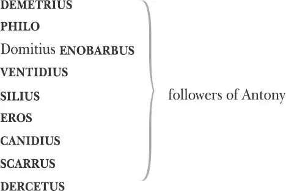
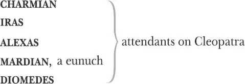
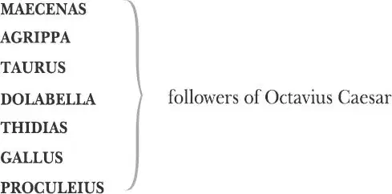

The Tragedy of Antony and Cleopatra
MARK ANTONY , a triumvir of Rome

An AMBASSADOR for Antony, a schoolmaster
CLEOPATRA , Queen of Egypt

SELEUCUS , Cleopatra's treasurer
Octavius CAESAR , a triumvir of Rome
LEPIDUS , a triumvir of Rome
OCTAVIA , sister to Octavius Caesar and later wife of Antony

Sextus Pompeius (POMPEY) , a rebel against the triumvirs
MESSENGERS
A SOOTHSAYER
SERVANTS of Pompey
A BOY SINGER
A CAPTAIN of Antony's army
A CLOWN
Attendants, Eunuchs, Sentries, Guards, Soldiers and Servants
Act 1
Scene 1 1 / running scene 1
Enter Demetrius and Philo
PHILO Nay, but this dotage 2 of our general's 3
O'erflows the measure 4 : those his goodly 5 eyes,
That o'er the files and musters 6 of the war
Have glowed like plated 7 Mars 8 , now bend 9 , now turn
The office 10 and devotion of their view
Upon a tawny 11 front 12 . His captain's heart,
Which in the scuffles of great fights hath burst
The buckles on his breast, reneges 13 all temper 14
And is become the bellows and the fan
To cool a gipsy's 15 lust.
Flourish 16 . Enter Antony, Cleopatra, her Ladies [Charmian and Iras ], the Train 17 , with Eunuchs 18 fanning her
Look where they come:
Take but good note, and you shall see in him
The triple pillar of the world 19 transformed
Into a strumpet's 20 fool. Behold and see.
CLEOPATRA If it be love indeed, tell 21 me how much.
ANTONY There's beggary in the love that can be reckoned 22 .
CLEOPATRA I'll set a bourn 23 how far to be beloved.
ANTONY Then must thou needs find out new heaven, new earth 24 .
Enter a Messenger
MESSENGER News, my good lord, from Rome.
ANTONY Grates me! 25 The sum 26 .
CLEOPATRA Nay, hear them 27 , Antony.
Fulvia 28 perchance 29 is angry, or who knows
If the scarce-bearded Caesar 30 have not sent
His powerful mandate 31 to you: 'Do this, or this;
Take in 32 that kingdom, and enfranchise 33 that:
Perform't, or else we damn thee.'
ANTONY How 34 , my love?
CLEOPATRA Perchance? Nay, and most like 35 .
You must not stay here longer: your dismission 36
Is come from Caesar, therefore hear it, Antony.
Where's Fulvia's process 37 ? — Caesar's I would say. Both?
Call in the messengers. As I am Egypt's queen,
Thou blushest, Antony, and that blood of thine
Is Caesar's homager 38 : else so 39 thy cheek pays shame
When shrill-tongued Fulvia scolds 40 . The messengers!
ANTONY Let Rome in Tiber 41 melt, and the wide arch
Of the ranged 42 empire fall: here is my space.
Kingdoms are clay: our dungy 43 earth alike
Feeds beast as man. The nobleness of life
Is to do thus: when such a mutual 44 pair
They embrace
And such a twain 45 can do't, in which I bind 46 ,
On pain of punishment 47 , the world to weet 48
We stand up peerless 49 .
CLEOPATRA Excellent falsehood!
Why did he marry Fulvia and not 50 love her?
I'll seem 51 the fool I am not. Antony
Will be himself.
ANTONY But stirred 52 by Cleopatra.
Now, for the love of Love and her soft hours,
Let's not confound 53 the time with conference 54 harsh;
There's not a minute of our lives should stretch 55
Without some pleasure now. What sport 56 tonight?
CLEOPATRA Hear the ambassadors.
ANTONY Fie 57 , wrangling 58 queen,
Whom everything becomes 59 , to chide 60 , to laugh,
To weep, whose every passion fully strives
To make itself in thee fair and admired.
No 61 messenger but thine, and all alone
Tonight we'll wander through the streets and note
The qualities 62 of people. Come, my queen,
Last night you did desire it.— Speak not to us.
To the Messenger
Exeunt [Antony and Cleopatra ] with 63 the Train
DEMETRIUS Is Caesar with Antonius prized so slight 64 ? 65
PHILO Sir, sometimes when he is not Antony,
He comes too short of that great property 66
Which still 67 should go with Antony.
DEMETRIUS I am full 68 sorry
That he approves 69 the common liar who
Thus speaks of him at Rome; but I will hope
Of better deeds tomorrow. Rest you happy 70 .
Exeunt
Scene 2 / running scene 1 continues
Enter Enobarbus, Lamprius, a Soothsayer 71 , Rannius, Lucillius, Charmian, Iras, Mardian the Eunuch and Alexas
CHARMIAN Lord Alexas, sweet Alexas, most anything Alexas, almost most absolute 72 Alexas, where's the soothsayer that you praised so to th'queen? O, that I knew this husband which you say must charge 73 his horns with garlands 74 !
ALEXAS Soothsayer.
SOOTHSAYER Your will?
CHARMIAN Is this the man? Is't you, sir, that know things?
SOOTHSAYER In nature's infinite book of secrecy
A little I can read.
ALEXAS Show him your hand.
To Charmian
ENOBARBUS Bring in the banquet 75 quickly: wine enough Cleopatra's health to drink.
To Servants within
Servants bring fruit and wine
CHARMIAN Good sir, give me good fortune.
Holds out her hand
SOOTHSAYER I make not, but foresee.
CHARMIAN Pray then foresee me one.
SOOTHSAYER You shall be yet far fairer 76 than you are.
CHARMIAN He means in flesh.
IRAS No, you shall paint 77 when you are old.
CHARMIAN Wrinkles forbid!
ALEXAS Vex not his prescience 78 : be attentive.
CHARMIAN Hush!
SOOTHSAYER You shall be more beloving 79 than beloved.
CHARMIAN I had rather heat my liver 80 with drinking.
ALEXAS Nay, hear him.
CHARMIAN Good now 81 , some excellent fortune: let me be married to three kings in a forenoon 82 and widow them all: let me have a child at fifty to whom Herod of Jewry 83 may do homage 84 . Find me to marry me with Octavius Caesar and companion me with my mistress.
SOOTHSAYER You shall outlive the lady whom you serve.
CHARMIAN O, excellent! I love long life better than figs 85 .
SOOTHSAYER You have seen and proved 86 a fairer former fortune
Than that which is to approach.
CHARMIAN Then belike 87 my children shall have no names 88 : prithee, how many boys and wenches 89 must 90 I have?
SOOTHSAYER If every of your wishes had a womb,
And fertile every wish, a million.
CHARMIAN Out 91 , fool! I forgive thee for a witch 92 .
ALEXAS You think none but your sheets are privy to 93 your wishes.
CHARMIAN Nay, come, tell Iras hers.
ALEXAS We'll know all our fortunes.
ENOBARBUS Mine, and most of our fortunes tonight, shall be drunk to bed 94 .
IRAS There's a palm presages 95 chastity, if nothing else.
Holds out her hand
CHARMIAN E'en as the o'erflowing Nilus presageth famine 96 .
IRAS Go, you wild 97 bedfellow, you cannot soothsay.
CHARMIAN Nay, if an oily palm 98 be not a fruitful prognostication 99 , I cannot scratch mine ear 100 . Prithee tell her but a workaday 101 fortune.
SOOTHSAYER Your fortunes are alike.
IRAS But how? But how? Give me particulars.
SOOTHSAYER I have said 102 .
IRAS Am I not an inch of fortune better than she?
CHARMIAN Well, if you were but an inch of fortune better than I, where would you choose it?
IRAS Not in my husband's nose 103 .
CHARMIAN Our worser thoughts heavens mend. Alexas — come, his fortune, his fortune! O, let him marry a woman that cannot go 104 , sweet Isis 105 , I beseech thee, and let her die too, and give him a worse, and let worse follow worse, till the worst of all follow him laughing to his grave, fifty-fold 106 a cuckold 107 ! Good Isis, hear me this prayer, though thou deny me a matter of more weight 108 : good Isis, I beseech thee!
IRAS Amen, dear goddess, hear that prayer of the people! For as it is a heartbreaking to see a handsome man loose-wived 109 , so it is a deadly sorrow to behold a foul 110 knave 111 uncuckolded 112 : therefore, dear Isis, keep decorum 113 and fortune him accordingly.
CHARMIAN Amen.
ALEXAS Lo, now, if it lay in their hands to make me a cuckold, they would make themselves whores, but they'd do't 114 !
Enter Cleopatra
ENOBARBUS Hush, here comes Antony.
CHARMIAN Not he, the queen.
CLEOPATRA Saw you my lord?
ENOBARBUS No, lady.
CLEOPATRA Was he not here?
CHARMIAN No, madam.
CLEOPATRA He was disposed to mirth, but on the sudden
A Roman thought 115 hath struck him. Enobarbus?
ENOBARBUS Madam?
CLEOPATRA Seek him and bring him hither.
[Exit Enobarbus ]
Where's Alexas?
ALEXAS Here, at your service. My lord approaches.
Enter Antony with a Messenger
CLEOPATRA We 116 will not look upon him: go with us.
Exeunt. [Antony and Messenger remain ]
MESSENGER Fulvia thy wife first came into the field 117 .
ANTONY Against my brother Lucius?
MESSENGER Ay,
But soon that war had end, and the time's state 118
Made friends of them, jointing their force 119 gainst Caesar,
Whose better issue 120 in the war from Italy
Upon the first encounter 121 , drave them 122 .
ANTONY Well, what worst?
MESSENGER The nature of bad news infects the teller.
ANTONY When it concerns the fool or coward. On!
Things that are past are done with me. 'Tis thus:
Who tells me true, though in his tale lie death,
I hear him as he flattered 123 .
MESSENGER Labienus 124 —
This is stiff 125 news — hath with his Parthian 126 force
Extended 127 Asia: from Euphrates 128
His conquering banner shook, from Syria
To Lydia 129 and to Ionia 130 , whilst—
ANTONY Antony, thou wouldst 131 say.
MESSENGER O, my lord!
ANTONY Speak to me home 132 , mince not the general tongue 133 ,
Name Cleopatra as she is called in Rome,
Rail thou in Fulvia's phrase 134 , and taunt my faults
With such full licence as both truth and malice
Have power to utter. O, then we bring forth weeds
When our quick 135 minds lie still 136 , and our ills told us
Is as our earing 137 . Fare thee well awhile.
MESSENGER At your noble pleasure.
Exit Messenger
Enter another Messenger
ANTONY From Sicyon 138 how 139 the news? Speak there.
SECOND MESSENGER The man from Sicyon—
ANTONY Is there such an one?
SECOND MESSENGER He stays upon your will 140 .
ANTONY Let him appear.—
[Exit Second Messenger ]
These strong Egyptian fetters I must break,
Or lose myself in dotage.—
Enter another Messenger with a letter
What 141 are you?
THIRD MESSENGER Fulvia thy wife is dead.
ANTONY Where died she?
THIRD MESSENGER In Sicyon.
Her length of sickness, with what else more serious
Importeth 142 thee to know, this bears.
Gives him the letter
ANTONY Forbear me 143 .—
[Exit Third Messenger ]
There's a great spirit gone. Thus did I desire it:
What our contempts doth often hurl from us
We wish it ours again 144 . The present pleasure,
By revolution low'ring 145 , does become
The opposite of itself. She's good, being gone.
The hand could 146 pluck her back that shoved her on.
I must from this enchanting 147 queen break off:
Ten thousand harms, more than the ills I know,
My idleness 148 doth hatch.—
Enter Enobarbus
How now, Enobarbus?
ENOBARBUS What's your pleasure, sir?
ANTONY I must with haste from hence.
ENOBARBUS Why, then, we kill all our women. We see how mortal 149 an unkindness is to them: if they suffer 150 our departure, death's the word.
ANTONY I must be gone.
ENOBARBUS Under a compelling occasion, let women die 151 . It were pity to cast them away for nothing, though between them and a great cause they should be esteemed nothing. Cleopatra, catching but the least noise 152 of this, dies instantly: I have seen her die twenty times upon far poorer moment 153 . I do think there is mettle 154 in death which commits some loving act upon her, she hath such a celerity 155 in dying.
ANTONY She is cunning 156 past man's thought.
ENOBARBUS Alack, sir, no: her passions are made of nothing but the finest part 157 of pure love. We cannot call her winds and waters sighs and tears: they are greater storms and tempests than almanacs 158 can report. This cannot be cunning in her; if it be, she makes a shower of rain as well as Jove 159 .
ANTONY Would 160 I had never seen her.
ENOBARBUS O sir, you had then left unseen a wonderful piece of work 161 , which not to have been blest withal 162 would have discredited your travel 163 .
ANTONY Fulvia is dead.
ENOBARBUS Sir?
ANTONY Fulvia is dead.
ENOBARBUS Fulvia?
ANTONY Dead.
ENOBARBUS Why, sir, give the gods a thankful sacrifice. When it pleaseth their deities to take the wife of a man from him, it shows to man the tailors of the earth 164 : comforting therein 165 , that when old robes are worn out, there are members 166 to make new. If there were no more women but Fulvia, then had you indeed a cut 167 , and the case 168 to be lamented. This grief is crowned 169 with consolation 170 : your old smock 171 brings forth a new petticoat 172 , and indeed the tears live in an onion that should water this sorrow.
ANTONY The business 173 she hath broachèd in the state
Cannot endure my absence.
ENOBARBUS And the business you have broached 174 here cannot be without you, especially that of Cleopatra's, which wholly depends on your abode 175 .
ANTONY No more light 176 answers. Let our officers
Have notice what we purpose. I shall break
The cause of our expedience 177 to the queen,
And get her leave to part 178 . For not alone 179
The death of Fulvia, with more urgent touches 180 ,
Do strongly speak to us, but the letters too
Of many our contriving 181 friends in Rome
Petition us at home 182 . Sextus Pompeius 183
Hath given the dare to 184 Caesar and commands
The empire of the sea. Our slippery 185 people,
Whose love is never linked to the deserver
Till his deserts are past, begin to throw 186
Pompey the Great 187 and all his dignities 188
Upon his son, who, high 189 in name and power,
Higher than both in blood and life 190 , stands up
For 191 the main 192 soldier, whose quality 193 going on 194 ,
The sides o'th'world may danger 195 . Much is breeding
Which, like the courser's hair, hath yet but life
And not a serpent's poison 196 . Say our pleasure,
To such whose place is under us, requires
Our quick remove from hence 197 .
ENOBARBUS I shall do't.
[Exeunt separately ]
Scene 3 / running scene 1 continues
Enter Cleopatra, Charmian, Alexas and Iras
CLEOPATRA Where is he?
CHARMIAN I did not see him since 198 .
CLEOPATRA See where he is, who's with him, what he does.
To Alexas
I did not send you 199 : if you find him sad 200 ,
Say I am dancing, if in mirth, report
That I am sudden sick. Quick, and return.
[Exit Alexas ]
CHARMIAN Madam, methinks if you did love him dearly,
You do not hold 201 the method to enforce
The like 202 from him.
CLEOPATRA What should I do I do not?
CHARMIAN In each thing give him way 203 : cross 204 him in nothing.
CLEOPATRA Thou teachest like a fool, the way to lose him.
CHARMIAN Tempt 205 him not so too far. I wish, forbear 206 :
In time we hate that which we often fear.
Enter Antony
But here comes Antony.
CLEOPATRA I am sick and sullen 207 .
ANTONY I am sorry to give breathing 208 to my purpose—
CLEOPATRA Help me away, dear Charmian! I shall fall.
It cannot be thus long 209 : the sides of nature
Will not sustain it 210 .
ANTONY Now, my dearest queen—
CLEOPATRA Pray you stand further from me 211 .
ANTONY What's the matter?
CLEOPATRA I know by that same eye 212 there's some good news.
What, says the married woman 213 you may go?
Would she had never given you leave to come.
Let her not say 'tis I that keep you here.
I have no power upon you: hers you are.
ANTONY The gods best know—
CLEOPATRA O, never was there queen
So mightily betrayed! Yet at the first
I saw the treasons planted.
ANTONY Cleopatra—
CLEOPATRA Why should I think you can be mine, and true —
Though you in swearing shake the thronèd gods —
Who have been false 214 to Fulvia? Riotous madness 215 ,
To be entangled with those mouth-made 216 vows
Which break themselves in swearing 217 !
ANTONY Most sweet queen—
CLEOPATRA Nay, pray you seek no colour 218 for your going,
But bid farewell and go: when you sued staying 219 ,
Then was the time for words: no going then.
Eternity was in our 220 lips and eyes,
Bliss in our brows bent 221 : none our parts 222 so poor
But was a race of heaven 223 . They are so still,
Or thou, the greatest soldier of the world,
Art turned the greatest liar.
ANTONY How now 224 , lady?
CLEOPATRA I would I had thy inches 225 : thou shouldst know
There were a heart 226 in Egypt 227 .
ANTONY Hear me, queen:
The strong necessity of time commands
Our services awhile, but my full heart
Remains in use 228 with you. Our Italy
Shines o'er with civil swords 229 ; Sextus Pompeius
Makes his approaches to the port 230 of Rome.
Equality of two domestic powers
Breed scrupulous faction 231 : the hated, grown to strength,
Are newly grown to love 232 : the condemned Pompey,
Rich in his father's honour, creeps apace 233
Into the hearts of such as have not thrived
Upon the present state 234 , whose numbers threaten,
And quietness, grown sick of rest, would purge 235
By any desperate change. My more particular 236 ,
And that which most with you should safe 237 my going,
Is Fulvia's death.
CLEOPATRA Though age from folly could not give me freedom,
It does from childishness. Can Fulvia die?
ANTONY She's dead, my queen.
Gives her the letters
Look here, and at thy sovereign leisure read
The garboils 238 she awaked: at the last, best 239 ,
See when and where she died.
CLEOPATRA O most false love!
Where be the sacred vials 240 thou shouldst fill
With sorrowful water? Now I see, I see,
In Fulvia's death how mine received shall be.
ANTONY Quarrel no more, but be prepared to know 241
The purposes I bear 242 , which are, or cease 243 ,
As you shall give th'advice 244 . By the fire
That quickens Nilus' slime 245 , I go from hence
Thy soldier, servant, making peace or war
As thou affects 246 .
CLEOPATRA Cut my lace 247 , Charmian, come!
But let it be 248 : I am quickly ill and well,
So Antony loves 249 .
ANTONY My precious queen, forbear 250
And give true evidence 251 to his love, which stands 252
An honourable trial.
CLEOPATRA So Fulvia told me.
I prithee turn aside and weep for her,
Then bid adieu to me, and say the tears
Belong to Egypt 253 . Good now, play one scene
Of excellent dissembling 254 , and let it look
Like perfect honour.
ANTONY You'll heat my blood 255 no more!
CLEOPATRA You can do better yet, but this is meetly 256 .
ANTONY Now, by sword—
CLEOPATRA And target 257 . Still he mends 258 ,
But this is not the best. Look, prithee, Charmian,
How this Herculean 259 Roman does become
The carriage of his chafe 260 .
ANTONY I'll leave you, lady.
CLEOPATRA Courteous lord, one word:
Sir, you and I must part, but that's not it:
Sir, you and I have loved, but there's not it:
That you know well. Something it is I would:
O, my oblivion 261 is a very Antony,
And I am all forgotten 262 .
ANTONY But 263 that your royalty
Holds idleness your subject 264 , I should take you
For idleness 265 itself.
CLEOPATRA 'Tis sweating labour 266
To bear such idleness so near the heart
As Cleopatra this. But, sir, forgive me,
Since my becomings 267 kill me when they do not
Eye 268 well to you. Your honour calls you hence:
Therefore be deaf to my unpitied folly,
And all the gods go with you. Upon your sword
Sit laurel victory, and smooth success
Be strewed before your feet 269 .
ANTONY Let us go. Come:
Our separation so abides and flies
That thou, residing here, goes yet with me,
And I, hence fleeting, here remain with thee 270 .
Away!
Exeunt
Scene 4 271 / running scene 2
Enter Octavius [Caesar ] reading a letter, Lepidus and their Train
CAESAR You may see, Lepidus, and henceforth know
It is not Caesar's natural vice to hate
Our great competitor 272 . From Alexandria
This is the news: he fishes, drinks and wastes
The lamps of night in revel. Is 273 not more manlike
Than Cleopatra, nor the Queen of Ptolemy 274
More womanly than he. Hardly gave audience 275 , or
Vouchsafed 276 to think he had partners. You shall find there
A man who is th'abstract 277 of all faults
That all men follow.
LEPIDUS I must not think there are
Evils enough to darken all his goodness:
His faults in him seem as the spots of heaven 278 ,
More fiery by night's blackness; hereditary
Rather than purchased 279 , what he cannot change,
Than what he chooses.
CAESAR You are too indulgent. Let's grant it is not
Amiss to tumble 280 on the bed of Ptolemy,
To give a kingdom for a mirth 281 , to sit
And keep the turn of tippling 282 with a slave,
To reel 283 the streets at noon, and stand the buffet 284
With knaves that smell of sweat: say this becomes him —
As 285 his composure must be rare indeed
Whom these things cannot blemish — yet must Antony
No way excuse his foils 286 when we do bear
So great weight in his lightness 287 . If he filled
His vacancy 288 with his voluptuousness 289 ,
Full surfeits 290 and the dryness of his bones 291
Call on him for't. But to confound 292 such time
That drums 293 him from his sport, and speaks as loud
As his own state and ours 294 , 'tis to be chid 295
As we rate 296 boys, who, being mature in knowledge 297 ,
Pawn their experience to their present pleasure
And so rebel to 298 judgement.
Enter a Messenger
LEPIDUS Here's more news.
MESSENGER Thy biddings 299 have been done, and every hour,
Most noble Caesar, shalt thou have report
How 'tis 300 abroad. Pompey is strong at sea,
And it appears he is beloved of those
That only have feared 301 Caesar: to the ports
The discontents 302 repair, and men's reports
Give him much wronged.
CAESAR I should have known no less.
It hath been taught us from the primal state 303
That he which is was wished until he were 304 ,
And the ebbed 305 man, ne'er love 306 d till ne'er worth love,
Comes deared 307 by being lacked 308 . This common body 309 ,
Like to a vagabond 310 flag 311 upon the stream,
Goes to and back, lackeying 312 the varying tide,
To rot itself with motion.
[Enter another Messenger ]
SECOND MESSENGER Caesar, I bring thee word
Menecrates and Menas, famous 313 pirates,
Make the sea serve them, which they ear 314 and wound
With keels of every kind. Many hot inroads 315
They make in Italy: the borders maritime 316
Lack blood 317 to think on't, and flush youth 318 revolt.
No vessel can peep forth but 'tis as soon
Taken 319 as seen, for Pompey's name strikes more
Than could his war resisted 320 .
CAESAR Antony,
Leave thy lascivious wassails 321 . When thou once
Was beaten from Modena 322 , where thou slew'st
Hirtius and Pansa, consuls, at thy heel
Did famine follow, whom 323 thou fought'st against —
Though daintily 324 brought up — with patience more
Than savages could suffer. Thou didst drink
The stale 325 of horses and the gilded 326 puddle
Which beasts would cough at. Thy palate then did deign 327
The roughest berry on the rudest 328 hedge.
Yea, like the stag when snow the pasture sheets 329 ,
The barks of trees thou browsèd 330 . On the Alps,
It is reported thou didst eat strange flesh
Which some did die to look on: and all this —
It wounds thine honour that I speak it now —
Was borne so like a soldier, that thy cheek
So much as lanked not 331 .
LEPIDUS 'Tis pity of 332 him.
CAESAR Let his shames quickly
Drive him to Rome: 'tis time we twain 333
Did show ourselves i'th'field 334 , and to that end
Assemble we immediate council. Pompey
Thrives in our idleness.
LEPIDUS Tomorrow, Caesar,
I shall be furnished to inform you rightly
Both what by sea and land I can be able 335
To front 336 this present time.
CAESAR Till which encounter,
It is my business too. Farewell.
LEPIDUS Farewell, my lord. What you shall know meantime
Of stirs 337 abroad, I shall beseech you, sir,
To let me be partaker.
CAESAR Doubt not, sir,
I knew it for my bond 338 .
Exeunt
Scene 5 339 / running scene 3
Enter Cleopatra, Charmian, Iras and Mardian
CLEOPATRA Charmian!
CHARMIAN Madam?
CLEOPATRA Ha, ha.
Yawns
Give me to drink mandragora 340 .
CHARMIAN Why, madam?
CLEOPATRA That I might sleep out this great gap of time
My Antony is away.
CHARMIAN You think of him too much.
CLEOPATRA O, 'tis treason!
CHARMIAN Madam, I trust not so.
CLEOPATRA Thou, eunuch Mardian!
MARDIAN What's your highness' pleasure?
CLEOPATRA Not now to hear thee sing 341 . I take no pleasure
In aught an eunuch has: 'tis well for thee
That, being unseminared 342 , thy freer 343 thoughts
May not fly forth of Egypt. Hast thou affections 344 ?
MARDIAN Yes, gracious madam.
CLEOPATRA Indeed?
MARDIAN Not in deed 345 , madam, for I can do 346 nothing
But what in deed is honest 347 to be done:
Yet have I fierce affections, and think
What Venus did with Mars 348 .
CLEOPATRA O, Charmian,
Where think'st thou he is now? Stands he, or sits he?
Or does he walk? Or is he on his horse?
O happy horse, to bear the weight of Antony!
Do bravely 349 , horse, for wot'st thou 350 whom thou mov'st?
The demi-Atlas 351 of this earth, the arm
And burgonet 352 353 of men. He's speaking now,
Or murmuring 'Where's my serpent of old Nile?'
For so he calls me. Now I feed myself
With most delicious poison. Think on me
That am with Phoebus' 354 amorous pinches black 355
And wrinkled deep in time. Broad-fronted 356 Caesar 357 ,
When thou wast here above the ground, I was
A morsel 358 for a monarch, and great Pompey 359
Would stand and make his eyes grow in my brow 360 :
There would he anchor his aspect 361 , and die 362
With looking on his life 363 .
Enter Alexas from Antony
ALEXAS Sovereign of Egypt, hail!
CLEOPATRA How much unlike art thou Mark Antony!
Yet, coming from him, that great med'cine 364 hath
With his tinct 365 gilded thee.
How goes it with my brave 366 Mark Antony?
ALEXAS Last thing he did, dear queen,
He kissed — the last of many doubled kisses —
This orient 367 pearl. His speech sticks in my heart.
CLEOPATRA Mine ear must pluck it thence.
ALEXAS 'Good friend,' quoth 368 he,
'Say the firm 369 Roman to great Egypt 370 sends
This treasure of an oyster, at whose foot,
To mend 371 the petty present, I will piece 372
Her opulent throne with kingdoms. All the east,
Say thou, shall call her mistress.' So he nodded,
And soberly did mount an arm-gaunt steed 373
Who neighed so high 374 that what I would have spoke
Was beastly dumbed 375 by him.
CLEOPATRA What, was he sad, or merry?
ALEXAS Like to the time o'th'year between the extremes
Of hot and cold, he was nor sad nor 376 merry.
CLEOPATRA O well-divided disposition! Note him,
Note him, good Charmian, 'tis the man 377 ; but note him.
He was not sad, for he would shine on those
That make their looks by his 378 : he was not merry,
Which seemed to tell them his remembrance lay
In Egypt with his joy: but between both.
O heavenly mingle! Be'st thou sad or merry,
The violence 379 of either thee becomes,
So does it no man else.— Met'st thou my posts 380 ?
ALEXAS Ay, madam, twenty several 381 messengers.
Why do you send so thick 382 ?
CLEOPATRA Who's 383 born that day
When I forget to send to Antony
Shall die a beggar. Ink and paper, Charmian.
Welcome, my good Alexas. Did I, Charmian,
Ever love Caesar so?
CHARMIAN O, that brave Caesar!
CLEOPATRA Be choked with such another emphasis.
Say 'the brave Antony'.
CHARMIAN The valiant Caesar.
CLEOPATRA By Isis, I will give thee bloody teeth,
If thou with Caesar paragon 384 again
My man of men.
CHARMIAN By your most gracious pardon,
I sing but after you.
CLEOPATRA My salad days,
When I was green 385 in judgement, cold in blood 386 ,
To say as I said then. But come, away,
Get me ink and paper.
He shall have every day a several greeting
Or I'll unpeople Egypt!
Exeunt
Act 2
Scene 1 387 / running scene 4
Enter Pompey, Menecrates and Menas, in warlike manner
POMPEY If the great gods be just, they shall assist
The deeds of justest men.
MENECRATES Know, worthy Pompey,
That what they do delay, they not deny 388 .
POMPEY Whiles we are suitors to their throne, decays
The thing we sue for 389 .
MENECRATES We, ignorant of ourselves,
Beg often our own harms, which the wise powers
Deny us for our good: so find we profit
By losing of our prayers.
POMPEY I shall do well:
The people love me, and the sea 390 is mine;
My powers 391 are crescent 392 , and my auguring 393 hope
Says it will come to th'full. Mark Antony
In Egypt sits at dinner 394 , and will make
No wars without 395 doors: Caesar gets money where
He loses hearts: Lepidus flatters both,
Of 396 both is flattered, but he neither loves 397 ,
Nor either cares for him.
MENAS Caesar and Lepidus are in the field:
A mighty strength 398 they carry.
POMPEY Where have you this? 'Tis false.
MENAS From Silvius, sir.
POMPEY He dreams. I know they are in Rome together,
Looking for 399 Antony. But all the charms 400 of love,
Salt 401 Cleopatra, soften thy waned 402 lip!
Let witchcraft join with beauty, lust with both,
Tie up the libertine in a field of feasts:
Keep his brain fuming 403 : epicurean 404 cooks
Sharpen with cloyless 405 sauce his appetite
That 406 sleep and feeding may prorogue 407 his honour,
Even till a Lethe'd 408 dullness—
Enter Varrius
How now, Varrius?
VARRIUS This is most certain that I shall deliver 409 :
Mark Antony is every hour in Rome
Expected. Since he went from Egypt 'tis
A space for 410 further travel.
POMPEY I could have given less matter 411
A better ear 412 . Menas, I did not think
This amorous surfeiter would have donned his helm 413
For such a petty war: his soldiership
Is twice the other twain 414 . But let us rear
The higher our opinion 415 , that our stirring
Can from the lap 416 of Egypt's widow 417 pluck
The ne'er lust-wearied Antony.
MENAS I cannot hope 418
Caesar and Antony shall well greet together 419 ;
His wife that's dead 420 did trespasses 421 to Caesar:
His brother 422 warred upon him, although I think
Not moved 423 by Antony.
POMPEY I know not, Menas,
How lesser enmities may give way to greater.
Were't not that we stand up against them all,
'Twere pregnant 424 they should square 425 between themselves,
For they have entertainèd 426 cause enough
To draw their swords. But how the fear of us
May cement their divisions, and bind up
The petty difference, we yet not 427 know.
Be't as our gods will have't! It only stands
Our lives upon to use our strongest hands 428 .
Come, Menas.
Exeunt
Scene 2 429 / running scene 5
Enter Enobarbus and Lepidus
LEPIDUS Good Enobarbus, 'tis a worthy deed,
And shall become you well, to entreat your captain
To soft and gentle speech.
ENOBARBUS I shall entreat him
To answer like himself 430 : if Caesar move 431 him,
Let Antony look over Caesar's head 432
And speak as loud as Mars 433 . By Jupiter 434 ,
Were I the wearer of Antonio's beard,
I would not shave't today 435 !
LEPIDUS 'Tis not a time for private stomaching 436 .
ENOBARBUS Every time
Serves for the matter that is then born in't.
LEPIDUS But small to greater matters must give way.
ENOBARBUS Not if the small come first.
LEPIDUS Your speech is passion:
But pray you stir no embers up. Here comes
The noble Antony.
Enter Antony and Ventidius
ENOBARBUS And yonder Caesar.
Enter Caesar, Maecenas and Agrippa
ANTONY If we compose 437 well here, to Parthia 438 .
Hark, Ventidius.
They converse apart
CAESAR I do not know, Maecenas, ask Agrippa 439 .
LEPIDUS Noble friends,
That which combined 440 us was most great, and let not
A leaner action rend us 441 . What's 442 amiss,
May it be gently 443 heard. When we debate
Our trivial difference loud, we do commit
Murder in healing wounds 444 . Then, noble partners,
The rather for 445 I earnestly beseech,
Touch 446 you the sourest points with sweetest terms,
Nor curstness grow to th'matter 447 .
ANTONY 'Tis spoken well:
Were we before our armies, and to 448 fight,
I should do thus.
Flourish
CAESAR Welcome to Rome.
ANTONY Thank you.
CAESAR Sit.
ANTONY Sit, sir.
CAESAR Nay then 449 .
Caesar sits, then Antony
ANTONY I learn you take things ill which are not so,
Or being 450 , concern you not.
CAESAR I must be laughed at
If, or for nothing or 451 a little, I
Should say myself offended, and with you
Chiefly i'th'world 452 : more laughed at that I should
Once name you derogately 453 when to sound your name
It not concerned me 454 .
ANTONY My being in Egypt, Caesar,
What was't to you?
CAESAR No more than my residing here at Rome
Might be to you in Egypt: yet if you there
Did practise on my state 455 , your being in Egypt
Might be my question 456 .
ANTONY How intend you 457 , 'practised'?
CAESAR You may be pleased to catch at 458 mine intent
By what did here befall me. Your wife and brother
Made wars upon me, and their contestation 459
Was theme for you 460 : you were the word of war 461 .
ANTONY You do mistake your business. My brother never
Did urge me 462 in his act: I did inquire 463 it,
And have my learning 464 from some true reports 465
That drew their swords with you 466 . Did he not rather
Discredit my authority with 467 yours,
And make the wars alike against my stomach 468 ,
Having alike your cause 469 ? Of this my letters
Before did satisfy you. If you'll patch 470 a quarrel,
As matter whole 471 you have to make it with,
It must not be with this.
CAESAR You praise yourself
By laying defects of judgement to me, but
You patched up your excuses.
ANTONY Not so, not so:
I know you could not lack, I am certain on't,
Very necessity of this thought 472 , that I,
Your partner in the cause gainst which he 473 fought,
Could not with graceful 474 eyes attend those wars
Which fronted 475 mine own peace. As for my wife,
I would you had her spirit in such another 476 :
The third o'th'world is yours, which with a snaffle 477
You may pace 478 easy, but not such a wife.
ENOBARBUS Would we had all such wives, that the men might go to wars with the women!
ANTONY So much uncurbable 479 , her garboils 480 , Caesar,
Made out of her impatience — which not wanted 481
Shrewdness of policy 482 too — I grieving grant 483
Did you too much disquiet. For that you must
But 484 say I could not help it.
CAESAR I wrote to you:
When rioting 485 in Alexandria you
Did pocket up my letters, and with taunts
Did gibe my missive out of audience 486 .
ANTONY Sir,
He fell upon me ere admitted 487 , then.
Three kings I had newly 488 feasted, and did want
Of what I was 489 i'th'morning. But next day
I told him of myself 490 , which was as much
As to have asked him pardon. Let this fellow
Be nothing 491 of our strife: if we contend 492 ,
Out of our question 493 wipe him.
CAESAR You have broken
The article 494 of your oath, which you shall never
Have tongue to charge me with.
LEPIDUS Soft 495 , Caesar!
ANTONY No, Lepidus, let him speak.
The honour is sacred which he talks on now,
Supposing 496 that I lacked it. But, on, Caesar:
The article of my oath—
CAESAR To lend me arms and aid when I required 497 them,
The which you both denied.
ANTONY Neglected rather:
And then when poisoned hours had bound me up
From mine own knowledge 498 . As nearly as I may,
I'll play the penitent to you: but mine honesty
Shall not make poor my greatness, nor my power
Work without it 499 . Truth is that Fulvia,
To have me out of Egypt, made wars here,
For which myself, the ignorant motive 500 , do
So far ask pardon as befits mine honour
To stoop in such a case.
LEPIDUS 'Tis noble spoken.
MAECENAS If it might please you to enforce no further
The griefs 501 between ye, to forget them quite 502
Were to remember that the present need
Speaks to atone 503 you.
LEPIDUS Worthily spoken, Maecenas.
ENOBARBUS Or, if you borrow one another's love for the instant 504 , you may, when you hear no more words of Pompey, return it again: you shall have time to wrangle in when you have nothing else to do.
ANTONY Thou art a soldier only. Speak no more.
ENOBARBUS That truth should be silent, I had almost forgot.
ANTONY You wrong this presence 505 , therefore speak no more.
ENOBARBUS Go to, then! 506 You 507 considerate 508 stone.
CAESAR I do not much dislike the matter, but
The manner of his speech: for't cannot be
We shall remain in friendship, our conditions 509
So diff'ring in their acts. Yet if I knew
What hoop should hold us staunch 510 , from edge to edge
O'th'world I would pursue it.
AGRIPPA Give me leave, Caesar.
CAESAR Speak, Agrippa.
AGRIPPA Thou hast a sister by the mother's side 511 ,
Admired Octavia: great Mark Antony
Is now a widower.
CAESAR Say not so, Agrippa:
If Cleopatra heard you, your reproof
Were well deserved of rashness 512 .
ANTONY I am not married, Caesar: let me hear
Agrippa further speak.
AGRIPPA To hold you in perpetual amity 513 ,
To make you brothers and to knit your hearts
With an unslipping knot, take Antony
Octavia to his wife, whose beauty claims
No worse a husband than the best of men,
Whose virtue and whose general graces speak
That which none else can utter 514 . By this marriage
All little jealousies 515 which now seem great,
And all great fears which now import 516 their dangers
Would then be nothing. Truths would be tales,
Where now half-tales be truths 517 . Her love to both 518
Would each to other, and all loves to both
Draw after her. Pardon what I have spoke,
For 'tis a studied, not a present 519 thought,
By duty ruminated.
ANTONY Will Caesar speak?
CAESAR Not till he hears how Antony is touched
With 520 what is spoke already.
ANTONY What power 521 is in Agrippa,
If I would 522 say, 'Agrippa, be it so',
To make this good?
CAESAR The power of Caesar, and
His power unto 523 Octavia.
ANTONY May I never,
To this good purpose that so fairly shows 524 ,
Dream of impediment 525 ! Let me have thy hand.
Further this act of grace 526 , and from this hour
The heart of brothers govern in our loves
And sway our great designs!
CAESAR There's my hand:
They clasp hands
A sister I bequeath you, whom no brother
Did ever love so dearly. Let her live
To join our kingdoms and our hearts, and never
Fly off our loves again 527 !
LEPIDUS Happily, amen!
ANTONY I did not think to draw my sword gainst Pompey,
For he hath laid strange courtesies and great
Of late upon me 528 . I must thank him, only
Lest my remembrance 529 suffer ill report:
At heel of that, defy him 530 .
LEPIDUS Time calls upon's.
Of 531 us must Pompey presently 532 be sought,
Or else he seeks out us.
ANTONY Where lies he?
CAESAR About the Mount Misena 533 .
ANTONY What is his strength by land?
CAESAR Great and increasing, but by sea
He is an absolute master.
ANTONY So is the fame 534 .
Would we had spoke together 535 ! Haste we for it.
Yet, ere 536 we put ourselves in arms, dispatch we 537
The business we have talked of.
CAESAR With most gladness,
And do invite you to my sister's view 538 ,
Whither straight I'll lead you.
ANTONY Let us, Lepidus, not lack your company.
LEPIDUS Noble Antony,
Not 539 sickness should detain me.
Flourish. Exeunt all. Enobarbus, Agrippa, Maecenas remain
MAECENAS Welcome from Egypt, sir.
ENOBARBUS Half the heart 540 of Caesar, worthy Maecenas! My honourable friend, Agrippa!
AGRIPPA Good Enobarbus!
MAECENAS We have cause to be glad that matters are so well digested 541 . You stayed well by't 542 in Egypt.
ENOBARBUS Ay, sir, we did sleep day out of countenance 543 and made the night light 544 with drinking.
MAECENAS Eight wild boars roasted whole at a breakfast, and but 545 twelve persons there. Is this true?
ENOBARBUS This was but as a fly by 546 an eagle: we had much more monstrous matter of feast, which worthily deserved noting.
MAECENAS She's a most triumphant 547 lady, if report be square 548 to her.
ENOBARBUS When she first met Mark Antony, she pursed 549 up his heart upon the river of Cydnus 550 .
AGRIPPA There she appeared indeed, or my reporter devised well for her 551 .
ENOBARBUS I will tell you
The barge she sat in, like a burnished 552 throne,
Burned 553 on the water: the poop 554 was beaten gold,
Purple the sails, and so perfumèd that
The winds were lovesick with them: the oars were silver,
Which to the tune of flutes kept stroke, and made
The water which they beat to follow faster,
As amorous of their strokes 555 . For her own person,
It beggared all description: she did lie
In her pavilion, cloth-of-gold of tissue 556 ,
O'er-picturing that Venus where we see
The fancy out-work nature 557 : on each side her 558
Stood pretty dimpled boys, like 559 smiling Cupid 560 s,
With divers-coloured 561 fans whose wind did seem
To glow 562 the delicate cheeks which they did cool,
And what they undid did.
AGRIPPA O, rare 563 for Antony!
ENOBARBUS Her gentlewomen, like the Nereides 564 ,
So many mermaids, tended her i'th'eyes 565 ,
And made their bends adornings 566 . At the helm
A seeming mermaid steers: the silken tackle 567
Swell 568 with the touches of those flower-soft hands
That yarely frame the office 569 . From the barge
A strange invisible perfume hits the sense
Of the adjacent wharfs 570 . The city cast
Her people out upon her, and Antony,
Enthroned i'th'market-place, did sit alone,
Whistling to th'air, which, but for vacancy 571 ,
Had 572 gone to gaze on Cleopatra too,
And made a gap in nature.
AGRIPPA Rare Egyptian 573 !
ENOBARBUS Upon her landing, Antony sent to her,
Invited her to supper: she replied
It should be better he became her guest,
Which she entreated. Our courteous Antony,
Whom ne'er the word of 'No' woman heard speak,
Being barbered 574 ten times o'er, goes to the feast,
And for his ordinary 575 , pays his heart
For what his eyes eat only 576 .
AGRIPPA Royal wench 577 !
She made great Caesar 578 lay his sword to bed 579 .
He ploughed her, and she cropped 580 .
ENOBARBUS I saw her once
Hop forty paces through the public street
And, having lost her breath, she spoke and panted,
That 581 she did make defect perfection,
And, breathless, pour breath forth.
MAECENAS Now Antony must leave her utterly.
ENOBARBUS Never! He will not.
Age cannot wither her, nor custom stale 582
Her infinite variety: other women cloy
The appetites they feed, but she makes hungry
Where most she satisfies. For vilest things
Become themselves 583 in her, that the holy priests
Bless her when she is riggish 584 .
MAECENAS If beauty, wisdom, modesty, can settle
The heart of Antony, Octavia is
A blessèd lottery 585 to him.
AGRIPPA Let us go.
Good Enobarbus, make yourself my guest
Whilst you abide here.
ENOBARBUS Humbly, sir, I thank you.
Exeunt
Scene 3 / running scene 5 continues
Enter Antony, Caesar, Octavia between them
ANTONY The world and my great office 586 will sometimes
Divide me from your bosom.
OCTAVIA All which time
Before the gods my knee shall bow my prayers
To them for you.
ANTONY Goodnight, sir. My Octavia,
Read not my blemishes in the world's report 587 :
I have not kept my square 588 , but that to come
Shall all be done by th'rule 589 590 . Goodnight, dear lady.
OCTAVIA Goodnight, sir.
CAESAR Goodnight.
Exeunt [Caesar and Octavia ]
Enter Soothsayer
ANTONY Now, sirrah 591 : you do wish yourself in Egypt?
SOOTHSAYER Would I had never come from thence, nor you thither 592 .
ANTONY If you can 593 , your reason?
SOOTHSAYER I see it in my motion 594 , have it not in my tongue.
But yet hie you 595 to Egypt again.
ANTONY Say to me, whose fortunes shall rise higher,
Caesar's or mine?
SOOTHSAYER Caesar's.
Therefore, O Antony, stay not by his side:
Thy demon 596 , that thy 597 spirit which keeps 598 thee, is
Noble, courageous, high unmatchable,
Where Caesar's is not. But near him, thy angel 599
Becomes afeared, as 600 being o'erpowered: therefore
Make space enough between you.
ANTONY Speak this no more.
SOOTHSAYER To none but thee 601 , no more but when to thee.
If thou dost play with him at any game,
Thou art sure to lose, and of that natural luck
He beats thee gainst the odds. Thy lustre thickens 602
When he 603 shines by: I say again, thy spirit
Is all afraid to govern thee near him,
But, he away, 'tis noble.
ANTONY Get thee gone.
Say to Ventidius I would speak with him:
Exit [Soothsayer ]
He shall to Parthia. Be it art or hap 604 ,
He hath spoken true: the very dice obey him,
And in our sports my better cunning faints
Under his chance 605 . If we draw lots, he speeds 606 :
His cocks do win the battle still of mine
When it 607 is all to nought, and his quails ever
Beat mine, inhooped 608 , at odds 609 . I will to Egypt:
And though I make this marriage for my peace,
I'th'east my pleasure lies.— O, come, Ventidius,
Enter Ventidius
You must to Parthia: your commission's ready,
Follow me and receive't.
Exeunt
Scene 4 / running scene 5 continues
Enter Lepidus, Maecenas and Agrippa
LEPIDUS Trouble yourselves no further: pray you hasten
Your generals after 610 .
AGRIPPA Sir, Mark Antony
Will e'en 611 but kiss Octavia, and we'll follow.
LEPIDUS Till I shall see you in your soldier's dress,
Which will become you both, farewell.
MAECENAS We shall,
As I conceive the journey, be at the Mount 612
Before you, Lepidus.
LEPIDUS Your way is shorter.
My purposes do draw me much about 613 :
You'll win two days upon me.
BOTH Sir, good success!
LEPIDUS Farewell.
Exeunt
Scene 5 614 / running scene 6
Enter Cleopatra, Charmian, Iras and Alexas
CLEOPATRA Give me some music: music, moody food
Of us that trade 615 in love.
ALL The music, ho!
Enter Mardian the Eunuch
CLEOPATRA Let it alone. Let's to billiards: come, Charmian.
CHARMIAN My arm is sore, best play with Mardian.
CLEOPATRA As well a woman with an eunuch played
As with a woman. Come, you'll play 616 with me, sir?
MARDIAN As well as I can, madam.
CLEOPATRA And when good will 617 is showed, though't come too short 618 ,
The actor 619 may plead pardon. I'll none now.
Give me mine angle 620 : we'll to th'river. There,
My music playing far off, I will betray 621
Tawny-finned 622 fishes: my bended hook shall pierce
Their slimy jaws, and, as I draw them up,
I'll think them every one an Antony,
And say 'Ah, ha! You're caught!'
CHARMIAN 'Twas merry when
You wagered on your angling, when your diver 623
Did hang a salt-fish 624 on his hook, which he
With fervency 625 drew up.
CLEOPATRA That time? O times!
I laughed him out of patience, and that night
I laughed him into patience, and next morn,
Ere the ninth hour, I drunk him to his bed,
Then put my tires and mantles 626 on him, whilst
I wore his sword Philippan 627 .—
Enter a Messenger
O, from Italy
Ram thou thy fruitful tidings in mine ears,
That long time have been barren 628 .
MESSENGER Madam, madam—
CLEOPATRA Antonio's dead! If thou say so, villain,
Thou kill'st thy mistress. But well and free,
If thou so yield 629 him, there is gold, and here
Offers gold
My bluest veins to kiss: a hand that kings
Offers her hand
Have lipped 630 , and trembled kissing.
MESSENGER First, madam, he is well.
CLEOPATRA Why, there's more gold.
But sirrah, mark, we use 631
To say the dead are well 632 : bring it to that,
The gold I give thee will I melt and pour
Down thy ill-uttering throat.
MESSENGER Good madam, hear me.
CLEOPATRA Well, go to 633 , I will.
But there's no goodness in thy face if Antony
Be free and healthful; so tart a favour 634
To trumpet such good tidings! If not well,
Thou shouldst come like a Fury 635 crowned with snakes,
Not like a formal 636 man.
MESSENGER Will't please you hear me?
CLEOPATRA I have a mind to strike thee ere thou speak'st:
Yet if thou say Antony lives, 'tis well 637 ,
Or friends with Caesar, or 638 not captive to him,
I'll set thee in a shower of gold 639 and hail
Rich pearls upon thee.
MESSENGER Madam, he's well.
CLEOPATRA Well said.
MESSENGER And friends with Caesar.
CLEOPATRA Thou'rt an honest 640 man.
MESSENGER Caesar and he are greater friends than ever.
CLEOPATRA Make thee a fortune from me.
MESSENGER But yet, madam—
CLEOPATRA I do not like 'But yet': it does allay
The good precedence 641 . Fie upon 'But yet'!
'But yet' is as a jailer to bring forth
Some monstrous malefactor 642 . Prithee friend,
Pour out the pack of matter to mine ear 643 ,
The good and bad together: he's friends with Caesar,
In state of health thou say'st and, thou say'st, free.
MESSENGER Free, madam? No: I made no such report.
He's bound 644 unto Octavia.
CLEOPATRA For what good turn?
MESSENGER For the best turn 645 i'th'bed.
CLEOPATRA I am pale, Charmian.
MESSENGER Madam, he's married to Octavia.
CLEOPATRA The most infectious pestilence 646 upon thee!
Strikes him down
MESSENGER Good madam, patience.
CLEOPATRA What say you?
Strikes him
Hence, horrible villain, or I'll spurn 647 thine eyes
Like balls before me! I'll unhair thy head!
She hauls him up and down
Thou shalt be whipped with wire and stewed in brine,
Smarting in ling'ring pickle 648 !
MESSENGER Gracious madam,
I that do bring the news made not the match.
CLEOPATRA Say 'tis not so, a province I will give thee,
And make thy fortunes proud 649 : the blow thou hadst
Shall make thy peace 650 for moving me to rage,
And I will boot 651 thee with what gift beside
Thy modesty can beg.
MESSENGER He's married, madam.
CLEOPATRA Rogue, thou hast lived too long!
Draw a knife
MESSENGER Nay then, I'll run.
What mean you, madam? I have made no fault.
Exit
CHARMIAN Good madam, keep yourself 652 within yourself.
The man is innocent.
CLEOPATRA Some innocents scape not the thunderbolt 653 .
Melt Egypt 654 into Nile, and kindly 655 creatures
Turn all to serpents! Call the slave again.
Though I am mad 656 , I will not bite him: call!
CHARMIAN He is afeard to come.
CLEOPATRA I will not hurt him.
[Exit Charmian ]
These hands do lack nobility that they strike
A meaner 657 than myself, since I myself
Have given myself the cause 658 .—
Enter the Messenger again [with Charmian ]
Come hither, sir.
Though it be honest, it is never good
To bring bad news: give to a gracious 659 message
An host of tongues 660 , but let ill tidings tell
Themselves when they be felt 661 .
MESSENGER I have done my duty.
CLEOPATRA Is he married?
I cannot hate thee worser than I do
If thou again say 'Yes.'
MESSENGER He's married, madam.
CLEOPATRA The gods confound 662 thee! Dost thou hold there still 663 ?
MESSENGER Should I lie, madam?
CLEOPATRA O, I would thou didst,
So 664 half my Egypt were submerged and made
A cistern 665 for scaled snakes! Go, get thee hence!
Hadst thou Narcissus 666 in thy face, to me
Thou wouldst appear most ugly. He is married?
MESSENGER I crave your highness' pardon.
CLEOPATRA He is married?
MESSENGER Take no offence that I would not offend you 667 .
To punish me for what you make me do
Seems much unequal 668 . He's married to Octavia.
CLEOPATRA O, that his fault should make a knave of thee,
That art not what thou'rt sure of! 669 Get thee hence,
The merchandise 670 which thou hast brought from Rome
Are all too dear 671 for me: lie they upon thy hand,
And be undone by 'em 672 !
[Exit Messenger ]
CHARMIAN Good your highness, patience.
CLEOPATRA In praising Antony, I have dispraised Caesar.
CHARMIAN Many times, madam.
CLEOPATRA I am paid for't now. Lead me from hence:
I faint! O Iras, Charmian! 'Tis no matter.
Go to the fellow, good Alexas, bid him
Report the feature 673 of Octavia: her years 674 ,
Her inclination 675 , let him 676 not leave out
The colour of her hair. Bring me word quickly.
[Exit Alexas ]
Let him for ever go.— Let him not, Charmian,
Though he be painted one way like a Gorgon,
The other way's a Mars 677 .— Bid you Alexas
To Iras
Bring me word how tall she is.— Pity me, Charmian,
But do not speak to me. Lead me to my chamber.
Exeunt
Scene 6 678 / running scene 7
Flourish. Enter Pompey at one door, with Drum and Trumpet 679 , at another, Caesar, Lepidus, Antony, Enobarbus, Maecenas, Agrippa, Menas with Soldiers marching
POMPEY Your hostages I have, so have you mine,
And we shall talk before we fight.
CAESAR Most meet 680
That first we come to words, and therefore have we
Our written purposes 681 before us sent,
Which, if thou hast considered, let us know
If 'twill tie up 682 thy discontented sword
And carry back to Sicily much tall 683 youth
That else 684 must perish here.
POMPEY To you all three,
The senators alone 685 of this great world,
Chief factors 686 for the gods: I do not know
Wherefore 687 my father 688 should revengers want 689 ,
Having a son and friends, since Julius Caesar,
Who at Philippi the good Brutus ghosted 690 ,
There saw you labouring for him. What was't
That moved 691 pale Cassius to conspire? And what
Made the all-honoured, honest 692 Roman, Brutus,
With the armed rest, courtiers 693 of beauteous freedom,
To drench 694 the Capitol 695 , but that they would
Have one man but a man 696 ? And that is it
Hath made me rig my navy, at whose burden
The angered ocean foams, with which I meant
To scourge 697 th'ingratitude that despiteful 698 Rome
Cast on my noble father.
CAESAR Take your time.
ANTONY Thou canst not fear 699 us, Pompey, with thy sails.
We'll speak 700 with thee at sea. At land thou know'st
How much we do o'er-count 701 thee.
POMPEY At land indeed
Thou dost o'er-count me of my father's house 702 :
But since the cuckoo builds not for himself 703 ,
Remain in't as thou mayst 704 .
LEPIDUS Be pleased to tell us —
For this is from the present 705 — how you take 706
The offers we have sent you.
CAESAR There's the point.
ANTONY Which do not be entreated to 707 , but weigh 708
What it is worth embraced 709 .
CAESAR And what may follow,
To try a larger fortune 710 .
POMPEY You have made me offer
Of Sicily, Sardinia, and I must
Rid all the sea of pirates. Then to send
Measures of wheat to Rome: this 'greed upon
To part 711 with unhacked edges 712 , and bear back
CAESAR, ANTONY and LEPIDUS That's our offer.
POMPEY Know, then,
I came before you here a man prepared
To take this offer. But Mark Antony
Put me to some impatience, though I lose
The praise of 715 it by telling. You must 716 know
When Caesar and your brother were at blows,
Your mother came to Sicily and did find
Her welcome friendly.
ANTONY I have heard it, Pompey,
And am well studied 717 for a liberal thanks
Which I do owe you.
POMPEY Let me have your hand:
They shake hands
I did not think, sir, to have met you here.
ANTONY The beds i'th'east are soft, and thanks to you,
That called me timelier 718 than my purpose 719 hither,
For I have gained by't.
CAESAR Since I saw you last, there's a change upon you.
POMPEY Well, I know not
What counts 720 harsh fortune casts upon my face,
But in my bosom shall she never come
To make my heart her vassal 721 .
LEPIDUS Well met here.
POMPEY I hope so, Lepidus. Thus we are agreed:
I crave our composition 722 may be written
And sealed between us 723 .
CAESAR That's the next to do.
POMPEY We'll feast each other ere we part, and let's
Draw lots who shall begin.
ANTONY That will I, Pompey.
POMPEY No, Antony, take the lot 724 : but, first
Or last 725 , your fine Egyptian cookery
Shall have the fame 726 . I have heard that Julius Caesar
Grew fat with feasting there 727 .
ANTONY You have heard much.
POMPEY I have fair 728 meanings, sir.
ANTONY And fair words to them 729 .
POMPEY Then so much have I heard,
And I have heard, Apollodorus 730 carried—
ENOBARBUS No more of that: he did so.
POMPEY What, I pray you?
ENOBARBUS A certain queen to Caesar in a mattress.
POMPEY I know thee now. How far'st 731 thou, soldier?
ENOBARBUS Well,
And well am like to do, for I perceive
Four feasts are toward 732 .
POMPEY Let me shake thy hand.
They shake hands
I never hated thee: I have seen thee fight,
When I have envied thy behaviour 733 .
ENOBARBUS Sir,
I never loved you much, but I ha' praised ye
When you have well deserved ten times as much
As I have said you did.
POMPEY Enjoy thy plainness 734 ,
It nothing ill becomes 735 thee.
Aboard my galley 736 I invite you all.
Will you lead, lords?
CAESAR, ANTONY and LEPIDUS Show's the way, sir.
POMPEY Come.
Exeunt. Enobarbus and Menas remain
MENAS Thy father, Pompey, would ne'er have made this treaty.—
Aside
You and I have known 737 , sir.
To Enobarbus
ENOBARBUS At sea, I think.
MENAS We have, sir.
ENOBARBUS You have done well by water.
MENAS And you by land.
ENOBARBUS I will praise any man that will praise me, though it cannot be denied what I have done by land.
MENAS Nor what I have done by water.
ENOBARBUS Yes, something you can deny for your own safety: you have been a great thief by sea.
MENAS And you by land.
ENOBARBUS There I deny my land service. But give me your hand, Menas. If our eyes had authority, here they might take 738 two thieves 739 kissing.
They shake hands
MENAS All men's faces are true 740 , whatsome'er their hands are.
ENOBARBUS But there is never a fair woman has a true 741 face.
MENAS No slander. They steal hearts.
ENOBARBUS We came hither to fight with you.
MENAS For my part, I am sorry it is turned to a drinking. Pompey doth this day laugh away his fortune.
ENOBARBUS If he do, sure he cannot weep't back again.
MENAS You've said 742 , sir. We looked not for 743 Mark Antony here. Pray you, is he married to Cleopatra?
ENOBARBUS Caesar's sister is called Octavia.
MENAS True, sir, she was the wife of Caius Marcellus.
ENOBARBUS But she is now the wife of Marcus Antonius.
MENAS Pray ye, sir? 744
ENOBARBUS 'Tis true.
MENAS Then is Caesar and he forever knit together.
ENOBARBUS If I were bound to divine 745 of this unity, I would not prophesy so.
MENAS I think the policy of that purpose made more in 746 the marriage than the love of the parties.
ENOBARBUS I think so too. But you shall find, the band 747 that seems to tie their friendship together will be the very strangler of their amity: Octavia is of a holy, cold and still 748 conversation 749 .
MENAS Who would not have his wife so?
ENOBARBUS Not he that himself is not so, which is Mark Antony. He will to his Egyptian dish 750 again: then shall the sighs of Octavia blow the fire up 751 in Caesar, and — as I said before — that which is the strength of their amity shall prove the immediate author 752 of their variance 753 . Antony will use his affection where it is 754 . He married but his occasion 755 here.
MENAS And thus it may be. Come, sir, will you aboard? I have a health 756 for you.
ENOBARBUS I shall take it, sir: we have used our throats in Egypt.
MENAS Come, let's away.
Exeunt
Scene 7 757 / running scene 8
Music plays. Enter two or three Servants with a banquet 758
FIRST SERVANT Here they'll be, man. Some o'their plants 759 are ill-rooted already: the least wind i'th'world will blow them down.
SECOND SERVANT Lepidus is high-coloured 760 .
FIRST SERVANT They have made him drink alms-drink 761 .
SECOND SERVANT As they pinch one another by the disposition 762 , he cries out 'No more', reconciles them to his entreaty, and himself to th'drink.
FIRST SERVANT But it raises the greater war between him and his discretion 763 .
SECOND SERVANT Why, this it is to have a name in great men's fellowship 764 : I had as lief 765 have a reed that will do me no service as a partisan 766 I could not heave 767 .
FIRST SERVANT To be called into a huge sphere and not to be seen to move in't, are the holes where eyes should be, which pitifully disaster the cheeks 768 .
A sennet 769 sounded. Enter Caesar, Antony, Pompey, Lepidus, Agrippa, Maecenas, Enobarbus, Menas, with other Captains [and a Boy Singer ]
ANTONY Thus do they, sir: they take 770 the flow o'th'Nile
By certain scales 771 i'th'pyramid 772 . They know,
By th'height, the lowness, or the mean 773 , if dearth 774
Or foison 775 follow. The higher Nilus swells,
The more it promises. As it ebbs, the seedsman
Upon the slime and ooze 776 scatters his grain,
And shortly comes to harvest.
LEPIDUS You've strange serpents there?
ANTONY Ay, Lepidus.
LEPIDUS Your serpent of Egypt is bred now of your mud by the operation of your sun: so is your crocodile 777 .
ANTONY They are so.
POMPEY Sit, and some wine! A health to Lepidus!
They sit and drink
LEPIDUS I am not so well as I should be, but I'll ne'er out 778 .
ENOBARBUS Not till you have slept.— I fear me you'll be in 779 till then.
Aside
LEPIDUS Nay, certainly, I have heard the Ptolemies 780 ' pyramises 781 are very goodly things: without contradiction, I have heard that.
MENAS Pompey, a word.
Aside to Pompey
POMPEY Say in mine ear what is't.
Aside to Menas
MENAS Forsake 782 thy seat, I do beseech thee, captain,
Aside to Pompey
And hear me speak a word.
POMPEY Whispers in's ear Forbear me till anon 783 .— This wine for Lepidus!
LEPIDUS What manner o'thing is your crocodile?
ANTONY It is shaped, sir, like itself, and it is as broad as it hath breadth: it is just so high as it is, and moves with it own organs: it lives by that which nourisheth it, and the elements once out of it, it transmigrates 784 .
LEPIDUS What colour is it of?
ANTONY Of it 785 own colour too.
LEPIDUS 'Tis a strange serpent.
ANTONY 'Tis so. And the tears 786 of it are wet.
CAESAR Will this description satisfy him?
ANTONY With the health that Pompey gives him, else 787 he is a very epicure 788 .
Menas whispers again
POMPEY Go hang, sir, hang! Tell me of that? Away!
Aside to Menas
Do as I bid you.— Where's this cup I called for?
MENAS If for the sake of merit 789 thou wilt hear me,
Aside to Pompey
Rise from thy stool.
POMPEY I think thou'rt mad. The matter? 790
Aside to Menas
Pompey and Menas step aside and converse apart
MENAS I have ever held my cap off 791 to thy fortunes.
POMPEY Thou hast served me with much faith 792 . What's else to say?—
Be jolly, lords.
To the others
ANTONY These quicksands 793 , Lepidus,
Keep off them, for you sink.
MENAS Wilt thou be lord of all the world?
POMPEY What say'st thou?
MENAS Wilt thou be lord of the whole world? That's twice.
POMPEY How should that be?
MENAS But entertain 794 it,
And, though thou think me poor, I am the man
Will give thee all the world.
POMPEY Hast thou drunk well?
MENAS No, Pompey, I have kept me from the cup.
Thou art, if thou dar'st be, the earthly Jove:
Whate'er the ocean pales 795 or sky inclips 796
Is thine, if thou wilt ha't.
POMPEY Show me which way.
MENAS These three world-sharers, these competitors 797 ,
Are in thy vessel. Let me cut the cable 798 ,
And when we are put off 799 , fall to their throats:
All there is thine.
POMPEY Ah, this thou shouldst have done
And not have spoke on't 800 . In me 'tis villainy:
In thee't had been good service. Thou must know,
'Tis not my profit that does lead mine honour:
Mine honour, it 801 . Repent that e'er thy tongue
Hath so betrayed 802 thine act: being done unknown,
I should have found it afterwards well done,
But must condemn it now. Desist 803 , and drink.
Joins the others
MENAS For this, I'll never follow thy palled 804 fortunes more 805 :
Aside
Who seeks and will not take when once 'tis offered,
Shall never find it more.
POMPEY This health to Lepidus!
They drink
ANTONY Bear him ashore. I'll pledge 806 it for him, Pompey.
ENOBARBUS Here's to thee, Menas!
MENAS Enobarbus, welcome!
POMPEY Fill till the cup be hid 807 .
ENOBARBUS There's a strong fellow, Menas.
Points to an Attendant who is carrying off Lepidus
MENAS Why?
ENOBARBUS A 808 bears the third part of the world, man: see'st
not?
MENAS The third part then he is drunk: would it were all,
That it might go on wheels 809 !
ENOBARBUS Drink thou: increase the reels 810 .
MENAS Come.
POMPEY This is not yet an Alexandrian feast.
ANTONY It ripens towards it. Strike the vessels 811 , ho!
Here's to Caesar!
CAESAR I could well forbear't 812 .
It's monstrous 813 labour when I wash my brain
And it grow fouler 814 .
ANTONY Be a child o'th'time 815 .
CAESAR 'Possess it', I'll make answer 816 .
But I had rather fast from all 817 four days
Than drink so much in one.
ENOBARBUS Ha, my brave 818 emperor!
To Antony
Shall we dance now the Egyptian Bacchanals 819
And celebrate 820 our drink?
POMPEY Let's ha't, good soldier.
ANTONY Come, let's all take hands
Till that the conquering wine hath steeped our sense
In soft and delicate Lethe 821 .
ENOBARBUS All take hands:
Make battery to 822 our ears with the loud music,
The while 823 I'll place you, then the boy shall sing.
The holding 824 every man shall beat as loud
As his strong sides can volley 825 .
Music plays. Enobarbus places them hand in hand.
BOY The Song
Come, thou monarch of the vine,
Sings
Plumpy 826 Bacchus 827 with pink 828 eyne 829 !
In thy fats 830 our cares be drowned,
With thy grapes our hairs be crowned.
Cup us 831 till the world go round,
Cup us till the world go round!
CAESAR What would you more? Pompey, goodnight. Good brother 832 ,
Let me request you off 833 : our graver business
Frowns at this levity. Gentle lords, let's part:
You see we have burnt our cheeks 834 . Strong Enobarb
Is weaker than the wine, and mine own tongue
Splits what it speaks: the wild disguise 835 hath almost
Anticked 836 us all. What needs more words? Goodnight.
Good Antony, your hand.
POMPEY I'll try you 837 on the shore.
ANTONY And shall, sir. Give's your hand.
POMPEY O, Antony,
You have my father's house. But what 838 , we are friends?
Come down into the boat.
ENOBARBUS Take heed you fall not.—
[Exeunt all but Enobarbus and Menas ]
Menas, I'll not on shore.
MENAS No, to my cabin.
These drums, these trumpets, flutes! What! 839
Let Neptune 840 hear we bid a loud farewell
To these great fellows. Sound and be hanged! Sound out!
Sound a 841 flourish, with drums
ENOBARBUS Ho, says a. There's my cap.
Throws his cap in the air
MENAS Ho! Noble captain, come.
Exeunt
Act 3
Scene 1 842 / running scene 9
Enter Ventidius as it were in triumph 843 , the dead body of Pacorus borne before him , [with Silius and other Roman officers and soldiers ]
VENTIDIUS Now, darting Parthia 844 , art thou struck, and now
Pleased fortune does of Marcus Crassus 845 ' death
Make me revenger. Bear the king's son's body
Before our army: thy Pacorus 846 , Orodes,
Pays this for Marcus Crassus.
SILIUS Noble Ventidius,
Whilst yet with Parthian blood thy sword is warm,
The fugitive Parthians follow 847 . Spur 848 through Media 849 ,
Mesopotamia 850 , and the shelters whither
The routed fly. So thy grand captain Antony
Shall set thee on triumphant 851 chariots and
Put garlands on thy head.
VENTIDIUS O Silius, Silius,
I have done enough. A lower place 852 , note well,
May make too great an act 853 . For learn this, Silius:
Better to leave undone, than by our deed
Acquire too high a fame when him we serve's away.
Caesar and Antony have ever won
More in their officer than person 854 . Sossius,
One of my place 855 in Syria, his lieutenant,
For quick accumulation of renown,
Which he achieved by th'minute 856 , lost his favour.
Who does i'th'wars more than his captain can,
Becomes his captain's captain, and ambition —
The soldier's virtue — rather makes choice of 857 loss,
Than gain which darkens 858 him.
I could do more to do Antonius good,
But 'twould offend him, and in his offence 859
Should my performance 860 perish.
SILIUS Thou hast, Ventidius, that
Without the which a soldier and his sword
Grants scarce distinction 861 . Thou wilt write to Antony?
VENTIDIUS I'll humbly signify what in his name,
That magical word of war, we have effected,
How with his banners and his well-paid ranks
The ne'er-yet-beaten horse 862 of Parthia
We have jaded 863 out o'th'field.
SILIUS Where is he now?
VENTIDIUS He purposeth 864 to Athens, whither, with what haste
The weight 865 we must convey with's 866 will permit,
We shall appear before him. On there, pass along!
Exeunt
Scene 2 867 / running scene 10
Enter Agrippa at one door, Enobarbus at another
AGRIPPA What, are the brothers 868 parted 869 ?
ENOBARBUS They have dispatched 870 with Pompey, he is gone.
The other three 871 are sealing 872 . Octavia weeps
To part from Rome, Caesar is sad, and Lepidus
Since Pompey's feast as Menas says, is troubled
With the green sickness 873 .
AGRIPPA 'Tis a noble Lepidus.
ENOBARBUS A very fine 874 one: O, how he loves Caesar!
AGRIPPA Nay, but how dearly he adores Mark Antony!
ENOBARBUS Caesar? Why, he's the Jupiter of men.
AGRIPPA What's Antony? The god of Jupiter!
ENOBARBUS Spake you of Caesar? How, the non-pareil 875 !
AGRIPPA O Antony! O thou Arabian bird 876 !
ENOBARBUS Would you praise Caesar, say 'Caesar': go no further.
AGRIPPA Indeed, he plied them both with excellent praises.
ENOBARBUS But he loves Caesar best, yet he loves Antony:
Ho! Hearts, tongues, figures 877 , scribes, bards, poets, cannot
Think, speak, cast 878 , write, sing, number, ho,
His love to Antony. But as for Caesar,
Kneel down, kneel down and wonder!
AGRIPPA Both he loves.
ENOBARBUS They are his shards 879 and he their beetle. So:
Trumpet within
This is to horse. Adieu, noble Agrippa.
AGRIPPA Good fortune, worthy soldier, and farewell.
Enter Caesar, Antony, Lepidus and Octavia
ANTONY No further 880 , sir.
CAESAR You take from me a great part of myself:
Use me well in't 881 . Sister, prove such a wife
As my thoughts make thee, and as my farthest bond
Shall pass on thy approof 882 883 . Most noble Antony,
Let not the piece 884 of virtue which is set
Betwixt 885 us as the cement of our love
To keep it builded, be the ram to batter
The fortress of it: for better might we
Have loved without this mean 886 , if on both parts
This be not cherished.
ANTONY Make me not offended in 887 your distrust.
CAESAR I have said 888 .
ANTONY You shall not find,
Though you be therein curious 889 , the least cause
For what you seem to fear. So the gods keep 890 you,
And make the hearts of Romans serve your ends.
We will here part.
CAESAR Farewell, my dearest sister, fare thee well.
The elements 891 be kind to thee, and make
Thy spirits all of comfort. Fare thee well.
OCTAVIA My noble brother!
Weeps
ANTONY The April's in her eyes: it is love's spring
And these the showers to bring it on 892 . Be cheerful.
OCTAVIA Sir, look well to my husband's house 893 , and—
CAESAR What, Octavia?
OCTAVIA I'll tell you in your ear.
Whispers to Caesar
ANTONY Her tongue will not obey her heart, nor can
Her heart inform her tongue — the swan's-down feather,
That stands upon the swell at full of tide,
And neither way inclines 894 .
ENOBARBUS Will Caesar weep?
Enobarbus and Agrippa speak aside
AGRIPPA He has a cloud 895 in's face.
ENOBARBUS He were the worse for that were he a horse,
So is he, being a man.
AGRIPPA Why, Enobarbus,
When Antony found Julius Caesar dead,
He cried almost to roaring, and he wept
When at Philippi he found Brutus slain.
ENOBARBUS That year, indeed, he was troubled with a rheum 896 ;
What willingly he did confound 897 he wailed 898 ,
Believe't, till I wept too.
CAESAR No, sweet Octavia,
You shall hear from me still 899 : the time shall not
Outgo 900 my thinking on you.
ANTONY Come, sir, come:
I'll wrestle with you in my strength of love.
Look, here I have you, thus I let you go,
Embraces him
And give you to the gods.
CAESAR Adieu. Be happy!
LEPIDUS Let all the number of the stars give light
To thy fair way.
CAESAR Farewell, farewell!
Kisses Octavia
ANTONY Farewell!
Trumpets sound. Exeunt
Scene 3 901 / running scene 11
Enter Cleopatra, Charmian, Iras and Alexas
CLEOPATRA Where is the fellow 902 ?
ALEXAS Half afeard to come.
CLEOPATRA Go to, go to.— Come hither, sir.
Enter the Messenger as before
ALEXAS Good majesty,
Herod of Jewry 903 dare not look upon you
But when you are well pleased.
CLEOPATRA That Herod's head
I'll have: but how 904 , when Antony is gone
Through whom I might command it?— Come thou near.
MESSENGER Most gracious majesty.
CLEOPATRA Didst thou behold Octavia?
MESSENGER Ay, dread 905 queen.
CLEOPATRA Where?
MESSENGER Madam, in Rome.
I looked her in the face, and saw her led
Between her brother and Mark Antony.
CLEOPATRA Is she as tall as me?
MESSENGER She is not, madam.
CLEOPATRA Didst hear her speak? Is she shrill-tongued or low?
MESSENGER Madam, I heard her speak: she is low-voiced.
CLEOPATRA That's not so good 906 : he cannot like her long.
CHARMIAN Like her? O Isis! 'Tis impossible.
CLEOPATRA I think so, Charmian: dull of tongue and dwarfish!
What majesty is in her gait 907 ? Remember,
If e'er thou look'dst on majesty.
MESSENGER She creeps:
Her motion and her station 908 are as one.
She shows 909 a body rather than a life,
A statue than a breather 910 .
CLEOPATRA Is this certain?
MESSENGER Or I have no observance 911 .
CHARMIAN Three in Egypt cannot make better note.
CLEOPATRA He's very knowing,
I do perceive't. There's nothing in her yet 912 :
The fellow has good judgement.
CHARMIAN Excellent.
CLEOPATRA Guess at her years, I prithee.
MESSENGER Madam, she was a widow.
CLEOPATRA Widow? Charmian, hark.
MESSENGER And I do think she's thirty.
CLEOPATRA Bear'st thou her face in mind? Is't long or round?
MESSENGER Round, even to faultiness.
CLEOPATRA For the most part, too, they are foolish that are so.
Her hair, what colour?
MESSENGER Brown, madam: and her forehead
As low as she would wish it 913 .
CLEOPATRA There's gold for thee.
Thou must not take my former sharpness ill.
I will employ thee back again 914 : I find thee
Most fit for business. Go, make thee ready.
Our letters are prepared.
[Exit Messenger ]
CHARMIAN A proper 915 man.
CLEOPATRA Indeed, he is so: I repent me much
That so I harried 916 him. Why, methinks, by 917 him,
This creature's no such thing 918 .
CHARMIAN Nothing, madam.
CLEOPATRA The man hath seen some majesty, and should know.
CHARMIAN Hath he seen majesty? Isis else defend 919 ,
And serving you so long!
CLEOPATRA I have one thing more to ask him yet, good Charmian:
But 'tis no matter. Thou shalt bring him to me
Where I will write. All may be well enough.
CHARMIAN I warrant 920 you, madam.
[Exeunt ]
Scene 4 921 / running scene 12
Enter Antony and Octavia
ANTONY Nay, nay, Octavia, not only that 922 —
That were excusable, that, and thousands more
Of semblable import 923 — but he hath waged
New wars gainst Pompey, made his will, and read it
To public ear 924 ,
Spoke scantly 925 of me, when perforce 926 he could not
But pay me terms of honour: cold and sickly
He vented 927 them, most narrow measure lent me 928 :
When the best hint 929 was given him, he not took't,
Or did it from his teeth 930 .
OCTAVIA O my good lord,
Believe not all, or if you must believe,
Stomach 931 not all. A more unhappy lady,
If this division chance 932 , ne'er stood between,
Praying for both parts:
The good gods will mock me presently 933
When I shall pray, 'O, bless my lord and husband!',
Undo 934 that prayer, by crying out as loud,
'O, bless my brother!' Husband win, win brother,
Prays and destroys the prayer, no midway
'Twixt these extremes at all.
ANTONY Gentle Octavia,
Let your best love draw to that point which seeks
Best to preserve it 935 . If I lose mine honour,
I lose myself: better I were not yours
Than yours so branchless 936 . But, as you requested,
Yourself shall go between's. The meantime, lady,
I'll raise the preparation of a war 937
Shall stain 938 your brother. Make your soonest haste,
So your desires are yours 939 .
OCTAVIA Thanks to my lord.
The Jove of power make me most weak, most weak,
Your reconciler! Wars 'twixt you twain would be
As if the world should cleave 940 , and that slain men
Should solder up the rift 941 .
ANTONY When it appears to you where this begins 942 ,
Turn your displeasure that way, for our faults
Can never be so equal that your love
Can equally move with them 943 . Provide your going 944 ,
Choose your own company, and command what 945 cost
Your heart has mind to.
Exeunt
Scene 5 / running scene 12 continues
Enter Enobarbus and Eros
Meeting
ENOBARBUS How now, friend Eros?
EROS There's strange news come, sir.
ENOBARBUS What, man?
EROS Caesar and Lepidus have made wars upon Pompey.
ENOBARBUS This is old. What is the success 946 ?
EROS Caesar, having made use of him 947 in the wars gainst Pompey, presently 948 denied him rivality 949 , would not let him partake in the glory of the action 950 , and not resting here 951 , accuses him of letters he had formerly wrote to Pompey, upon his own appeal 952 seizes him: so the poor third is up 953 , till death enlarge his confine 954 .
ENOBARBUS Then, world, thou hast a pair of chaps 955 , no more 956 ,
And throw between them all the food thou hast,
They'll grind the one the other 957 . Where's Antony?
EROS He's walking in the garden, thus, and spurns 958
lmitates Antony's angry walk
The rush 959 that lies before him, cries, 'Fool Lepidus!'
And threats 960 the throat of that his officer 961
That murdered Pompey.
ENOBARBUS Our great navy's rigged 962 .
EROS For Italy and Caesar. More 963 , Domitius 964 :
My lord desires you presently 965 . My news
I might have told hereafter.
ENOBARBUS 'Twill be naught 966 ,
But let it be. Bring me to Antony.
EROS Come, sir.
Exeunt
Scene 6 967 / running scene 13
Enter Agrippa, Maecenas and Caesar
CAESAR Contemning 968 Rome, he has done all this, and more
In Alexandria. Here's the manner of't:
I'th'market-place, on a tribunal 969 silvered,
Cleopatra and himself in chairs of gold
Were publicly enthroned: at the feet sat
Caesarion 970 , whom they call my father's 971 son,
And all the unlawful issue 972 that their lust
Since then hath made between them. Unto her
He gave the stablishment 973 of Egypt, made her
Of lower Syria, Cyprus, Lydia,
Absolute queen.
MAECENAS This in the public eye?
CAESAR I'th'common show-place 974 where they exercise 975 .
His sons he there proclaimed the kings of kings:
Great Media, Parthia and Armenia
He gave to Alexander: to Ptolemy he assigned
Syria, Cilicia 976 and Phoenicia 977 . She
In th'habiliments 978 of the goddess Isis
That day appeared, and oft before gave audience,
As 'tis reported, so.
MAECENAS Let Rome be thus informed.
AGRIPPA Who 979 , queasy 980 with his insolence
Already, will their good thoughts call from him 981 .
CAESAR The people knows it, and have now received
His accusations.
AGRIPPA Who does he accuse?
CAESAR Caesar: and that having in Sicily
Sextus Pompeius spoiled 982 , we had not rated 983 him
His part o'th'isle. Then does he say he lent me
Some shipping unrestored 984 . Lastly, he frets
That Lepidus of the triumvirate
Should be deposed and, being 985 , that we detain
All his revenue.
AGRIPPA Sir, this should be answered.
CAESAR 'Tis done already, and the messenger gone.
I have told him Lepidus was grown too cruel,
That he his high authority abused,
And did deserve his change. For 986 what I have conquered,
I grant him part, but then in his Armenia
And other of his conquered kingdoms, I
Demand the like.
MAECENAS He'll never yield to that.
CAESAR Nor must not then be yielded to in this.
Enter Octavia with her Train
OCTAVIA Hail, Caesar, and my lord! Hail, most dear Caesar!
CAESAR That ever I should call thee castaway 987 !
OCTAVIA You have not called me so, nor have you cause.
CAESAR Why have you stol'n 988 upon us thus? You come not
Like 989 Caesar's sister: the wife of Antony
Should have an army for an usher, and
The neighs of horse 990 to tell of her approach
Long ere she did appear: the trees by th'way 991
Should have borne men, and expectation fainted,
Longing for what it had not: nay, the dust
Should have ascended to the roof of heaven,
Raised by your populous troops 992 . But you are come
A market-maid to Rome, and have prevented 993
The ostentation 994 of our love, which, left unshown,
Is often left unloved 995 . We should have met you
By sea and land, supplying every stage
With an augmented greeting 996 .
OCTAVIA Good my lord,
To come thus was I not constrained, but did it
On my free will. My lord Mark Antony,
Hearing that you prepared for war, acquainted
My grievèd ear withal 997 , whereon, I begged
His pardon for 998 return.
CAESAR Which soon he granted,
Being an abstract 999 'tween his lust and him.
OCTAVIA Do not say so, my lord.
CAESAR I have eyes 1000 upon him,
And his affairs come to me on the wind.
Where is he now?
OCTAVIA My lord, in Athens.
CAESAR No, my most wrongèd sister. Cleopatra
Hath nodded him to her. He hath given his empire
Up to a who 1001 re, who now are levying
The kings o'th'earth for war. He hath assembled
Bocchus, the King of Libya, Archelaus,
Of Cappadocia 1002 , Philadelphos, King
Of Paphlagonia 1003 , the Thracian 1004 king, Adallas,
King Malchus of Arabia, King of Pont 1005 ,
Herod of Jewry 1006 , Mithridates, King
Of Comagene 1007 , Polemon and Amyntas,
The Kings of Mede and Lycaonia 1008 ,
With a more larger list of sceptres 1009 .
OCTAVIA Ay me, most wretched,
That have my heart parted betwixt two friends
That does afflict 1010 each other!
CAESAR Welcome hither:
Your letters did withhold our breaking forth 1011
Till we perceived both how you were wrong led 1012
And we in negligent danger 1013 . Cheer your heart,
Be you not troubled with the time 1014 which drives
O'er your content these strong necessities,
But let determined things to destiny
Hold unbewailed their way 1015 . Welcome to Rome,
Nothing more dear to me 1016 . You are abused
Beyond the mark 1017 of thought, and the high gods,
To do you justice, makes his ministers
Of us 1018 and those that love you. Best of comfort,
And ever welcome to us.
AGRIPPA Welcome, lady.
MAECENAS Welcome, dear madam.
Each heart in Rome does love and pity you.
Only th'adulterous Antony, most large 1019
In his abominations 1020 , turns you off 1021
And gives his potent regiment 1022 to a trull 1023
That noises it 1024 against us.
OCTAVIA Is it so, sir?
CAESAR Most certain. Sister, welcome: pray you
Be ever known to patience 1025 , my dear'st sister!
Exeunt
Scene 7 1026 / running scene 14
Enter Cleopatra and Enobarbus
CLEOPATRA I will be even with thee, doubt it not.
ENOBARBUS But why, why, why?
CLEOPATRA Thou hast forspoke 1027 my being in these wars,
And say'st it is not fit.
ENOBARBUS Well, is it, is it?
CLEOPATRA If not denounced against us 1028 , why should not we
Be there in person?
ENOBARBUS Well, I could reply:
Aside
If we should serve 1029 with horse and mares together 1030 ,
The horse were merely lost 1031 . The mares would bear
A soldier and his horse 1032 .
CLEOPATRA What is't you say?
ENOBARBUS Your presence needs must puzzle 1033 Antony,
Take from his heart, take from his brain, from's time
What should not then be spared. He is already
Traduced 1034 for levity, and 'tis said in Rome
That Photinus an eunuch and your maids
Manage this war.
CLEOPATRA Sink Rome 1035 , and their tongues rot
That speak against us! A charge 1036 we bear i'th'war,
And as the president 1037 of my kingdom will
Appear there for 1038 a man. Speak not against it,
I will not stay behind.
Enter Antony and Canidius
ENOBARBUS Nay, I have done.
Here comes the emperor.
ANTONY Is it not strange, Canidius,
That from Tarentum and Brundusium 1039
He could so quickly cut 1040 the Ionian Sea 1041
And take in 1042 Toryne 1043 ?— You have heard on't, sweet?
CLEOPATRA Celerity 1044 is never more admired
Than by the negligent.
ANTONY A good rebuke,
Which might have well becomed 1045 the best of men,
To taunt at slackness. Canidius, we
Will fight with him by sea.
CLEOPATRA By sea, what else?
CANIDIUS Why will my lord do so?
ANTONY For that he dares us to't.
ENOBARBUS So hath my lord dared him to single fight.
CANIDIUS Ay, and to wage this battle at Pharsalia 1046 ,
Where Caesar fought with Pompey. But these offers,
Which serve not for his vantage, he shakes off,
And so should you.
ENOBARBUS Your ships are not well manned,
Your mariners are muleteers 1047 , reapers, people
Ingrossed 1048 by swift impress 1049 . In Caesar's fleet
Are those that often have gainst Pompey fought.
Their ships are yare 1050 , yours heavy: no disgrace
Shall fall 1051 you for refusing him at sea,
Being prepared for land.
ANTONY By sea, by sea.
ENOBARBUS Most worthy sir, you therein throw away
The absolute 1052 soldiership you have by land,
Distract 1053 your army, which doth most consist
Of war-marked footmen 1054 , leave unexecuted 1055
Your own renownèd knowledge, quite forgo
The way which promises assurance 1056 , and
Give up yourself merely to chance and hazard
From firm security.
ANTONY I'll fight at sea.
CLEOPATRA I have sixty sails, Caesar none better.
ANTONY Our overplus 1057 of shipping will we burn,
And with the rest full-manned, from th'head 1058 of Actium
Beat th'approaching Caesar. But if we fail,
We then can do't at land.—
Enter a Messenger
Thy business?
MESSENGER The news is true, my lord: he is descried 1059 .
Caesar has taken Toryne.
ANTONY Can he be there in person? 'Tis impossible 1060
Strange that his power 1061 should be. Canidius,
Our nineteen legions thou shalt hold by land
And our twelve thousand horse. We'll to our ship:
Away, my Thetis 1062 !—
Enter a Soldier
How now, worthy soldier?
SOLDIER O, noble emperor, do not fight by sea:
Trust not to rotten planks 1063 . Do you misdoubt 1064
This sword and these my wounds? Let th'Egyptians
And the Phoenicians 1065 go a-ducking 1066 : we
Have used 1067 to conquer standing on the earth
And fighting foot to foot.
ANTONY Well, well, away!
Exeunt Antony, Cleopatra and Enobarbus
SOLDIER By Hercules 1068 , I think I am i'th'right.
CANIDIUS Soldier, thou art. But his whole action grows
Not in the power on't 1069 . So our leader's led,
And we are women's men 1070 .
SOLDIER You keep by land
The legions and the horse whole 1071 , do you not?
CANIDIUS Marcus Octavius, Marcus Justeius,
Publicola and Caelius are for sea,
But we keep whole by land. This speed of Caesar's
Carries 1072 beyond belief.
SOLDIER While he was yet 1073 in Rome,
His power went out in such distractions 1074 as
Beguiled 1075 all spies.
CANIDIUS Who's his lieutenant, hear you?
SOLDIER They say one Taurus.
CANIDIUS Well I know the man.
Enter a Messenger
MESSENGER The emperor calls Canidius.
CANIDIUS With news the time's in labour, and throws forth 1076
Each minute, some.
Exeunt
Scene 8 1077 / running scene 15
Enter Caesar [and Taurus ] with his army, marching
CAESAR Taurus!
TAURUS My lord?
CAESAR Strike not by land. Keep whole 1078 , provoke not battle
Till we have done at sea. Do not exceed 1079
The prescript 1080 of this scroll: our fortune lies
Gives him a scroll
Upon this jump 1081 .
Exeunt
Scene 9 / running scene 15 continues
Enter Antony and Enobarbus
ANTONY Set we our squadrons on yond 1082 side o'th'hill
In eye 1083 of Caesar's battle 1084 , from which place
We may the number of the ships behold
And so proceed accordingly.
Exeunt
Scene 10 / running scene 15 continues
Canidius marcheth with his land army one way over the stage, and Taurus, the lieutenant of Caesar, the other way. After their going in, is heard the noise of a sea-fight. Alarum 1085
Enter Enobarbus
ENOBARBUS Naught, naught, all naught! I can behold no longer:
Th'Antoniad , the Egyptian admiral 1086 ,
With all their sixty 1087 , fly and turn the rudder:
To see't mine eyes are blasted 1088 .
Enter Scarrus
SCARRUS Gods and goddesses,
All the whole synod of them!
ENOBARBUS What's thy passion 1089 ?
SCARRUS The greater cantle 1090 of the world is lost
With very ignorance 1091 . We have kissed away 1092
Kingdoms and provinces.
ENOBARBUS How appears the fight?
SCARRUS On our side, like the tokened pestilence 1093
Where death is sure. Yon 1094 ribaudred 1095 nag 1096 of Egypt —
Whom leprosy o'ertake 1097 ! — i'th'midst o'th'fight
When vantage 1098 like a pair of twins appeared
Both as the same 1099 , or rather ours the elder 1100 ,
The breeze 1101 upon her, like a cow in June,
Hoists sails and flies 1102 .
ENOBARBUS That I beheld:
Mine eyes did sicken at the sight and could not
Endure a further view.
SCARRUS She once being loofed 1103 ,
The noble ruin of her magic, Antony,
Claps on his sea-wing 1104 and, like a doting mallard 1105 ,
Leaving the fight in 1106 height, flies after her.
I never saw an action 1107 of such shame:
Experience, manhood, honour, ne'er before
Did violate so itself.
ENOBARBUS Alack, alack!
Enter Canidius
CANIDIUS Our fortune on the sea is out of breath
And sinks most lamentably. Had our general
Been what he knew himself 1108 , it had gone well.
O, he has given example for our flight
Most grossly 1109 by his own!
ENOBARBUS Ay, are you thereabouts 1110 ? Why, then, goodnight 1111 indeed.
CANIDIUS Toward Peloponnesus 1112 are they fled.
SCARRUS 'Tis easy to't 1113 , and there I will attend 1114
What further comes.
CANIDIUS To Caesar will I render 1115
My legions and my horse: six kings already
Show me the way of yielding.
ENOBARBUS I'll yet follow
The wounded chance 1116 of Antony, though my reason
Sits in the wind against 1117 me.
[Exeunt separately ]
Scene 11 1118 / running scene 16
Enter Antony with Attendants
ANTONY Hark! The land bids me tread no more upon't:
It is ashamed to bear me. Friends, come hither.
I am so lated 1119 in the world that 1120 I
Have lost my way forever. I have a ship
Laden with gold: take that, divide it: fly
And make your peace with Caesar.
ALL Fly? Not we.
ANTONY I have fled myself and have instructed cowards
To run and show their shoulders. Friends, be gone:
I have myself resolved upon a course
Which has no need of you. Be gone.
My treasure's in the harbour: take it. O,
I followed that I blush to look upon.
My very hairs do mutiny 1121 , for the white
Reprove the brown for rashness, and they them 1122
For fear and doting. Friends, be gone. You shall
Have letters from me to some friends that will
Sweep your way 1123 for you. Pray you look not sad
Nor make replies of loathness 1124 : take the hint 1125
Which my despair 1126 proclaims. Let that be left
Which leaves itself 1127 . To the seaside straightway:
I will possess you 1128 of that ship and treasure.
Leave me, I pray, a little 1129 . Pray you 1130 now,
Nay do so, for indeed I have lost command 1131 :
Therefore I pray you, I'll see you by and by.
Sits down
[Exeunt Attendants ]
Enter Cleopatra led by Charmian , [Iras ] and Eros
EROS Nay, gentle madam, to him, comfort him.
IRAS Do, most dear queen.
CHARMIAN Do? Why, what else?
CLEOPATRA Let me sit down. O Juno 1132 !
ANTONY No, no, no, no, no!
EROS See you here, sir?
ANTONY O fie 1133 , fie, fie!
CHARMIAN Madam!
IRAS Madam, O good empress!
EROS Sir, sir—
ANTONY Yes, my lord 1134 , yes; he 1135 at Philippi 1136 kept
His sword e'en like a dancer 1137 while I struck
The lean and wrinkled Cassius, and 'twas I
That the mad 1138 Brutus ended 1139 : he alone 1140
Dealt on lieutenantry 1141 , and no practice had
In the brave squares 1142 of war: yet now, no matter.
CLEOPATRA Ah, stand by 1143 .
EROS The queen, my lord, the queen!
IRAS Go to him, madam, speak to him:
He's unqualitied 1144 with very shame.
CLEOPATRA Well then, sustain 1145 me. O!
EROS Most noble sir, arise, the queen approaches.
Her head's declined 1146 , and death will seize her, but 1147
Your comfort 1148 makes the rescue.
ANTONY I have offended reputation 1149 ,
A most unnoble swerving 1150 .
EROS Sir, the queen!
ANTONY O, whither hast thou led me, Egypt? See
How I convey my shame out of thine eyes
By looking back what I have left behind
'Stroyed in dishonour 1151 .
CLEOPATRA O my lord, my lord,
Forgive my fearful sails! I little thought
You would have followed.
ANTONY Egypt, thou knew'st too well
My heart was to thy rudder tied by th'strings 1152
And thou shouldst tow me after. O'er my spirit
Thy full supremacy thou knew'st, and that
Thy beck 1153 might from the bidding 1154 of the gods
Command me.
CLEOPATRA O, my pardon!
ANTONY Now I must
To the young man 1155 send humble treaties 1156 , dodge
And palter 1157 in the shifts of lowness 1158 , who
With half the bulk o'th'world played as I pleased,
Making and marring fortunes. You did know
How much you were my conqueror, and that
My sword 1159 , made weak by my affection 1160 , would
Obey it on all cause 1161 .
CLEOPATRA Pardon, pardon!
ANTONY Fall not a tear, I say. One of them rates 1162
All that is won and lost. Give me a kiss:
They kiss
Even this repays me.
We sent our schoolmaster 1163 : is a 1164 come back?
Love, I am full of lead 1165 . Some wine
Within there and our viands 1166 ! Fortune knows
We scorn her most when most she offers blows.
Exeunt
Scene 12 1167 / running scene 17
Enter Caesar, Agrippa and [Thidias ,] Dolabella with others
CAESAR Let him appear that's come from Antony.
Know you him?
DOLABELLA Caesar, 'tis his schoolmaster,
An argument 1168 that he is plucked 1169 , when hither
He sends so poor a pinion of his wing,
Which 1170 had superfluous kings for messengers
Not many moons gone by.
Enter Ambassador 1171 from Antony
CAESAR Approach, and speak.
AMBASSADOR Such as I am, I come from Antony:
I was of late as petty 1172 to his ends 1173
As is the morn-dew on the myrtle leaf 1174
To his grand sea 1175 .
CAESAR Be't so. Declare thine office 1176 .
AMBASSADOR Lord of his fortunes he salutes thee, and
Requires 1177 to live in Egypt, which not granted 1178 ,
He lessens his requests, and to thee sues 1179
To let him breathe 1180 between the heavens and earth,
A private man in Athens: this for him.
Next, Cleopatra does confess thy greatness,
Submits her to thy might, and of thee craves
The circle of the Ptolemies 1181 for her heirs,
Now hazarded to thy grace 1182 .
CAESAR For Antony,
I have no ears to his request. The queen
Of audience nor desire shall fail, so 1183 she
From Egypt drive her all-disgracèd friend 1184
Or take his life there. This if she perform,
She shall not sue unheard. So to them both.
AMBASSADOR Fortune pursue thee!
CAESAR Bring 1185 him through the bands 1186 .—
[Exit Ambassador, attended ]
To try thy eloquence now 'tis time. Dispatch 1187 .
To Thidias
From Antony win Cleopatra 1188 . Promise,
And in our name 1189 , what she requires: add more,
From thine invention, offers 1190 . Women are not
In their best fortunes strong, but want will perjure
The ne'er touched vestal 1191 . Try thy cunning 1192 , Thidias:
Make thine own edict for thy pains 1193 , which we
Will answer 1194 as a law.
THIDIAS Caesar, I go.
CAESAR Observe how Antony becomes his flaw 1195 ,
And what thou think'st his very action speaks 1196
In every power that moves 1197 .
THIDIAS Caesar, I shall.
Exeunt
Scene 13 1198 / running scene 18
Enter Cleopatra, Enobarbus, Charmian and Iras
CLEOPATRA What shall we do, Enobarbus?
ENOBARBUS Think 1199 , and die.
CLEOPATRA Is Antony or we 1200 in fault for this?
ENOBARBUS Antony only, that would make his will 1201
Lord of his reason. What though you fled
From that great face of war, whose several ranges 1202
Frighted each other? Why should he follow?
The itch of his affection 1203 should not then
Have nicked 1204 his captainship 1205 , at such a point,
When half to half the world opposed, he being
The meerèd question 1206 . 'Twas a shame no less
Than was his loss, to course 1207 your flying 1208 flags
And leave his navy gazing 1209 .
CLEOPATRA Prithee, peace.
Enter the Ambassador with Antony
ANTONY Is that his answer?
AMBASSADOR Ay, my lord.
ANTONY The queen shall then have courtesy, so she
Will yield us up 1210 .
AMBASSADOR He says so.
ANTONY Let her know't.
To the boy Caesar send this grizzled head,
And he will fill thy wishes to the brim
With principalities.
CLEOPATRA That head, my lord?
ANTONY To him again. Tell him he wears the rose
Of youth upon him, from which the world should note
Something particular 1211 : his coin, ships, legions,
May be a coward's, whose ministers 1212 would prevail
Under the service of a child as soon
As i'th'command of Caesar. I dare him therefore
To lay his gay caparisons 1213 apart
And answer me declined 1214 , sword against sword,
Ourselves alone 1215 . I'll write it: follow me.
[Exeunt Antony and Ambassador ]
ENOBARBUS Yes, like enough, high-battled 1216 Caesar will
Aside
Unstate his happiness 1217 , and be staged to th'show 1218
Against a sworder 1219 . I see men's judgements are
A parcel of 1220 their fortunes, and things outward
Do draw the inward quality after them
To suffer all alike 1221 . That he should dream,
Knowing 1222 all measures 1223 , the full 1224 Caesar will
Answer 1225 his emptiness. Caesar, thou hast subdued
His judgement too.
Enter a Servant
SERVANT A messenger from Caesar.
CLEOPATRA What, no more ceremony? See, my women,
Against the blown 1226 rose may they stop their nose
That kneeled unto the buds. Admit him, sir.
[Exit Servant ]
ENOBARBUS Mine honesty 1227 and I begin to square 1228 .
Aside
The loyalty well held to fools does make
Our faith 1229 mere folly. Yet he that can endure
To follow with allegiance a fall'n lord
Does conquer him that did his master conquer,
And earns a place i'th'story 1230 1231 .
Enter Thidias
CLEOPATRA Caesar's will?
THIDIAS Hear it apart 1232 .
CLEOPATRA None but friends 1233 : say boldly.
THIDIAS So, haply 1234 , are they friends to Antony.
ENOBARBUS He needs as many, sir, as Caesar has,
Or needs not us 1235 . If Caesar please, our master
Will leap to be his friend: for 1236 us, you know,
Whose he is we are, and that is Caesar's 1237 .
THIDIAS So.
Thus then, thou most renowned: Caesar entreats
Not to consider in what case thou stand'st,
Further than he is Caesar 1238 .
CLEOPATRA Go on: right royal 1239 .
THIDIAS He knows that you embrace not Antony
As you did love, but as you feared him.
CLEOPATRA O!
THIDIAS The scars upon your honour, therefore, he
Does pity as constrain 1240 èd blemishes,
Not as deserved.
CLEOPATRA He is a god and knows
What is most right 1241 : mine honour was not yielded,
But conquered merely 1242 .
ENOBARBUS To be sure of that,
Aside
I will ask Antony. Sir, sir, thou art so leaky
That we must leave thee to thy sinking, for
Thy dearest quit 1243 thee.
Exit Enobarbus
THIDIAS Shall I say to Caesar
What you require 1244 of him? For he partly begs
To be desired 1245 to give. It much would please him
That of his fortunes you should make a staff
To lean upon. But it would warm his spirits
To hear from me you had left Antony
And put yourself under his shroud,
The universal landlord 1246 .
CLEOPATRA What's your name?
THIDIAS My name is Thidias.
CLEOPATRA Most kind messenger,
Say to great Caesar this in deputation 1247 :
I kiss his conqu'ring hand: tell him I am prompt
To lay my crown at's feet, and there to kneel:
Tell him from his all-obeying breath 1248 I hear
THIDIAS 'Tis your noblest course:
Wisdom and fortune combating together,
If that the former dare but what it 1251 can,
No chance may shake it. Give me grace to lay
My duty on your hand.
CLEOPATRA Your Caesar's father 1252 oft —
Offers him her hand
When he hath mused of taking kingdoms in 1253 —
Bestowed his lips on that unworthy place
As 1254 it rained kisses.
Enter Antony and Enobarbus
ANTONY Favours? 1255 By Jove that thunders!
What art thou, fellow 1256 ?
THIDIAS One that but performs
The bidding of the fullest 1257 man and worthiest
To have command obeyed.
ENOBARBUS You will be whipped.
Aside
ANTONY Approach there!— Ah, you kite 1258 !— Now, gods and devils,
Calls for Servants
Authority melts from me of late. When I cried 'Ho!',
Like boys unto a muss 1259 , kings would start forth
And cry 'Your will?' Have you no ears? I am
Antony yet.— Take hence this jack 1260 and whip him.
Enter a Servant
Other Servants follow
ENOBARBUS 'Tis better playing with a lion's whelp 1261
Aside
Than with an old one dying.
ANTONY Moon and stars!
Whip him. Were't twenty of the greatest tributaries 1262
That do acknowledge Caesar, should I find them
So saucy 1263 with the hand of she here — what's her name,
Since she was 1264 Cleopatra? Whip him, fellows,
Till like a boy you see him cringe 1265 his face
And whine aloud for mercy. Take him hence.
THIDIAS Mark Antony!
ANTONY Tug him away: being whipped,
Bring him again. The jack of Caesar's shall
Bear us an errand to him.
Exeunt [Servants ] with Thidias
You were half blasted 1266 ere I knew you: ha?
Have I my pillow left unpressed in Rome,
Forborne 1267 the getting 1268 of a lawful race 1269 ,
And by a gem of women, to be abused
By one that looks on feeders 1270 ?
CLEOPATRA Good my lord—
ANTONY You have been a boggler 1271 ever,
But when we in our viciousness grow hard —
O, misery on't! — the wise gods seel 1272 our eyes,
In our own filth drop our clear judgements, make us
Adore our errors, laugh at's while we strut
To our confusion 1273 .
CLEOPATRA O, is't come to this?
ANTONY I found you as a morsel cold upon
Dead Caesar's trencher 1274 : nay, you were a fragment 1275
Of Gneius Pompey 1276 's, besides what hotter 1277 hours
Unregistered in vulgar fame 1278 you have
Luxuriously 1279 picked out 1280 . For I am sure,
Though you can guess what temperance 1281 should be,
You know not what it is.
CLEOPATRA Wherefore is this?
ANTONY To let a fellow that will take rewards
And say 'God quit you!' 1282 be familiar with
My playfellow, your hand, this kingly seal 1283
And plighter 1284 of high 1285 hearts! O, that I were
Upon the hill of Basan 1286 , to outroar
The hornèd herd 1287 ! For I have savage cause 1288 ,
And to proclaim it civilly 1289 , were like
A haltered neck 1290 which does the hangman thank
For being yare 1291 about him.— Is he whipped?
Enter a Servant with Thidias
SERVANT Soundly, my lord.
ANTONY Cried he? And begged a 1292 pardon?
SERVANT He did ask favour.
ANTONY If that thy father live, let him repent
To Thidias
Thou wast not made his daughter, and be thou sorry
To follow Caesar in his triumph 1293 , since
Thou hast been whipped for following him. Henceforth
The white hand of a lady 1294 fever thee 1295 ,
Shake thou to look on't. Get thee back to Caesar:
Tell him thy entertainment 1296 : look 1297 thou say
He makes me angry with him. For he seems
Proud and disdainful, harping on what I am,
Not what he knew I was. He makes me angry,
And at this time most easy 'tis to do't,
When my good stars that were my former guides
Have empty left their orbs 1298 and shot their fires
Into th'abysm 1299 of hell. If he mislike
My speech and what is done, tell him he has
Hipparchus, my enfranchèd bondman 1300 , whom
He may at pleasure whip or hang or torture,
As he shall like to quit 1301 me. Urge it thou.
Hence with thy stripes! Be gone!
Exit Thidias [with Servant ]
CLEOPATRA Have you done yet?
ANTONY Alack, our terrene moon 1302 is now eclipsed
And it portends alone 1303 the fall of Antony.
CLEOPATRA I must stay his time 1304 .
ANTONY To flatter Caesar would you mingle eyes 1305
With one that ties his points 1306 ?
CLEOPATRA Not know me yet?
ANTONY Cold-hearted toward me?
CLEOPATRA Ah, dear, if I be so,
From my cold heart let heaven engender hail
And poison it in the source, and the first stone
Drop in my neck 1307 : as it determines 1308 , so
Dissolve my life! The next Caesarion 1309 smite,
Till by degrees the memory of my womb,
Together with my brave Egyptians all,
By the discandying 1310 of this pelleted 1311 storm
Lie graveless, till the flies and gnats of Nile
Have buried them for prey 1312 !
ANTONY I am satisfied.
Caesar sets down 1313 in Alexandria, where
I will oppose his fate 1314 . Our force by land
Hath nobly held, our severed navy too
Have knit again, and fleet 1315 , threat'ning most sea-like 1316 .
Where hast thou been, my heart? Dost thou hear, lady?
If from the field I shall return once more
To kiss these lips, I will appear in blood 1317 :
I and my sword will earn our chronicle 1318 :
There's hope in't yet.
CLEOPATRA That's my brave lord!
ANTONY I will be treble-sinewed, hearted, breathed 1319 ,
And fight maliciously 1320 . For when mine hours
Were nice 1321 and lucky, men did ransom lives
Of me for jests 1322 . But now I'll set my teeth
And send to darkness all that stop me. Come,
Let's have one other gaudy 1323 night: call to me
All my sad 1324 captains: fill our bowls once more:
Let's mock the midnight bell 1325 .
CLEOPATRA It is my birthday:
I had thought t'have held it poor 1326 , but since my lord
Is Antony again, I will be Cleopatra.
ANTONY We will yet do well.
CLEOPATRA Call all his noble captains to my lord!
To Charmian and Iras
ANTONY Do so, we'll speak to them, and tonight I'll force
The wine peep through their scars. Come on, my queen,
There's sap in't yet 1327 . The next time I do fight
I'll make death love me, for I will contend
Even with his pestilent scythe 1328 .
Exeunt [all but Enobarbus ]
ENOBARBUS Now he'll outstare 1329 the lightning. To be furious 1330
Is to be frighted out of fear, and in that mood
The dove will peck the estridge 1331 ; and I see still,
A diminution in our captain's brain
Restores his heart 1332 . When valour preys on reason,
It eats the sword it fights with. I will seek
Some way to leave him.
Exit
Act 4
Scene 1 1333 / running scene 19
Enter Caesar, Agrippa and Maecenas with his Army, Caesar reading a letter
CAESAR He calls me boy, and chides as 1334 he had power
To beat me out of Egypt. My messenger
He hath whipped with rods, dares me to personal combat,
Caesar to Antony. Let the old ruffian 1335 know
I have many other ways to die: meantime
Laugh at his challenge.
MAECENAS Caesar must think,
When one so great begins to rage, he's hunted
Even to falling. Give him no breath 1336 , but now
Make boot 1337 of his distraction 1338 : never anger
Made good guard for itself.
CAESAR Let our best heads 1339
Know that tomorrow the last of many battles
We mean to fight. Within our files 1340 there are,
Of those that served Mark Antony but late 1341 ,
Enough to fetch him in 1342 . See it done,
And feast the army. We have store 1343 to do't
And they have earned the waste 1344 . Poor Antony!
Exeunt
Scene 2 1345 / running scene 20
Enter Antony, Cleopatra, Enobarbus, Charmian, Iras, Alexas with others
ANTONY He will not fight with me, Domitius 1346 ?
ENOBARBUS No.
ANTONY Why should he not?
ENOBARBUS He thinks, being twenty times of better fortune 1347 ,
He is twenty men to one.
ANTONY Tomorrow, soldier,
By sea and land I'll fight: or I will live,
Or 1348 bathe my dying honour in the blood
Shall make it live again 1349 . Woo't 1350 thou fight well?
ENOBARBUS I'll strike, and cry 'Take all 1351 .'
ANTONY Well said. Come on.
Call forth my household servants, let's tonight
Enter three or four Servitors
Be bounteous at our meal.— Give me thy hand:
Thou hast been rightly honest 1352 .— So hast thou.—
Thou, and thou, and thou: you have served me well,
And kings have been your fellows 1353 .
CLEOPATRA What means this?
Aside to Enobarbus
ENOBARBUS 'Tis one of those odd tricks 1354 which sorrow shoots
Aside to Cleopatra
Out of the mind.
ANTONY And thou art honest too:
I wish I could be made so many men,
And all of you clapped up 1355 together in
An Antony, that I might do you service
So good as you have done.
ALL The gods forbid!
ANTONY Well, my good fellows, wait on me tonight:
Scant not my cups 1356 , and make as much of me
As when mine empire was your fellow too
And suffered 1357 my command.
CLEOPATRA What does he mean?
Aside to Enobarbus
ENOBARBUS To make his followers weep.
Aside to Cleopatra
ANTONY Tend me tonight:
Maybe it is the period 1358 of your duty.
Haply 1359 you shall not see me more, or if,
A mangled shadow 1360 . Perchance 1361 tomorrow
You'll serve another master. I look on you
As one that takes his leave. Mine honest friends,
I turn you not away, but, like a master
Married to your good service, stay till death.
Tend me tonight two hours, I ask no more,
And the gods yield 1362 you for't.
ENOBARBUS What mean you, sir,
To give them this discomfort 1363 ? Look, they weep,
And I, an ass, am onion-eyed 1364 . For shame,
Transform us not to women.
ANTONY Ho, ho, ho!
Now the witch take me 1365 if I meant it thus!
Grace 1366 grow where those drops fall! My hearty 1367 friends,
You take me in too dolorous 1368 a sense,
For I spake to you for your comfort 1369 , did desire you
To burn this night with torches 1370 : know, my hearts,
I hope well of tomorrow, and will lead you
Where rather I'll expect victorious life
Than death and honour. Let's to supper, come,
And drown consideration 1371 .
Exeunt
Scene 3 / running scene 21
Enter a Company of Soldiers
FIRST SOLDIER Brother, goodnight: tomorrow is the day 1372 .
SECOND SOLDIER It will determine one way 1373 . Fare you well.
Heard you of nothing strange about the streets?
FIRST SOLDIER Nothing. What news?
SECOND SOLDIER Belike 1374 'tis but a rumour. Goodnight to you.
FIRST SOLDIER Well, sir, goodnight.
They meet other Soldiers
SECOND SOLDIER Soldiers, have careful 1375 watch.
THIRD SOLDIER And you. Goodnight, goodnight.
They place themselves in every corner of the stage
SECOND SOLDIER Here we: and if tomorrow
Our navy thrive, I have an absolute 1376 hope
Our landmen will stand up.
FIRST SOLDIER 'Tis a brave 1377 army, and full of purpose 1378 .
Music of the hautboys 1379 is under the stage
SECOND SOLDIER Peace! What noise?
FIRST SOLDIER List 1380 , list!
SECOND SOLDIER Hark!
FIRST SOLDIER Music i'th'air.
THIRD SOLDIER Under the earth.
FOURTH SOLDIER It signs well 1381 , does it not?
THIRD SOLDIER No.
FIRST SOLDIER Peace, I say! What should this mean?
SECOND SOLDIER 'Tis the god Hercules 1382 , whom Antony loved,
Now leaves him.
FIRST SOLDIER Walk. Let's see if other watchmen
Do hear what we do.
SECOND SOLDIER How now, masters 1383 ?
ALL How now? How now? Do you hear this?
Speak together
FIRST SOLDIER Ay. Is't not strange?
THIRD SOLDIER Do you hear, masters? Do you hear?
FIRST SOLDIER Follow the noise so far as we have quarter 1384 .
Let's see how it will give off 1385 .
ALL Content. 'Tis strange.
Exeunt
Scene 4 / running scene 22
Enter Antony and Cleopatra with others
ANTONY Eros! Mine armour, Eros!
CLEOPATRA Sleep a little.
ANTONY No, my chuck 1386 . Eros! Come, mine armour, Eros!
Enter Eros
With armour
Come, good fellow, put thine iron 1387 on.
If fortune be not ours today, it is
Because we brave 1388 her. Come.
CLEOPATRA Nay, I'll help too, Antony.
What's this for?
Picks up a piece of armour
ANTONY Ah, let be, let be! Thou art
The armourer of my heart. False 1389 , false: this, this!
CLEOPATRA Sooth 1390 , la 1391 , I'll help: thus it must be.
She helps arm him
ANTONY Well 1392 , well,
We shall thrive now. See'st thou, my good fellow?
Go, put on thy defences 1393 .
EROS Briefly 1394 , sir.
CLEOPATRA Is not this buckled well?
ANTONY Rarely 1395 , rarely:
He that unbuckles this, till we do please
To doff't for our repose 1396 , shall hear a storm 1397 .
Thou fumblest, Eros, and my queen's a squire 1398
More tight 1399 at this than thou: dispatch 1400 !— O love,
That thou couldst see my wars today, and knew'st 1401
The royal occupation 1402 , thou shouldst see
A workman 1403 in't.—
Enter an armed Soldier
Good morrow to thee! Welcome!
Thou look'st like him 1404 that knows a warlike charge 1405 :
To business that we love we rise betime 1406
And go to't with delight.
SOLDIER A thousand, sir,
Early though't be, have on their riveted trim 1407
And at the port 1408 expect you.
Shout. Trumpets flourish
Enter Captains and Soldiers
CAPTAIN The morn is fair. Good morrow, general.
ALL Good morrow, general.
ANTONY 'Tis well blown 1409 , lads.
This morning, like the spirit of a youth
That means to be of note 1410 , begins betimes.—
So, so. Come, give me that. This way, well said.
To Cleopatra
Fare thee well, dame 1411 . Whate'er becomes of me,
This is a soldier's kiss: rebukable
Kisses her
And worthy shameful check 1412 it were, to stand 1413
On more mechanic compliment 1414 . I'll leave thee
Now, like a man of steel.— You that will 1415 fight,
Follow me close. I'll bring you to't.— Adieu.
Exeunt. [Cleopatra and Charmian remain ]
CHARMIAN Please you retire to your chamber?
CLEOPATRA Lead me.
He goes forth gallantly. That 1416 he and Caesar might
Determine 1417 this great war in single fight!
Then Antony — but now … Well, on.
Exeunt
Scene 5 1418 / running scene 23
Trumpets sound. Enter Antony and Eros
A Soldier meets them
SOLDIER The gods make this a happy 1419 day to Antony!
ANTONY Would 1420 thou and those thy scars had once prevailed 1421
To make me fight at land!
SOLDIER Hadst thou done so,
The kings that have revolted 1422 and the soldier
That has this morning left thee would have still
Followed thy heels.
ANTONY Who's gone this morning?
SOLDIER Who?
One ever near thee: call for Enobarbus,
He shall not hear thee, or from Caesar's camp
Say 'I am none of thine.'
ANTONY What say'st thou?
SOLDIER Sir,
He is with Caesar.
EROS Sir, his chests and treasure
He has not with him.
ANTONY Is he gone?
SOLDIER Most certain.
ANTONY Go, Eros, send his treasure after: do it:
Detain no jot, I charge 1423 thee. Write to him —
I will subscribe 1424 — gentle adieus and greetings;
Say that I wish he never find more cause
To change a master. O, my fortunes have
Corrupted honest men! Dispatch 1425 .— Enobarbus!
Exeunt
Scene 6 1426 / running scene 24
Flourish. Enter Agrippa, Caesar, with Enobarbus and Dolabella
CAESAR Go forth, Agrippa, and begin the fight.
Our will is Antony be took 1427 alive:
Make it so known.
AGRIPPA Caesar, I shall.
[Exit ]
CAESAR The time of universal peace 1428 is near:
Prove this a prosp'rous day, the three-nooked 1429 world
Shall bear the olive 1430 freely 1431 .
Enter a Messenger
MESSENGER Antony is come into the field.
CAESAR Go charge Agrippa
Plant those that have revolted in the van 1432
That Antony may seem to spend his fury
Upon himself.
Exeunt. [Enobarbus remains ]
ENOBARBUS Alexas did revolt, and went to Jewry 1433 on
Affairs of Antony, there did dissuade 1434
Great Herod 1435 to incline himself to Caesar
And leave his master Antony. For this pains
Caesar hath hanged him. Canidius and the rest
That fell away 1436 have entertainment 1437 but
No honourable trust. I have done ill,
Of which I do accuse myself so sorely,
That I will joy no more.
Enter a Soldier of Caesar's
SOLDIER Enobarbus, Antony
Hath after thee sent all thy treasure, with
His bounty overplus 1438 . The messenger
Came on my guard 1439 , and at thy tent is now
Unloading of his mules.
ENOBARBUS I give it you.
SOLDIER Mock not, Enobarbus.
I tell you true: best you safed 1440 the bringer
Out of the host 1441 . I must attend mine office 1442
Or would have done't myself. Your emperor
Continues still a Jove.
Exit
ENOBARBUS I am alone 1443 the villain of the earth,
And feel I am so most 1444 . O Antony,
Thou mine of bounty, how wouldst thou have paid
My better service, when my turpitude 1445
Thou dost so crown with gold! This blows 1446 my heart.
If swift thought 1447 break it not, a swifter mean 1448
Shall outstrike 1449 thought, but thought will do't, I feel.
I fight against thee? No, I will go seek
Some ditch wherein to die: the foul'st 1450 best fits
My latter part of life.
Exit
Scene 7 1451 / running scene 25
Alarum 1452 . Drums and trumpets. Enter Agrippa [and others ]
AGRIPPA Retire 1453 , we have engaged ourselves too far:
Caesar himself has work 1454 , and our oppression 1455
Exceeds what we expected.
Exit
Alarums. Enter Antony, and Scarrus wounded
SCARRUS O my brave emperor, this is fought indeed!
Had we done so at first, we had droven 1456 them home
With clouts 1457 about their heads.
Far off
A retreat sounds
ANTONY Thou bleed'st apace.
SCARRUS I had a wound here that was like a T,
But now 'tis made an H 1458 .
ANTONY They do retire.
SCARRUS We'll beat 'em into bench-holes 1459 . I have yet
Room for six scotches 1460 more.
Enter Eros
EROS They are beaten, sir, and our advantage serves 1461
For a fair victory.
SCARRUS Let us score 1462 their backs
And snatch 'em up, as we take hares behind 1463 !
'Tis sport to maul a runner 1464 .
ANTONY I will reward thee
Once for thy sprightly comfort 1465 , and tenfold
For thy good valour. Come thee on.
SCARRUS I'll halt 1466 after.
Exeunt
Scene 8 / running scene 25 continues
Alarum. Enter Antony again, in a march, Scarrus with others
ANTONY We have beat him to his camp: run one before
And let the queen know of our gests 1467 . Tomorrow,
[Exit a Soldier ]
Before the sun shall see's, we'll spill the blood
That has today escaped. I thank you all,
For doughty-handed 1468 are you, and have fought
Not as you served the cause 1469 , but as't had been
Each man's like mine 1470 : you have shown all Hectors 1471 .
Enter the city, clip 1472 your wives, your friends,
Tell them your feats, whilst they with joyful tears
Wash the congealment 1473 from your wounds, and kiss
The honoured gashes whole 1474 .—
Enter Cleopatra
Give me thy hand.
To Scarrus
To this great fairy 1475 I'll commend thy acts,
Make her thanks bless thee.—
O thou day 1476 o'th'world,
To Cleopatra
Chain mine armed neck 1477 , leap thou, attire and all,
Through proof of harness 1478 to my heart, and there
Ride on the pants triumphing 1479 !
They embrace
CLEOPATRA Lord of lords!
O infinite virtue 1480 , com'st thou smiling from
The world's great snare uncaught?
ANTONY My nightingale,
We have beat them to their beds. What, girl! Though grey
Do something 1481 mingle with our younger brown, yet ha' we
A brain that nourishes our nerves 1482 and can
Get goal for goal of youth 1483 . Behold this man:
Commend 1484 unto his lips thy favouring hand.
She offers Scarrus her hand
Kiss it, my warrior: he hath fought today
As if a god in hate of mankind had
Destroyed in such a shape 1485 .
CLEOPATRA I'll give thee, friend,
An armour all of gold: it was a king's.
ANTONY He has deserved it, were it carbuncled 1486
Like holy Phoebus' car 1487 . Give me thy hand:
Through Alexandria make a jolly march,
Bear our hacked targets 1488 like the men that owe them 1489 .
Had our great palace the capacity
To camp 1490 this host, we all would sup 1491 together
And drink carouses 1492 to the next day's fate
Which promises royal peril 1493 . Trumpeters,
With brazen 1494 din blast you the city's ear,
Make mingle 1495 with rattling taborins 1496 ,
That heaven and earth may strike their sounds together 1497 ,
Applauding our approach.
Exeunt
Trumpets sound
Scene 9 1498 / running scene 26
Enter a Sentry and his Company, Enobarbus follows
SENTRY If we be not relieved within this hour,
We must return to th'court of guard 1499 : the night
Is shiny 1500 and they say we shall embattle 1501
By th'second hour i'th'morn.
FIRST WATCH This last day was a shrewd 1502 one to's.
ENOBARBUS O, bear me witness, night—
SECOND WATCH What man is this?
FIRST WATCH Stand close 1503 , and list him.
They stand aside
ENOBARBUS Be witness to me — O thou blessèd moon —
When men revolted shall upon record
Bear hateful memory 1504 , poor Enobarbus did
Before thy face repent!
SENTRY Enobarbus?
SECOND WATCH Peace! Hark further.
ENOBARBUS O sovereign mistress of true melancholy 1505 ,
The poisonous damp of night 1506 disponge 1507 upon me,
That life, a very rebel to my will 1508 ,
May hang no longer on me. Throw my heart
Against the flint 1509 and hardness of my fault,
Which, being dried with grief 1510 , will break to powder
And finish all foul thoughts. O Antony,
Nobler than my revolt is infamous,
Forgive me in thine own particular 1511 ,
But let the world rank me in register 1512
A master-leaver and a fugitive 1513 .
O Antony! O Antony!
He sinks down and dies
FIRST WATCH Let's speak to him.
SENTRY Let's hear him, for the things he speaks
May concern Caesar.
SECOND WATCH Let's do so. But he sleeps.
SENTRY Swoons 1514 rather, for so bad 1515 a prayer as his
Was never yet for sleep.
FIRST WATCH Go we to him.
SECOND WATCH Awake, sir, awake! Speak to us!
FIRST WATCH Hear you, sir?
SENTRY The hand of death hath raught 1516 him.
Drums afar off
Hark! The drums demurely 1517 wake the sleepers.
Let us bear him to th'court of guard:
He is of note 1518 : our hour is fully out 1519 .
SECOND WATCH Come on, then,
He may recover yet.
Exeunt [with the body ]
Scene 10 1520 / running scene 27
Enter Antony and Scarrus with their Army
ANTONY Their preparation is today by sea,
We please them not by land.
SCARRUS For both 1521 , my lord.
ANTONY I would they'd fight i'th'fire or i'th'air 1522 ,
We'd fight there too. But this it is: our foot 1523
Upon the hills adjoining to the city
Shall stay with us. Order for sea is given:
They have put forth the haven 1524 ,
Where their appointment 1525 we may best discover,
And look on their endeavour.
Exeunt
Scene 11 / running scene 27 continues
Enter Caesar and his Army
CAESAR But being charged 1526 we will be still 1527 by land,
Which, as I take't, we shall 1528 , for his best force
Is forth to man his galleys. To the vales 1529 ,
And hold our best advantage 1530 .
Exeunt
Scene 12 / running scene 27 continues
Alarum afar off, as at a sea-fight. Enter Antony and Scarrus
ANTONY Yet they are not joined 1531 : where yond pine does stand,
I shall discover all. I'll bring thee word
Straight, how 'tis like to go.
Exit
SCARRUS Swallows have built
In Cleopatra's sails their nests. The augurers 1532
Say they know not, they cannot tell, look grimly,
And dare not speak their knowledge. Antony
Is valiant and dejected, and by starts 1533
His fretted 1534 fortunes give him hope and fear
Of what he has and has not.
Enter Antony
ANTONY All is lost:
This foul Egyptian hath betrayèd me:
My fleet hath yielded to the foe, and yonder
They cast their caps up, and carouse together
Like friends long lost. Triple-turned whore! 1535 'Tis thou
Hast sold me to this novice, and my heart
Makes only wars on thee. Bid them all fly:
For when I am revenged upon my charm 1536 ,
I have done all. Bid them all fly. Be gone!
[Exit Scarrus ]
O sun, thy uprise 1537 shall I see no more.
Fortune and Antony part here, even here
Do we shake hands. All come to this? The hearts
That spanieled 1538 me at heels, to whom I gave
Their wishes, do discandy 1539 , melt their sweets 1540
On blossoming Caesar, and this pine 1541 is barked 1542
That overtopped them all. Betrayed I am.
O this false soul of Egypt! This grave 1543 charm
Whose eye becked 1544 forth my wars and called them home,
Whose bosom was my crownet, my chief end 1545 ,
Like a right gipsy 1546 hath at fast and loose 1547
Beguiled 1548 me to the very heart of loss.
What, Eros, Eros!—
Enter Cleopatra
Ah, thou spell 1549 ! Avaunt! 1550
CLEOPATRA Why is my lord enraged against his love?
ANTONY Vanish or I shall give thee thy deserving
And blemish Caesar's triumph 1551 . Let him take thee
And hoist thee up to the shouting plebeians 1552 .
Follow his chariot like the greatest spot 1553
Of all thy sex. Most monster-like, be shown 1554
For 1555 poor'st diminutives 1556 , for dolts 1557 , and let
Patient 1558 Octavia plough thy visage up
With her preparèd 1559 nails!
Exit Cleopatra
'Tis well thou'rt gone
If it be well to live. But better 'twere
Thou fell'st into 1560 my fury, for one death
Might have prevented many. Eros, ho!
The shirt of Nessus 1561 is upon me. Teach me,
Alcides 1562 , thou mine ancestor, thy rage:
Let me lodge Lichas 1563 on the horns o'th'moon,
And with those hands that grasped the heaviest club 1564
Subdue my worthiest 1565 self. The witch shall die.
To the young Roman boy she hath sold me, and I fall
Under this plot. She dies for't. Eros, ho!
Exit
Scene 13 1566 / running scene 27 continues
Enter Cleopatra, Charmian, Iras, Mardian
CLEOPATRA Help me, my women! O, he's more mad
Than Telamon for his shield 1567 : the boar of Thessaly 1568
Was never so embossed 1569 .
CHARMIAN To th'monument 1570 !
There lock yourself and send him word you are dead:
The soul and body rive 1571 not more in parting
Than greatness going off 1572 .
CLEOPATRA To th'monument!
Mardian, go tell him I have slain myself:
Say that the last I spoke was 'Antony',
And word it — prithee — piteously. Hence, Mardian,
And bring me 1573 how he takes my death. To th'monument!
Exeunt
Scene 14 / running scene 27 continues
Enter Antony and Eros
ANTONY Eros, thou yet behold'st me?
EROS Ay, noble lord.
ANTONY Sometimes we see a cloud that's dragonish 1574 ,
A vapour sometime like a bear or lion,
A towered citadel, a pendent 1575 rock,
A forkèd mountain, or blue promontory 1576
With trees upon't that nod unto the world
And mock 1577 our eyes with air. Thou hast seen these signs 1578 :
They are black vesper's 1579 pageants 1580 .
EROS Ay, my lord.
ANTONY That which is now a horse, even with a thought 1581
The rack 1582 dislimns 1583 and makes it indistinct
As water is in water.
EROS It does, my lord.
ANTONY My good knave 1584 Eros, now thy captain is
Even such a body: here I am Antony,
Yet cannot hold this visible shape, my knave.
I made these wars for Egypt 1585 , and the queen —
Whose heart I thought I had, for she had mine,
Which whilst it was mine had annexed unto't
A million more, now lost — she, Eros, has
Packed 1586 cards with Caesar, and false-played 1587 my glory
Unto an enemy's triumph 1588 .
Nay, weep not, gentle Eros, there is left us
Ourselves to end ourselves.—
Enter Mardian
O, thy vile lady!
She has robbed me of my sword 1589 .
MARDIAN No, Antony,
My mistress loved thee and her fortunes mingled
With thine entirely 1590 .
ANTONY Hence, saucy 1591 eunuch. Peace!
She hath betrayed me and shall die the death.
MARDIAN Death of one person can be paid but once,
And that she has discharged 1592 . What thou wouldst do
Is done unto thy hand 1593 : the last she spake
Was 'Antony! Most noble Antony!'
Then in the midst a tearing groan did break
The name of Antony: it was divided
Between her heart and lips 1594 : she rendered 1595 life,
Thy name so buried in her.
ANTONY Dead, then?
MARDIAN Dead.
ANTONY Unarm, Eros: the long day's task is done
And we must sleep.— That thou depart'st hence safe
To Mardian
Does pay thy labour richly 1596 . Go.—
Exit Mardian
Off, pluck off!
Eros unarms him
The seven-fold shield of Ajax 1597 cannot keep
The battery 1598 from my heart.— O, cleave 1599 , my sides!
Heart, once be stronger than thy continent 1600 ,
Crack thy frail case!— Apace 1601 , Eros, apace!—
No more a soldier: bruisèd pieces 1602 , go.
You have been nobly borne.— From 1603 me awhile.—
Exit Eros
I will o'ertake thee, Cleopatra, and
Weep for my pardon.— So it must be, for now
All length 1604 is torture: since the torch 1605 is out,
Lie down and stray no further. Now all labour
Mars what it does: yea, very force entangles
Itself with strength 1606 . Seal 1607 then, and all is done.—
Eros!— I come, my queen.— Eros!— Stay 1608 for me:
Where souls do couch on flowers 1609 we'll hand in hand
And with our sprightly port 1610 make the ghosts gaze.
Dido and her Aeneas 1611 shall want troops 1612 ,
And all the haunt be ours 1613 .— Come, Eros, Eros!
Enter Eros
EROS What would 1614 my lord?
ANTONY Since Cleopatra died,
I have lived in such dishonour that the gods
Detest my baseness. I, that with my sword
Quartered the world and o'er green Neptune's back 1615
With ships made cities 1616 , condemn myself to lack 1617
The courage of a woman, less noble mind
Than she which by her death our Caesar tells
'I am conqueror of myself'. Thou art sworn, Eros,
That when the exigent 1618 should come, which now
Is come indeed, when I should see behind me
Th'inevitable prosecution 1619 of
Disgrace and horror, that on my command
Thou then wouldst kill me. Do't: the time is come:
Thou strikest not me, 'tis Caesar thou defeat'st.
Put colour in thy cheek.
EROS The gods withhold 1620 me!
Shall I do that which all the Parthian darts 1621 —
Though enemy 1622 — lost aim, and could not?
ANTONY Eros,
Wouldst thou be windowed 1623 in great Rome and see
Thy master thus with pleached 1624 arms, bending down
His corrigible 1625 neck, his face subdued
To penetrative 1626 shame, whilst the wheeled seat 1627
Of fortunate Caesar, drawn before him, branded
His baseness that ensued 1628 ?
EROS I would not see't.
ANTONY Come, then. For with a wound I must be cured.
Draw that thy honest 1629 sword which thou hast worn
Most useful 1630 for thy country.
EROS O, sir, pardon me 1631 !
ANTONY When I did make thee free, swor'st thou not then
To do this when I bade thee? Do it at once,
Or thy precedent 1632 services are all
But accidents unpurposed 1633 . Draw, and come.
EROS Turn from me then that noble countenance
Wherein the worship 1634 of the whole world lies.
ANTONY Lo thee! 1635
Turns away from him
EROS My sword is drawn.
ANTONY Then let it do at once
The thing why thou hast drawn it.
EROS My dear master,
My captain and my emperor, let me say,
Before I strike this bloody stroke, farewell.
ANTONY 'Tis said, man, and farewell.
EROS Farewell, great chief. Shall I strike now?
ANTONY Now, Eros.
EROS Why, there then: thus I do escape the sorrow
Of Antony's death.
Kills himself
ANTONY Thrice-nobler than myself!
Thou teachest me, O valiant Eros, what
I should and thou couldst not 1636 . My queen and Eros
Have by their brave instruction 1637 got upon me 1638
A nobleness in record 1639 . But I will be
A bridegroom in my death and run into't
As to a lover's bed 1640 . Come then,— and, Eros,
Thy master dies thy scholar: to do thus
Falls on his sword
I learned of thee.— How, not dead? Not dead?—
The guard, ho! O, dispatch me 1641 !
Enter a [Company of ] Guard
One of them Dercetus
FIRST GUARD What's the noise?
ANTONY I have done my work ill, friends: O, make an end
Of what I have begun!
SECOND GUARD The star is fall'n.
FIRST GUARD And time is at his period 1642 .
ALL Alas, and woe!
ANTONY Let him that loves me strike me dead.
FIRST GUARD Not I.
SECOND GUARD Nor I.
THIRD GUARD Nor anyone.
Exeunt [all the Guard but Dercetus ]
DERCETUS Thy death and fortunes bid thy followers fly.
This sword but shown to Caesar with this tidings,
Shall enter me with him 1643 .
Takes Antony's sword
Enter Diomedes
DIOMEDES Where's Antony?
DERCETUS There, Diomed there!
DIOMEDES Lives he? Wilt thou not answer, man?
[Exit Dercetus with Antony's sword ]
ANTONY Art thou there, Diomed? Draw thy sword, and give me
Sufficing strokes for death 1644 .
DIOMEDES Most absolute 1645 lord,
My mistress Cleopatra sent me to thee.
ANTONY When did she send thee?
DIOMEDES Now, my lord.
ANTONY Where is she?
DIOMEDES Locked in her monument. She had a prophesying fear
Of what hath come to pass, for when she saw —
Which never shall be found 1646 — you did suspect
She had disposed 1647 with Caesar, and that your rage
Would not be purged, she sent you word she was dead:
But, fearing since how it might work 1648 , hath sent
Me to proclaim the truth, and I am come,
I dread, too late.
ANTONY Too late, good Diomed. Call my guard, I prithee.
DIOMEDES What, ho, the emperor's guard! The guard, what, ho!
Come, your lord calls!
Enter four or five of the Guard of Antony
ANTONY Bear me, good friends, where Cleopatra bides 1649 :
'Tis the last service that I shall command you.
FIRST GUARD Woe, woe are we, sir, you may not live to wear
All your true followers out 1650 .
ALL Most heavy 1651 day!
ANTONY Nay, good my fellows, do not please sharp 1652 fate
To grace 1653 it with your sorrows. Bid that welcome
Which 1654 comes to punish us, and we punish it,
Seeming to bear it lightly. Take me up:
I have led you oft, carry me now, good friends,
And have my thanks for all.
Exeunt, bearing Antony [and Eros ]
Scene 15 1655 / running scene 28
Enter Cleopatra and her maids aloft 1656 , with Charmian and Iras
CLEOPATRA O, Charmian, I will never go from hence.
CHARMIAN Be comforted, dear madam.
CLEOPATRA No, I will not:
All strange and terrible events are welcome,
But comforts we despise. Our size of sorrow,
Proportioned to our cause, must be as great
As that which makes it.—
Enter Diomedes
Below
How now? Is he dead?
DIOMEDES His death's upon him, but not dead.
Look out o'th'other side your monument:
His guard have brought him thither.
Enter Antony and the Guard
Below
CLEOPATRA O sun,
Burn the great sphere 1657 thou mov'st in! Darkling 1658 stand
The varying shore o'th'world 1659 ! O Antony,
Antony, Antony! Help, Charmian! Help, Iras, help!
Help, friends below! Let's draw him hither.
ANTONY Peace!
Not Caesar's valour hath o'erthrown Antony,
But Antony's hath triumphed on itself.
CLEOPATRA So it should be, that none but Antony
Should conquer Antony, but woe 'tis so!
ANTONY I am dying, Egypt, dying: only
I here importune 1660 death awhile until
Of many thousand kisses the poor last
I lay upon thy lips.
CLEOPATRA I dare not, dear.
Dear my lord, pardon: I dare not,
Lest I be taken. Not th'imperious show 1661
Of the full-fortuned Caesar ever shall
Be brooched 1662 with me. If knife, drugs, serpents have
Edge, sting, or operation 1663 , I am safe:
Your wife Octavia, with her modest eyes
And still conclusion 1664 , shall acquire no honour
Demuring 1665 upon me. But come, come, Antony.—
Help me, my women.— We must draw thee up.—
Assist, good friends.
They begin lifting
ANTONY O, quick, or I am gone.
CLEOPATRA Here's sport indeed! How heavy weighs my lord!
Our strength is all gone into heaviness 1666 ,
That makes the weight. Had I great Juno 1667 's power,
The strong-winged Mercury 1668 should fetch thee up
And set thee by Jove's side. Yet come a little:
Wishers were ever fools 1669 . O, come, come, come.
They heave Antony aloft to Cleopatra
And welcome, welcome! Die when thou hast lived 1670 ,
Quicken 1671 with kissing: had my lips that power,
Thus would I wear them out.
Kisses him
ALL A heavy 1672 sight!
ANTONY I am dying, Egypt, dying.
Give me some wine and let me speak a little.
CLEOPATRA No, let me speak, and let me rail so high 1673
That the false housewife 1674 Fortune break her wheel 1675 ,
Provoked by my offence 1676 —
ANTONY One word — sweet queen —
Of Caesar seek your honour with your safety. O!
CLEOPATRA They do not go together 1677 .
ANTONY Gentle, hear me:
None about Caesar trust but Proculeius 1678 .
CLEOPATRA My resolution and my hands I'll trust:
None about Caesar.
ANTONY The miserable change now at my end,
Lament nor sorrow at, but please your thoughts
In feeding them with those my former fortunes
Wherein I lived, the greatest prince o'th'world,
The noblest: and do now not basely die,
Not cowardly put off my helmet to
My countryman 1679 . A Roman by a Roman 1680
Valiantly vanquished. Now my spirit is going:
I can no more.
CLEOPATRA Noblest of men, woo't 1681 die?
Hast thou no care of me? Shall I abide
In this dull world, which in thy absence is
No better than a sty 1682 ?— O, see, my women,
The crown o'th'earth doth melt.— My lord?—
Antony dies
O, withered is the garland 1683 of the war,
The soldier's pole 1684 is fall'n: young boys and girls
Are level now with men: the odds is gone 1685
And there is nothing left remarkable 1686
Beneath the visiting 1687 moon.
She faints
CHARMIAN O, quietness, lady!
IRAS She's dead too, our sovereign.
CHARMIAN Lady!
IRAS Madam!
CHARMIAN O madam, madam, madam!
IRAS Royal Egypt! Empress!
Cleopatra stirs
CHARMIAN Peace, peace, Iras!
CLEOPATRA No more, but e'en 1688 a woman, and commanded
By such poor passion 1689 as the maid that milks
And does the meanest chares 1690 . It were for me
To throw my sceptre 1691 at the injurious 1692 gods
To tell them that this world did equal theirs
Till they had stol'n our jewel. All's but naught:
Patience is sottish 1693 , and impatience does
Become a dog that's mad: then is it sin
To rush into the secret house of death
Ere death dare come to us? How do you, women?
What, what, good cheer! Why, how now, Charmian?
My noble girls? Ah, women, women! Look,
Our lamp 1694 is spent, it's out.— Good sirs 1695 , take heart,
We'll bury him, and then, what's brave 1696 , what's noble,
Let's do't after the high Roman fashion
And make death proud to take us. Come, away.
This case of that huge spirit now is cold.
Ah, women, women! Come, we have no friend
But resolution and the briefest end 1697 .
Exeunt, bearing of 1698 Antony's body
Act 5
Scene 1 1699 / running scene 29
Enter Caesar, Agrippa, Dolabella, Maecenas , [Gallus, Proculeius ], with his Council of War
CAESAR Go to him, Dolabella, bid him yield.
Being so frustrate 1700 , tell him he mocks 1701
The pauses 1702 that he makes.
DOLABELLA Caesar, I shall.
[Exit ]
Enter Dercetus with the sword of Antony
CAESAR Wherefore is that? And what art thou that dar'st
Appear thus 1703 to us?
DERCETUS I am called Dercetus:
Mark Antony I served, who best was worthy
Best to be served: whilst he stood up and spoke
He was my master, and I wore my life
To spend upon his haters 1704 . If thou please
To take me to thee, as I was to him
I'll be to Caesar: if thou pleasest not,
I yield thee up my life.
CAESAR What is't thou say'st?
DERCETUS I say — O Caesar — Antony is dead.
CAESAR The breaking 1705 of so great a thing should make
A greater crack 1706 . The round world
Should have shook lions into civil 1707 streets
And citizens to their dens 1708 . The death of Antony
Is not a single doom 1709 : in the name lay
A moiety 1710 of the world.
DERCETUS He is dead, Caesar,
Not by a public minister of justice,
Nor by a hirèd knife, but that self 1711 hand
Which writ his honour in the acts it did
Hath, with the courage which the heart did lend it,
Splitted the heart. This is his sword:
Shows sword
I robbed his wound of it. Behold it stained
With his most noble blood.
CAESAR Look you, sad friends.
Points to the sword
The gods rebuke me, but it is tidings
To wash the eyes of kings.
AGRIPPA And strange it is
That nature must compel us to lament
Our most persisted 1712 deeds.
MAECENAS His taints and honours waged equal with 1713 him.
AGRIPPA A rarer spirit never
Did steer humanity 1714 : but you gods will give us
Some faults to make us men. Caesar is touched.
MAECENAS When such a spacious mirror's set before him,
He needs must see himself.
CAESAR O Antony,
I have followed thee to this, but we do launch 1715
Diseases in our bodies. I must perforce
Have shown 1716 to thee such a declining day
Or look on thine: we could not stall 1717 together
In the whole world. But yet let me lament,
With tears as sovereign as the blood of hearts 1718
That thou my brother, my competitor 1719
In top of all design 1720 , my mate in empire,
Friend and companion in the front 1721 of war,
The arm of mine own body, and the heart
Where mine his thoughts did kindle 1722 , that our stars,
Unreconciliable 1723 , should divide
Our equalness to this 1724 .— Hear me, good friends —
But I will tell you at some meeter season 1725 :
The business of this man looks out of him 1726 :
We'll hear him what he says.—
Enter an Egyptian
Whence are you?
EGYPTIAN A poor Egyptian yet 1727 , the queen my mistress,
Confined in all she has, her monument,
Of thy intents 1728 desires instruction,
That she preparedly may frame herself 1729
To th'way she's forced to.
CAESAR Bid her have good heart.
She soon shall know of us, by some of ours 1730 ,
How honourable and how kindly we
Determine for her. For Caesar cannot lean 1731
To be ungentle 1732 .
EGYPTIAN So the gods preserve thee!
Exit
CAESAR Come hither, Proculeius. Go and say
We purpose 1733 her no shame: give her what comforts
The quality of her passion 1734 shall require,
Lest, in her greatness, by some mortal stroke
She do defeat us. For her life in Rome
Would be eternal in our triumph 1735 . Go,
And with your speediest 1736 bring us what she says
And how you find of her 1737 .
PROCULEIUS Caesar, I shall.
Exit Proculeius
CAESAR Gallus, go you along.—
[Exit Gallus ]
Where's Dolabella
To second Proculeius?
ALL Dolabella!
CAESAR Let him alone, for I remember now
How he's employed: he shall in time be ready.
Go with me to my tent, where you shall see
How hardly 1738 I was drawn into this war,
How calm and gentle I proceeded still 1739
In all my writings 1740 . Go with me and see
What I can show in this.
Exeunt
Scene 2 1741 / running scene 30
Enter Cleopatra, Charmian, Iras and Mardian
CLEOPATRA My desolation 1742 does begin to make
A better life 1743 : 'tis paltry to be Caesar:
Not being Fortune, he's but Fortune's knave 1744 ,
A minister of her will: and it is great
To do that thing 1745 that ends all other deeds,
Which shackles accidents and bolts up change 1746 ,
Which sleeps, and never palates 1747 more the dung 1748 ,
The beggar's nurse and Caesar's 1749 .
Enter Proculeius
PROCULEIUS Caesar sends greeting to the Queen of Egypt,
And bids thee study on 1750 what fair 1751 demands
Thou mean'st 1752 to have him grant thee.
CLEOPATRA What's thy name?
PROCULEIUS My name is Proculeius.
CLEOPATRA Antony
Did tell me of you, bade me trust you, but
I do not greatly care to be deceived
That have no use for trusting 1753 . If your master
Would have a queen his beggar, you must tell him
That majesty, to keep decorum, must
No less beg than a kingdom: if he please
To give me conquered Egypt for my son,
He gives me so much of mine own as I
Will kneel to him with thanks.
PROCULEIUS Be of good cheer:
You're fall'n into a princely hand, fear nothing.
Make your full reference 1754 freely to my lord,
Who is so full of grace 1755 that it flows over
On all that need. Let me report to him
Your sweet dependency 1756 , and you shall find
A conqueror that will pray in aid 1757 for kindness
Where he for grace is kneeled to.
CLEOPATRA Pray you, tell him
I am his fortune's vassal 1758 and I send him
The greatness he has got 1759 . I hourly learn
A doctrine 1760 of obedience, and would gladly
Look him i'th'face.
PROCULEIUS This I'll report, dear lady.
Have comfort, for I know your plight is pitied
Of him that caused it.—
[Enter Gallus and Roman Soldiers ]
You see how easily she may be surprised 1761 :
To the Soldiers
Guard her till Caesar come.
[Exit Gallus and Soldiers ]
IRAS Royal queen!
CHARMIAN O Cleopatra, thou art taken, queen!
CLEOPATRA Quick, quick, good hands!
Draws a dagger
PROCULEIUS Hold, worthy lady, hold!
Disarms her
Do not yourself such wrong, who are in this
Relieved 1762 , but not betrayed.
CLEOPATRA What, of death too,
That rids our dogs of anguish?
PROCULEIUS Cleopatra,
Do not abuse my master's bounty by
Th'undoing of yourself: let the world see
His nobleness well acted, which your death
Will never let come forth 1763 .
CLEOPATRA Where art thou, death?
Come hither, come! Come, come, and take a queen
Worthy many babes and beggars!
PROCULEIUS O, temperance, lady!
CLEOPATRA Sir, I will eat no meat 1764 , I'll not drink, sir:
If idle talk will once be necessary 1765 ,
I'll not sleep neither. This mortal house 1766 I'll ruin,
Do Caesar what he can. Know, sir, that I
Will not wait pinioned 1767 at your master's court,
Nor once be chastised with the sober eye
Of dull Octavia. Shall they hoist me up
And show me to the shouting varletry 1768
Of censuring 1769 Rome? Rather a ditch in Egypt.
Be gentle grave unto me! Rather on Nilus' mud
Lay me stark naked, and let the water-flies
Blow me into abhorring 1770 ! Rather make
My country's high pyramides my gibbet 1771
And hang me up in chains!
PROCULEIUS You do extend 1772
These thoughts of horror further than you shall
Find cause in Caesar.
Enter Dolabella
DOLABELLA Proculeius,
What thou hast done thy master Caesar knows,
And he hath sent for thee. For 1773 the queen,
I'll take her to my guard.
PROCULEIUS So, Dolabella,
It shall content me best: be gentle to her.—
To Caesar I will speak what you shall please,
To Cleopatra
If you'll employ me to him.
Exit Proculeius [with Gallus and Soldiers ]
CLEOPATRA Say I would die.
DOLABELLA Most noble empress, you have heard of me?
CLEOPATRA I cannot tell.
DOLABELLA Assuredly you know me.
CLEOPATRA No matter, sir, what I have heard or known.
You laugh when boys or women tell their dreams:
Is't not your trick 1774 ?
DOLABELLA I understand not, madam.
CLEOPATRA I dreamt there was an Emperor Antony:
O, such another sleep, that I might see
But such another man!
DOLABELLA If it might please ye—
CLEOPATRA His face was as the heavens, and therein stuck 1775
A sun and moon which kept their course and lighted
The little 1776 o'th'earth.
DOLABELLA Most sovereign creature—
CLEOPATRA His legs bestrid 1777 the ocean, his reared 1778 arm
Crested 1779 the world: his voice was propertied
As all the tunèd spheres 1780 , and that to friends 1781 :
But when he meant to quail 1782 and shake the orb 1783 ,
He was as rattling thunder. For 1784 his bounty,
There was no winter in't: an autumn it was
That grew the more by reaping. His delights
Were dolphin-like: they showed his back above
The element they lived in 1785 . In his livery 1786
Walked crowns and crownets 1787 , realms and islands were
As plates 1788 dropped from his pocket.
DOLABELLA Cleopatra!
CLEOPATRA Think you there was or might be such a man
As this I dreamt of?
DOLABELLA Gentle madam, no.
CLEOPATRA You lie up to the hearing of the gods!
But if there be nor ever were one such,
It's past the size 1789 of dreaming. Nature wants stuff
To vie strange forms with fancy 1790 : yet t'imagine
An Antony were nature's piece gainst fancy,
Condemning shadows quite 1791 .
DOLABELLA Hear me, good madam:
Your loss is as yourself, great, and you bear it
As answering to the weight 1792 . Would I might never
O'ertake pursued success: but I do feel,
By the rebound of yours, a grief that smites
My very heart at root 1793 .
CLEOPATRA I thank you, sir.
Know you what Caesar means to do with me?
DOLABELLA I am loath 1794 to tell you what I would 1795 you knew.
CLEOPATRA Nay, pray you, sir.
DOLABELLA Though he be honourable—
CLEOPATRA He'll lead me, then, in triumph.
DOLABELLA Madam, he will, I know't.
Flourish. Enter Proculeius, Caesar, Gallus, Maecenas and others of his train
ALL Make way there! Caesar!
CAESAR Which is the Queen of Egypt?
DOLABELLA It is the emperor, madam.
Cleopatra kneels
CAESAR Arise, you shall not kneel:
I pray you rise. Rise, Egypt.
CLEOPATRA Sir, the gods
Will have it thus. My master and my lord
I must obey.
She stands
CAESAR Take to you no hard thoughts 1796 .
The record of what injuries you did us,
Though written in our flesh 1797 , we shall remember
As things but done by chance.
CLEOPATRA Sole sir 1798 o'th'world,
I cannot project 1799 mine own cause so well
To make it clear, but do confess I have
Been laden with like frailties 1800 which before
Have often shamed our sex.
CAESAR Cleopatra, know,
We will extenuate rather than enforce 1801 :
If you apply yourself to our intents 1802 ,
Which towards you are most gentle, you shall find
A benefit in this change: but if you seek
To lay on me a cruelty 1803 by taking
Antony's course, you shall bereave 1804 yourself
Of my good purposes, and put your children
To that destruction which I'll guard them from
If thereon you rely. I'll take my leave.
CLEOPATRA And may through all the world: 'tis yours, and we,
Your scutcheons 1805 and your signs 1806 of conquest, shall
Hang in what place you please. Here, my good lord.
Gives him a paper
CAESAR You shall advise me in all for 1807 Cleopatra.
CLEOPATRA This is the brief 1808 of money, plate, and jewels
I am possessed of. 'Tis exactly valued,
Not petty things admitted 1809 .— Where's Seleucus?
[Enter Seleucus ]
SELEUCUS Here, madam.
CLEOPATRA This is my treasurer. Let him speak, my lord,
Upon his peril, that I have reserved
To myself nothing. Speak the truth, Seleucus.
SELEUCUS Madam,
I had rather seal my lips than to my peril
Speak that which is not.
CLEOPATRA What have I kept back?
SELEUCUS Enough to purchase what you have made known.
CAESAR Nay, blush not, Cleopatra: I approve
Your wisdom in the deed.
CLEOPATRA See, Caesar! O, behold,
How pomp is followed 1810 ! Mine 1811 will now be yours
And should we shift estates 1812 , yours would be mine.
The ingratitude of this Seleucus does
Even make me wild.— O slave, of no more trust
Than love that's hired 1813 ! What, go'st thou back? Thou shalt
Seleucus backs away
Go back, I warrant thee: but I'll catch thine eyes
Though 1814 they had wings. Slave, soulless villain, dog!
O rarely 1815 base!
CAESAR Good queen, let us entreat you.
CLEOPATRA O Caesar, what a wounding shame is this,
That thou, vouchsafing 1816 here to visit me,
Doing the honour of thy lordliness
To one so meek, that mine own servant should
Parcel 1817 the sum of my disgraces by
Addition of his envy. Say, good Caesar,
That I some lady 1818 trifles have reserved,
Immoment toys 1819 , things of such dignity
As we greet modern 1820 friends withal 1821 , and say
Some nobler token I have kept apart
For Livia 1822 and Octavia, to induce
Their mediation: must I be unfolded
With 1823 one that I have bred 1824 ? The gods! It smites me
Beneath the fall I have.— Prithee go hence,
To Seleucus
Or I shall show the cinders 1825 of my spirits
Through th'ashes of my chance 1826 . Wert thou a man,
Thou wouldst have mercy on me.
CAESAR Forbear 1827 , Seleucus.
[Exit Seleucus ]
CLEOPATRA Be it known that we, the greatest, are misthought 1828
For things that others do, and when we fall,
We answer others' merits 1829 in our name,
Are therefore to be pitied.
CAESAR Cleopatra,
Not what you have reserved, nor what acknowledged
Put we i'th'roll of conquest 1830 . Still be't yours,
Bestow 1831 it at your pleasure, and believe
Caesar's no merchant to make prize 1832 with you
Of things that merchants sold. Therefore be cheered:
Make not your thoughts your prisons 1833 . No, dear queen,
For we intend so to dispose 1834 you as
Yourself shall give us counsel. Feed, and sleep:
Our care and pity is so much upon you
That we remain your friend, and so, adieu.
CLEOPATRA My master, and my lord!
CAESAR Not so. Adieu.
Flourish. Exeunt Caesar and his Train
CLEOPATRA He words me 1835 , girls, he words me, that I should not
Be noble to myself 1836 .— But, hark thee, Charmian.
Whispers to Charmian
IRAS Finish, good lady, the bright day is done
And we are for the dark.
CLEOPATRA Hie thee again 1837 .
I have spoke 1838 already and it is provided.
Go put it to the haste 1839 .
CHARMIAN Madam, I will.
Enter Dolabella
DOLABELLA Where's the queen?
CHARMIAN Behold, sir.
[Exit ]
CLEOPATRA Dolabella!
DOLABELLA Madam, as thereto sworn by your command —
Which my love makes religion to obey —
I tell you this: Caesar through Syria
Intends his journey, and within three days
You with your children will he send before 1840 .
Make your best use of this. I have performed
Your pleasure and my promise.
CLEOPATRA Dolabella,
I shall remain your debtor.
DOLABELLA I your servant.
Adieu, good queen, I must attend on Caesar.
Exit
CLEOPATRA Farewell, and thanks.— Now, Iras, what think'st thou?
Thou an Egyptian puppet 1841 shalt be shown
In Rome, as well as I. Mechanic slaves 1842
With greasy aprons, rules 1843 and hammers shall
Uplift us to the view. In their thick 1844 breaths,
Rank of 1845 gross diet, shall we be enclouded,
And forced to drink 1846 their vapour.
IRAS The gods forbid!
CLEOPATRA Nay, 'tis most certain, Iras. Saucy 1847 lictors 1848
Will catch at us like strumpets 1849 , and scald 1850 rhymers
Ballad us 1851 out o'tune. The quick 1852 comedians 1853
Extemporally 1854 will stage us and present
Our Alexandrian revels: Antony
Shall be brought drunken forth, and I shall see
Some squeaking Cleopatra boy my greatness 1855
I'th'posture of a whore.
IRAS O the good gods!
CLEOPATRA Nay, that's certain.
IRAS I'll never see't, for I am sure my nails
Are stronger than mine eyes.
CLEOPATRA Why, that's the way
To fool their preparation and to conquer
Their most absurd intents.—
Enter Charmian
Now, Charmian!
Show me 1856 , my women, like a queen: go fetch
My best attires 1857 . I am again for Cydnus 1858
To meet Mark Antony.— Sirrah 1859 Iras, go.—
Now, noble Charmian, we'll dispatch 1860 indeed,
And when thou hast done this chare 1861 , I'll give thee leave
To play till doomsday. Bring our crown and all.
[Exit Iras ]
A noise within
Wherefore's this noise?
Enter a Guardsman
GUARDSMAN Here is a rural fellow
That will not be denied your highness' presence.
He brings you figs.
CLEOPATRA Let him come in.—
Exit Guardsman
What poor an 1862 instrument
May do a noble deed! He brings me liberty.
My resolution's placed 1863 , and I have nothing
Of woman in me: now from head to foot
I am marble-constant 1864 : now the fleeting 1865 moon
No planet is of mine.
Enter Guardsman and Clown 1866
With a basket
GUARDSMAN This is the man.
CLEOPATRA Avoid 1867 , and leave him.—
Exit Guardsman
Hast thou the pretty worm 1868 of Nilus there
That kills and pains not?
CLOWN Truly, I have him: but I would not be the party that should desire you to touch him, for his biting is immortal 1869 : those that do die of it do seldom or never recover.
CLEOPATRA Remember'st thou any that have died on't 1870 ?
CLOWN Very many, men and women too. I heard of one of them no longer than yesterday: a very honest 1871 woman, but something given to lie 1872 , as a woman should not do 1873 but in the way of honesty. How she died 1874 of the biting of it, what pain she felt: truly, she makes a very good report o'th'worm 1875 . But he that will believe all that they say, shall never be saved by half that they do. But this is most falliable 1876 , the worm's an odd worm.
CLEOPATRA Get thee hence. Farewell.
CLOWN I wish you all joy of the worm.
Sets down his basket
CLEOPATRA Farewell.
CLOWN You must think this, look you, that the worm will do his kind 1877 .
CLEOPATRA Ay, ay. Farewell.
CLOWN Look you, the worm is not to be trusted but in the keeping of wise people, for, indeed, there is no goodness in the worm.
CLEOPATRA Take thou no care 1878 , it shall be heeded.
CLOWN Very good. Give it nothing, I pray you, for it is not worth the feeding.
CLEOPATRA Will it eat 1879 me?
CLOWN You must not think I am so simple but I know the devil himself will not eat a woman: I know that a woman is a dish for the gods if the devil dress 1880 her not. But truly, these same whoreson 1881 devils do the gods great harm in their women, for in every ten that they make, the devils mar five.
CLEOPATRA Well, get thee gone. Farewell.
CLOWN Yes, forsooth 1882 : I wish you joy o'th'worm.
Exit
[Enter Iras ]
CLEOPATRA Give me my robe, put on my crown: I have
Iras brings a robe, crown and jewels
Immortal longings 1883 in me. Now no more
The juice of Egypt's grape shall moist this lip.
The women dress her
Yare 1884 , yare, good Iras! Quick! Methinks I hear
Antony call: I see him rouse himself 1885
To praise my noble act 1886 . I hear him mock
The luck of Caesar, which the gods give men
To excuse their after wrath 1887 .— Husband, I come 1888 !
Now to that name my courage prove my title 1889 !
I am fire and air 1890 : my other elements
I give to baser life.— So, have you done?
Come then, and take the last warmth of my lips.
Farewell, kind Charmian. Iras, long farewell.
Kisses them. Iras falls and dies
Have I the aspic 1891 in my lips? Dost fall?
If thou and nature can so gently part,
The stroke 1892 of death is as a lover's pinch
Which hurts and is desired. Dost thou lie still?
If thus thou vanishest, thou tell'st the world
It is not worth leave-taking 1893 .
CHARMIAN Dissolve thick cloud, and rain, that I may say,
The gods themselves do weep!
CLEOPATRA This 1894 proves me base:
If she first meet the curlèd 1895 Antony,
He'll make demand of her, and spend 1896 that kiss
Which is my heaven to have.— Come, thou mortal 1897 wretch,
To an asp, which she applies to her breast
With thy sharp teeth this knot intrinsicate 1898
Of life at once untie: poor venomous fool 1899
Be angry, and dispatch. O, couldst thou speak,
That I might hear thee call great Caesar ass
Unpolicied 1900 !
CHARMIAN O eastern star 1901 !
CLEOPATRA Peace, peace!
Dost thou not see my baby at my breast
That sucks the nurse asleep?
CHARMIAN O, break! O, break!
CLEOPATRA As sweet as balm, as soft as air, as gentle.—
O Antony!— Nay, I will take thee too.
Applies another asp to her arm
What 1902 should I stay—
Dies
CHARMIAN In this wild world? So, fare thee well.—
Now boast thee, death, in thy possession lies
A lass unparalleled.— Downy windows 1903 , close,
And golden Phoebus never be beheld
Of 1904 eyes again so royal!— Your crown's awry 1905 .
I'll mend 1906 it, and then play—
Enter the Guard, rustling 1907 in
FIRST GUARD Where's the queen?
CHARMIAN Speak softly, wake her not.
FIRST GUARD Caesar hath sent—
CHARMIAN Too slow a messenger.—
Applies an asp
O, come apace, dispatch! I partly feel thee.
FIRST GUARD Approach, ho! All's not well: Caesar's beguiled 1908 .
SECOND GUARD There's Dolabella sent from Caesar: call him.
[Exit a Guardsman ]
FIRST GUARD What work is here, Charmian? Is this 1909 well done?
CHARMIAN It is well done, and fitting for a princess
Descended of so many royal kings.
Ah, soldier!
Charmian dies
Enter Dolabella
DOLABELLA How goes it here?
SECOND GUARD All dead.
DOLABELLA Caesar, thy thoughts
Touch their effects in this: thyself art coming
To see performed the dreaded act which thou
So sought'st to hinder.
Enter Caesar and all his Train 1910 marching
ALL A way there, a way for Caesar!
DOLABELLA O, sir, you are too sure an augurer 1911 :
That 1912 you did fear is done.
CAESAR Bravest at the last,
She levelled 1913 at our purposes 1914 and, being royal,
Took her own way. The manner of their deaths?
I do not see them bleed.
DOLABELLA Who was last with them?
FIRST GUARD A simple 1915 countryman, that brought her figs:
This was his basket.
CAESAR Poisoned, then.
FIRST GUARD O Caesar,
This Charmian lived but now. She stood and spake.
I found her trimming up 1916 the diadem 1917
On her dead mistress. Tremblingly she stood
And on the sudden dropped.
CAESAR O, noble weakness!
If they had swallowed poison, 'twould appear
By external swelling: but she looks like sleep,
As 1918 she would catch another Antony
In her strong toil 1919 of grace 1920 .
DOLABELLA Here on her breast
There is a vent 1921 of blood and something blown 1922 ,
The like is on her arm.
FIRST GUARD This is an aspic's trail, and these fig-leaves
Have slime upon them such as th'aspic leaves
Upon the caves of Nile.
CAESAR Most probable
That so she died, for her physician tells me
She hath pursued conclusions infinite 1923
Of easy ways to die. Take up her bed,
And bear her women from the monument.
She shall be buried by her Antony.
No grave upon the earth shall clip 1924 in it
A pair so famous: high 1925 events as these
Strike those that make them 1926 , and their story is
No less in pity than his glory which
Brought them to be lamented 1927 . Our army shall
In solemn show attend this funeral,
And then to Rome. Come, Dolabella, see
High order in this great solemnity.
Exeunt all
The Soldiers bearing
the dead bodies
Textual Notes
F = First Folio text of 1623
F2 = a correction introduced in the Second Folio text of 1632
F3 = a correction introduced in the Third Folio text of 1663–64
F4 = a correction introduced in the Fourth Folio text of 1685
Ed = a correction introduced by a later editor
SD = stage direction
SH = speech heading (i.e. speaker's name)
List of parts = Ed
1.1.55 whose = F2. F = who
1.2.3 charge = Ed. F = change 35 fertile = Ed. F = fore-tell 45 workaday spelled worky day in F 53 Alexas = Ed. Printed as a speech heading in F 67 Saw … lord? = F2. F = Saue you, my Lord 102 minds = Ed. F = windes 106 SH SECOND MESSENGER = Ed. F = 1 Mes. 107 SH ANTONY = Ed. Not in F 145 travel spelled Trauaile in F 165 leave = Ed. F = loue 181 place … requires = F2. F = places … require
1.3.53 services = F2. F = Seruicles 95 blood no more = F. Ed. = blood. No more 97 by sword = F. F2 = by my sword
1.4.3 Our = Ed. F = One 8 Vouchsafed = Ed. F = vouchsafe 9 abstract = F2. F = abstracts 22 smell = F2. F = smels 47 deared = Ed. F = fear'd 49 lackeying = Ed. F = lacking 61 wassails = Ed. F = Vassailes 62 Modena = Ed. F = Medena 63 Hirtius = F4. F = Hirsius Pansa = F2. F = Pausa 81 we = F2. F = me
1.5.39 SD Antony = Ed. F = Caesar 57 dumbed = Ed. F = dumbe 69 man = F2. F = mans
2.1.20, 23, 45 SH MENAS = Ed. F = Mene 26 waned = Ed. F = wand 48 warred = F2. F = wan'd
2.2.128 soldier only. Speak = Ed. F = Souldier, onely speake 143 so = Ed. F = say 144, 250 Cleopatra spelled Cleopater in F reproof = Ed. F = proofe 192 Mount Misena = Ed. F = Mount-Mesena 210 digested = F2. F = disgested 220 Cydnus = F2. F = Sidnis 226 lovesick with them: the = Ed. F = Loue-sicke. With them the 232 Venus = Ed. F = Venns 236 glow = Ed. F = gloue 239 gentlewomen = F2. F = Gentlewoman 257 heard = Ed. F = hard 268 and, breathless, pour = Ed. F = and breathless powre 274 vilest = Ed. F = vildest
2.3.10 SH OCTAVIA = F2. Not in F 24 afeared = Ed. F = a feare 27 no … when = Ed. F = no more but: when 33 away = Ed. F = alway 35 Ventidius = F2. F = Ventigius (throughout)
2.4.8 at the Mount = F2. F = at Mount
2.5.3 SH ALL Omnes (Latin) in F 13 Tawny-finned = Ed. F = Tawney fine 125 art = F. Sometimes emended to act
2.6.18 Made … Roman = F2. F = Made all-honor'd, honest, Romaine 21 is = F2. F = his 34–5 For … take = Ed. F = (For this is from the present how you take) 48 SH CAESAR, ANTONY and LEPIDUS = Ed. F = Omnes 83 meanings = Ed. F = meaning 87 more of that = F3. F = more that 105 SH CAESAR, ANTONY and LEPIDUS = Ed. F = All
2.7.1 SH FIRST SERVANT = Ed. F = 1 o'their = Ed. F = o'th'their 3 SH SECOND SERVANT = Ed. F = 2 high-coloured F2. F = high Conlord 8 leif = Ed. F = liue 70 there = F. Sometimes emended to then 116 SH BOY = Ed. Not in F 124 off: our = Ed. F = of our 128 Splits spelled Spleet's in F 132 sir. Give's = Ed. F = Sir, giues 134 father's = F2. F = Father 137 SH = MENAS = Ed. Not in F
3.1.6 SH SILIUS = Ed. F = Romaine (throughout scene)
3.2.17 figures = Ed. F = Figure 28 bond = Ed. F = Band 54 at full of = F3. F = at the full of 66 wept = Ed. F = weepe
3.4.8 them … me = Ed. F = then most narrow measure: lent me 9 took't = Ed. F = look't 26 yours = F2. F = your 33 Your F2. F = You 35 solder spelled soader in F 41 has = F2. F = he's
3.5.10 world, thou hast = Ed. F = would thou hadst 12 the one = Ed. Not in F
3.6.14 he there = Ed. F = hither kings of kings = Ed. F = King of Kings 31 triumvirate spelled Triumpherate in F 32 and, being, that = Ed. F = and being that, 68 abstract = F. Sometimes emended to obstruct 83 Comagene = Ed. F = Comageat
3.7.4 it is = F2. F = it it 23 SD Canidius = Ed. F = Camidias 27 Brundusium = F2. F = Brandusium 29 Toryne = F2. F = Troine 45 muleteers = F2. F = Militers 63 Actium = F2. F = Action 82 leader's led spelled Leaders leade in F 86 SH CANIDIUS = Ed. F = Ven 97 in = Ed. F = with
3.10.0 SD Enter Enobarbus = Ed. F = Enter Enobarbus and Scarus 33 he = F2. F = his
3.11.7 SH ALL = Ed. F = Omnes 20 that = Ed. F = them 48 seize = F2. F = cease 62 tow = Ed. F = stowe 63 Thy = Ed. The = F
3.12.0 SD Dolabella = F2. F = Dollabello 16 lessens = F2. F = Lessons
3.13.31 caparisons = Ed. F = Comparisons 64 Caesar = F2. F = Cæsars 90 deputation = Ed. F = disputation 127 errand = Ed. F = arrant 192 Caesarion = Ed. F = Caesarian smite = Ed. F = smile 195 discandying = Ed. F = discandering 231 on = Ed. F = in
4.2.1 Domitius = Ed. F = Domitian 25 SH ALL = Ed. F = Omnes
4.3.4 SH FIRST SOLDIER = Ed. F = 1 5 SH SECOND SOLDIER = Ed. F = 2 8 SH THIRD SOLDIER = Ed. F = 1 12 SD hautboys spelled Hoboyes in F 26, 31 SH ALL = Ed. F = Omnes
4.4.9 SH ANTONY = Ed. Not in F 11 SH CLEOPATRA = Ed. Not in F la = Ed. F = law 19 doff't spelled daft in F 31 SH CAPTAIN = Ed. F = Alex. 40–1 thee Now = Ed. F = thee. Now
4.5.1 SH SOLDIER = Ed. F = Eros. (and elsewhere throughout the scene)
4.6.10 van = Ed. F = Vant 17 Canidius = F2. F = Camindius 21 more = F2. F = mote
4.8.2 gests = Ed. F = guests 4 has = Ed. F = ha's 20 My = F2. F = Mine
4.12.5 augurers = Ed. F = Auguries 23 spanieled = Ed. F = pannelled
4.14.5 towered = Ed. F = toward 12 dislimns = Ed. F = dislimes 22 Caesar = Ed. F = Caesars 25 vile spelled vilde in F 121 ho ! = Ed. F = how? 125 SH SECOND GUARD = Ed. F = 2 (throughout scene) 131 SH THIRD GUARD = Ed. F = 3
4.15.85 e'en = Ed. F = in
5.1.0 SD Maecenas = Ed. F = Menas 4 SD Dercetus = Ed. F = Decretas (throughout scene) 34, 38 SH AGRIPPA = Ed. F = Dol. and Dola. 68 lean = Ed. F = leaue
5.2.18 queen = Ed. F = Queece 49 anguish = F. An inked space in F leads most editors to read as languish 66 varletry = F2. F = Varlotarie 98 o'th'earth = F. Ed = O, the earth 105 autumn = Ed. F = Anthony 125 smites = Ed. F = suites 256 Ballad F2. F = Ballads 264my = F2. F = mine 354 wild = F. Sometimes emended to vile 358 awry = Ed. F = away 359 SD Enter … in = Ed. F adds and Dolabella
NOTES
1 Location: Alexandria, the Egyptian capital
2 dotage folly/infatuation/senility
3 general's i.e. Antony's
4 measure prescribed limit
5 goodly fine
6 files and musters rows of assembled troops
7 plated armoured
8 Mars Roman god of war
9 bend direct
10 office service, duty
11 tawny brownskinned
12 front forehead, face (plays on the sense of 'front line of troops')
13 reneges renounces, abandons
14 temper moderation, restraint/resilience (used of swords' hardness)
15 gipsy's gipsies were believed to come from Egypt; 'gipsy' was also a term for a deceitful woman or whore
16 Flourish trumpet fanfare announcing the approach or departure of an important person
17 Train retinue, followers
18 Eunuchs castrated males, often employed in Oriental courts
19 triple … world Mark Antony was one of three triumvirs who ruled the lands conquered by Rome
20 strumpet loose woman or whore
21 tell relate (in his reply, Antony responds to the sense of 'count')
22 beggary … reckoned if love can be calculated, it's worthless
23 bourn boundary, limit
24 Then … earth i.e. his love's infinitely greater than the known world
25 Grates me! How annoying!
26 The sum give me the gist
27 them i.e. the news
28 Fulvia Antony's wife
29 perchance perhaps
30 scarce-bearded Caesar Octavius Caesar, another of the triumvirs and great-nephew of Julius Caesar; he was twenty-three, twenty years younger than Antony
31 mandate command
32 Take in conquer, occupy
33 enfranchise liberate
34 How what
35 Perchance? … like Perhaps? No, almost certainly
36 dismission dismissal, order to leave
37 process summons (legal term)
38 homager vassal, one who acknowledges the duty of loyalty and obligation
39 else so or else
40 scolds quarrels noisily/chastises with violent language
41 Tiber Rome's chief river
42 ranged ordered (with connotations of buildings set out in a line or troops drawn up in ranks)
43 dungy made up of or abounding in dung
44 mutual intimate (especially in sexual sense)
45 twain pair
46 bind oblige, constrain with legal authority
47 On … punishment a phrase used in official statutes; Antony makes a public proclamation of their love
48 weet know
49 peerless matchless
50 and not if he did not
51 seem pretend to be
52 stirred inspired/sexually aroused
53 confound waste, ruin
54 conference conversation
55 stretch pass/be extended
56 sport entertainment (with connotations of sexual pleasure)
57 Fie exclamation of disgust or reproach
58 wrangling noisily contentious
59 Whom everything becomes whom all things suit, who is beautified by all moods
60 chide scold, reprimand
61 No i.e. I shall hear no
62 qualities characteristics, dispositions
63 with by
64 prized so slight valued so little
65 when … Antony i.e. he fails to live up to his great reputation
66 property special personal quality
67 still always
68 full deeply
69 approves proves right
70 Rest you happy remain fortunate, go well
71 Soothsayer one who foretells the future
72 absolute perfect
73 charge decorate, festoon
74 horns with garlands cuckolds (men with unfaithful wives) were fancifully supposed to grow horns on their foreheads; to festoon them with garlands suggests Charmian's husband will be a champion cuckold
75 banquet a dessert course of sweetmeats, fruit and wine
76 fairer more fortunate/beautiful/plump/spotless, pale
77 paint use cosmetics
78 prescience foreknowledge
79 beloving loving
80 liver the organ regarded as the seat of the passions
81 Good now well then, come on
82 forenoon morning
83 Herod of Jewry King of Judaea who ordered the slaughter of all male infants in an attempt to kill the young Jesus Christ; he appears as the villain in numerous morality plays
84 homage acknowledge allegiance to
85 figs usually euphemistic for the vagina; possible phallic connotations here
86 proved experienced
87 belike perhaps/probably
88 have no names be illegitimate
89 wenches girls
90 must shall
91 Out exclamation of impatience or irritation
92 forgive … witch absolve you of the charge of witchcraft (because his predictions are worthless)
93 are privy to know of, are familiar with
94 drunk to bed to go to bed drunk
95 presages foretells
96 Nilus presageth famine Charmian is being ironic; the fertility of the River Nile's flood ensured good harvests
97 wild flighty/mischievous/lustful
98 oily palm moist palms were thought to indicate sensuality
99 fruitful prognostication sign of fertility
100 scratch mine ear itching ears proverbially signify an enjoyment of hearing novelties
101 workaday humdrum, ordinary
102 I have said there is no more to be said
103 Not … nose implies that his penis would be a better place for an extra inch (though the nose itself often had phallic connotations)
104 go walk/have sex/carry a child
105 Isis Egyptian goddess of the moon and fertility
106 fifty-fold fifty times over
107 cuckold man with an unfaithful wife
108 matter … weight something of greater importance/(lover with a) bigger penis/the weight of a lover's body during sex/the weight of a child during pregnancy
109 loose-wived with an unfaithful wife
110 foul ugly
111 knave fellow
112 uncuckolded with a faithful wife
113 keep decorum behave appropriately/observe what is proper to character and rank
114 they … do't they would stop at nothing even if it meant making themselves whores
115 A Roman thought a serious thought, imbued with Roman notions of virtue and honour
116 We the royal plural
117 field battlefield
118 time's state circumstances at the time
119 jointing their force uniting their forces
120 better issue greater success
121 encounter battle
122 drave them drove them (out of Italy)
123 Who … flattered I will listen to a truth-teller as if he were a flatterer, even if he tells of death
124 Labienus rebel Roman general who defected to the Parthians after the defeat of Brutus and Cassius at the battle of Philippi
125 stiff formidable, grave
126 Parthian Asiatic people whose army were challenging Roman expansion in the Middle East
127 Extended seized upon (legal term)
128 Euphrates one of the two main rivers of Mesopotamia (Iraq)
129 Lydia ancient country of Asia Minor
130 Ionia ancient region of Anatolia (Turkey)
131 wouldst wanted, meant to
132 home directly, bluntly
133 mince … tongue do not moderate public opinion
134 Rail … phrase scold me in the way that Fulvia would
135 quick lively
136 still inactive
137 our … earing being told of our misdeeds improves us as ploughing (earing ) does land
138 Sicyon ancient city situated in the northern Peloponnese, southern Greece
139 how what is
140 stays … will awaits your command
141 What who
142 Importeth it concerns
143 Forbear me leave me alone
144 What … again we often wish to have again what we've thrown away in contempt
145 By revolution low'ring decreasing over the course of time (as the wheel of fortune turns)
146 could would willingly
147 enchanting bewitching, with the power to cast spells
148 idleness indolence/folly
149 mortal fatal, deadly
150 suffer permit/undergo/experience pain at
151 die plays on the sense of 'orgasm'
152 noise rumour
153 upon … moment over a much less important matter (moment quibbles on the sense of 'orgasm')
154 mettle spirit, vitality/sexual vigour
155 celerity swiftness
156 cunning perhaps a buried resonance of 'cunt/con'
157 part plays on the sense of 'sexual part, vagina'
158 almanacs calendars containing astrological and meteorological forecasts
159 Jove supreme Roman god who controlled the rain; the reference may recall Jove's seduction of Danae when he took the form of a shower of gold
160 Would I wish
161 piece of work masterpiece/whore
162 withal with
163 your travel i.e. reputation as a traveller (puns on 'travail', i.e. 'work/sexual labour')
164 shows … earth shows men that the gods are the earth's tailors (replacing worn-out wives with new ones as tailors make new clothes out of old ones); tailors were proverbially lecherous
165 therein in this respect
166 members plays on the sense of 'penises'
167 cut shock, blow/vagina
168 case plays on the sense of 'vagina'
169 crowned plays on the idea of the encircling vagina
170 consolation puns on 'con' (vagina)
171 smock woman's undergarment, hence woman in her sexual capacity
172 petticoat woman's skirt or undergarment, hence woman in her sexual capacity
173 business plays on the sense of 'copulation'
174 broached Enobarbus widens the sense of the word from 'started' to incorporate the sexual sense of 'pricked, penetrated'
175 abode staying
176 light frivolous/indecent, lewd
177 expedience speed/expedition requiring haste
178 leave to part permission to depart
179 alone only
180 touches motives
181 contriving working or scheming on Antony's behalf
182 Petition … home urge us to come home
183 Sextus Pompeius younger son of Pompey the Great , the defeated rival of Octavius Caesar's great-uncle Julius Caesar
184 given … to challenged, defied
185 slippery fickle, unreliable
186 throw bestow
187 Pompey the Great i.e. the title of Sextus Pompeius' father
188 dignities titles, honours
189 high great/dignified/proud
190 blood and life vigour and spirit
191 stands up For shows himself to be/claims to be
192 main greatest, leading
193 quality abilities/party, supporters
194 going on continuing, being maintained
195 The … danger may endanger the very frame of the world (or perhaps ' … the borders of the Roman empire')
196 courser's … poison refers to the belief that a horse hair placed in stagnant water would turn into a snake, a phenomenon caused by microscopic fauna attaching themselves to the hair and causing it to move
courser large horse used in battle
197 Say … hence tell those who serve me that I wish to depart quickly
remove departure
198 did … since have not seen him recently
199 I … you i.e. do not say I sent you
200 sad serious/sorrowful
201 hold follow, adopt
202 like same
203 give him way let him have his own way
204 cross thwart, obstruct
205 Tempt provoke/test
206 forbear (you would) desist
207 sullen serious/melancholy
208 breathing voice, speech
209 thus long so long (before I die)
210 the … it my constitution won't survive the strain
211 stand … me i.e. give me air
212 eye look in your eye
213 the married woman i.e. Fulvia
214 false unfaithful
215 Riotous madness unrestrained, wanton folly (on my part)
216 mouth-made i.e. insincere, not from the heart
217 in swearing even as they are being sworn
218 colour pretext
219 sued staying begged to stay
220 our my (Cleopatra uses the royal plural as she reminds Antony of his former praises of her)
221 brows bent arched eyebrows
222 none our parts not one of my features (was)
223 a … heaven a child of heaven/inherently divine
224 How now exclamation of reproach
225 inches height/manly strength (with phallic connotations)
226 heart courage, resolution
227 Egypt Cleopatra/the country
228 in use as (financial) security/in trust (legal term)/for your use (with connotations of sexual employment)
229 civil swords swords drawn in civil war
230 port city gate/harbour
231 Equality … faction having an equal division of power in the state (between Octavius Caesar and Lepidus) produces factional squabbles over small details
232 hated … love those who were hated, having grown strong, are now loved
233 apace rapidly
234 Upon … state under the present government
235 purge cleanse, purify itself (medical term referring to the use of emetics or laxatives)
236 particular personal concern
237 safe make safe
238 garboils brawls, disturbances
239 best best of all (or possibly, referring to Fulvia, 'when showed herself to be at her best')
240 sacred vials lachrymatory bottles; small vessels placed in Roman graves and thought to have contained mourners' tears
241 know learn
242 The … bear my intentions
243 are, or cease stand or fall
244 th'advice the judgement
245 fire … slime sun that brings fertility to the mudbanks of Egypt's River Nile
246 thou affects you desire
247 lace the ties of her bodice as she struggles for breath
248 let it be leave it alone
249 So Antony loves Antony loves in just such a changeable manner/depending on whether or not Antony loves me
250 forbear be patient/control yourself
251 give true evidence bear witness
252 stands will sustain
253 Belong to Egypt are shed for the Queen of Egypt
254 dissembling play-acting
255 heat my blood make me angry/passionate
256 meetly fairly good
257 target small shield; Cleopatra completes Antony's phrase and makes it into a blustering theatrical oath
258 mends improves (in his act)
259 Herculean heroic, prodigiously strong; Antony's family claimed descent from the Greek hero Hercules
260 become … chafe carry off his anger convincingly
261 oblivion forgetfulness/loss, abandonment
262 all forgotten forgetful/completely forgotten
263 But were it not
264 holds … subject considers frivolity beneath you/means that you are in control of frivolity
265 idleness foolishness/frivolity/triviality/worthlessness
266 sweating labour the language of childbirth, continued with bear
267 becomings attractive qualities
268 Eye look, seem
269 laurel … feet on his return to Rome, a victorious general wore a laurel wreath, and had flowers and rushes strewn in his path
270 Our … thee i.e. although separated physically they will still be together since they are joined spiritually
271 Location: Rome, Italy
272 competitor associate, partner (plays on the sense of 'rival')
273 Is he is
274 Queen of Ptolemy i.e. Cleopatra; in keeping with Egyptian royal tradition she was married first to her brother Ptolemy XIII and, after he was accidentally drowned, to a younger brother, Ptolemy XIV, whom she was subsequently thought to have poisoned
275 gave audience received messengers
276 Vouchsafed condescended
277 abstract epitome, summary
278 spots of heaven stars; his faults stand out against his virtues as the stars do against the dark
279 purchased acquired otherwise than by inheritance (legal term)
280 tumble have sex
281 mirth joke
282 keep … tippling take turns in drinking toasts
283 reel stagger drunkenly around
284 stand the buffet exchange or endure blows
285 As though composure constitution, disposition
286 foils disgraces
287 when … lightness since we have to bear an extra burden because of his frivolity (or 'promiscuity')
288 vacancy spare time
289 voluptuousness sensual pleasures
290 surfeits digestive disorders resulting from too much food and drink
291 dryness … bones corrosion of the bones is a symptom of syphilis
292 confound waste
293 drums summons with a (military) drum
294 his … ours i.e. our positions as triumvirs
295 'tis … chid deserves reprimand
296 rate berate, scold
297 mature in knowledge old enough to know what's right
298 to against
299 biddings commands
300 How 'tis what the situation is
301 only have feared have obeyed (Caesar) through fear not love
302 discontents discontented 42 Give him claim he is
303 primal state beginning of the world/first organized government
304 he … were he who is in power was only deemed desirable until he gained power
305 ebbed declining in fortunes, on his way out
306 ne'er … love no longer powerful/unable to reward his followers
307 Comes deared becomes loved/becomes valued
308 lacked absent, missed
309 This common body the people
310 vagabond drifting
311 flag water iris/reed, rush
312 lackeying following like a servant
313 famous notorious
314 ear plough
315 hot inroads violent raids
316 borders maritime coastal regions
317 Lack blood turn pale
318 flush youth vigorous, lively/flushed, ruddy (i.e. unafraid)
319 Taken captured
320 strikes … resisted causes more loss than resisting him in battle
321 wassails revels
322 Modena city in northern Italy
323 whom i.e. famine
324 daintily with fine food/in a refined way
325 stale urine
326 gilded tinged with gold glint of scum
327 deign not refuse
328 rudest wildest
329 sheets covers
330 browsèd fed on
331 So … not did not so much as grow thin
332 pity of a shame for/about
333 twain two
334 i'th'field on the battlefield
335 can be able am capable of mustering
336 front confront
337 stirs events/uprisings
338 bond duty/obligation
339 Location: Alexandria
340 mandragora juice of the mandrake, a plant with strong narcotic properties
341 Not … sing an anachronism: castrated singers were employed in Renaissance courts
342 unseminared castrated, deprived of virility
343 freer looser, less restrained
344 affections desires
345 in deed in terms of the sexual act (punning on indeed )
346 do perform/have sex
347 honest chaste
348 Venus … Mars the Roman goddess of love and the god of war had a passionate adulterous love affair
349 bravely splendidly
350 wot'st thou do you know
351 demi-Atlas in classical mythology, Atlas carried the world on his shoulders; Cleopatra, ignoring Lepidus, describes Antony bearing responsibility for half the world
352 arm and burgonet i.e. complete soldier/defender
arm weapon
353 burgonet light steel infantryman's helmet/helmet with a visor
354 Phoebus Greek and Roman sun god
355 black i.e. deeply tanned
356 Broad-fronted with a broad forehead/with a wide or open face
357 Caesar Julius Caesar, with whom Cleopatra had an affair
358 morsel beautiful woman/sexual mouthful
359 great Pompey Cleopatra was actually supposed to have had an affair with Gneius (or Gnaeus) Pompey, the son of Pompey the Great (though great here may simply be a descriptive 'noble' applied to Gneius)
360 make … brow fix his eyes on my face (but stand and grow are suggestive of penile erection)
361 aspect gaze
362 die be consumed with desire/orgasm
363 his life what he lived for
364 great med'cine alchemical term for the supposed elixir which turned base metal into gold
365 tinct dye, colour/transmuting elixir
366 brave valiant/splendid
367 orient lustrous
368 quoth said
369 firm constant, resolute
370 Egypt the Queen of Egypt
371 mend make amends for
372 piece enrich, augment
373 arm-gaunt steed slender-limbed horse/horse that is battle-hardened or eager for battle
374 high loud
375 beastly dumbed drowned out by the horse's noise/rendered inarticulate like the sounds of a beast
376 nor sad nor neither sad nor
377 'tis the man that's him exactly
378 make … his model themselves on him
379 violence extremity
380 posts messengers
381 several separate
382 so thick such a throng
383 Who's whoever is
384 paragon compare
385 green young, inexperienced
386 blood passion/sexual desire
387 Location: Sicily
388 what … deny delay does not signify denial
389 Whiles … for while we're praying to the gods, the thing we ask for is decaying
390 the sea i.e. control of the sea
391 powers military forces
392 crescent growing, like the new moon
393 auguring prophetic
394 dinner often euphemistic for sex
395 without out of
396 Of by
397 neither loves loves neither
398 strength military force
399 Looking for expecting
400 charms spells
401 Salt lecherous
402 waned faded, aging
403 fuming fuddled with alcohol
404 epicurean gourmet
405 cloyless never-cloying, which will not satiate
406 That so that
407 prorogue delay, postpone
408 Lethe'd oblivious (Lethe was a river in Hades, the Greek underworld; drinking from it caused complete forgetfulness)
409 This … deliver what I am about to report is most certain
410 'tis … for there's been time for
411 less matter less serious news
412 ear hearing
413 donned his helm put on his helmet
414 his … twain he's twice as good a soldier as the other two (Octavius Caesar and Lepidus)
415 rear … opinion elevate our opinion of ourselves
416 lap vagina
417 Egypt's widow Cleopatra was the widow of Ptolemy XIV
418 hope suppose
419 well greet together meet on friendly terms
420 wife that's dead i.e. Fulvia
421 trespasses wrongs, injuries
422 brother i.e. Lucius
423 moved incited
424 pregnant obvious
425 square quarrel
426 entertainèd received
427 yet not do not yet
428 It … hands our lives depend upon our using our greatest strength
429 Location: Rome
430 like himself i.e. in a manner appropriate to his position/according to his natural disposition
431 move angers, provokes
432 look … head treat him as small and insignificant
433 loud as Mars loudly and aggressively like the god of war
434 Jupiter another name for Jove, supreme Roman god
435 I … today i.e. in order to dare Caesar to pluck it insultingly
436 stomaching resentments, being offended or the provocation of such feelings
437 compose settle our differences
438 to Parthia we should make for Parthia (the Middle Eastern empire that was a rival to Rome)
439 Hark … Agrippa Antony and Caesar both continue their private discussions until Lepidus' intervention
440 That which combined the cause that united
441 leaner … us lesser enterprise (or 'military campaign') divide us
442 What's whatever is
443 gently mildly, without anger/honourably
444 commit … wounds destroy attempts at healing and reconciliation
445 The rather for all the more because
446 Touch refer to, deal with
447 Nor … th'matter don't allow bad temper to aggravate the situation
448 to preparing to
449 Nay then well since you insist
450 being even if they were
451 or … or either … or
452 Chiefly i'th'world of all people/more than anyone else
453 derogately disparagingly
454 not concerned me was none of my business
455 practise … state plot against my position
456 question business
457 How intend you what do you mean by
458 catch at grasp
459 contestation conflict
460 theme for you about a subject that concerned you/about you/on your behalf
461 you … war the war was in your name/your name was their war-cry
462 urge me cite me as his motive
463 inquire make inquiries into
464 learning information
465 reports informants
466 drew … you fought on your side
467 with along with
468 stomach inclination
469 Having … cause I having the same reason as you to oppose his actions
470 patch put together, contrive
471 As matter whole though you have sufficient material
472 I … thought I'm sure you must have known
473 he i.e. Lucius
474 graceful friendly, favourable
475 fronted confronted, opposed
476 I … another I wish you had a wife like her
477 snaffle bridle bit, giving gentle control of a horse
478 pace put through its paces, manage
479 uncurbable uncontrollable (maintains the horse-handling metaphor; a 'curb' is part of a horse's bit)
480 garboils disturbances, tumult
481 not wanted did not lack
482 policy planning, strategy
483 grieving grant regretfully admit
484 But only
485 rioting revelling
486 gibe … audience jeer my messenger away, out of hearing
487 ere admitted before he had even been announced
488 newly very recently
489 did … was wasn't at my best
490 told … myself explained my condition
491 nothing no part
492 contend quarrel
493 question debate, argument
494 article clause, terms
495 Soft wait a moment/go gently
496 Supposing implying
497 required requested
498 mine own knowledge knowing my own mind
499 Shall … it won't detract from my authority, nor shall I exercise that authority without honesty
500 ignorant motive unwitting cause
501 griefs grievances
502 quite completely
503 atone reconcile
504 instant time being
505 presence assembly
506 Go to, then! expression of impatient dismissal ('Very well then!')
507 You i.e. I shall be your
508 considerate showing consideration/thoughtful, deliberate
509 conditions characters, dispositions
510 staunch firm
511 sister … side i.e. a half-sister; historically, however, she was Caesar's full, younger sister
512 reproof … rashness reprimand would be merited by your rash speech
513 amity friendship
514 Whose … utter i.e. no one else's words can express the true nature and extent of her virtue/no one else's virtues can match hers
515 jealousies suspicions, misunderstandings
516 import bring about/signify
517 Truths … truths uncomfortable truths would be dismissed instead of malicious half-truths being accepted
518 both i.e. Antony and Caesar
519 present spontaneous
520 touched With affected by
521 power authority
522 would were to
523 unto over
524 so fairly shows seems so agreeable, looks so promising
525 impediment obstacle; echoes the use of the term in the marriage service
526 act of grace pleasing (or 'divinely sanctioned') action
527 never … again may our love never desert us again
528 For … me Pompey had courteously received Antony's mother when she fled Italy with Fulvia
strange extraordinary
529 remembrance memory/reputation
530 At … him immediately after which I must nevertheless challenge him
531 Of by
532 presently immediately
533 Mount Misena Misenum, a port in southern Italy
534 fame rumour/report
535 Would … together! Antony either wishes he had discussed matters with Caesar or Pompey sooner, or that he had gone to battle sooner
536 ere before
537 dispatch we let's speedily settle
538 my sister's view see my sister
539 Not not even
540 Half the heart i.e. intimate friend
541 digested settled
542 stayed well by't kept at it, stuck it out well
543 day … countenance upset day by sleeping through it
544 light bright/merry/dissolute
545 but only
546 by to monstrous matter strange, exotic foods
547 triumphant magnificent
548 square just
549 pursed pocketed (sexual connotations; 'purse' is a term for the vagina)
550 river of Cydnus now the Tarsus Cay; not in Egypt but Cilicia, a region in what is now southern Turkey
551 reporter … her made up a good story about her
552 burnished shining, as if made of metal
553 Burned gleamed as though it were in flames
554 poop highest deck at the stern or back of a ship
555 strokes beats of the oars/caresses/blows (eroticized violence)
556 cloth-of-gold of tissue rich cloth, woven with gold thread
557 O'erpicturing … nature more beautiful than a painted image of Venus in which (the artist's) imagination has surpassed nature
558 her of her
559 like resembling/in the guise of
560 Cupid Roman god of love, son of Venus and Mercury; always depicted as a child
561 divers-coloured multicoloured
562 glow make glow (with amorous excitement)
563 rare splendid, magnificent
564 gentlewomen … Nereides female attendants resembling (or 'in the guise of ') beautiful sea nymphs
565 tended her i'th'eyes attended to her every glance
566 made … adornings made the scene more beautiful with their graceful bows
567 tackle gear, i.e. ropes and sails
568 Swell with connotations of penile erection
569 yarely … office nimbly perform the task
570 wharfs riverbanks/buildings
571 but for vacancy except that it would have created a vacuum (something nature proverbially 'abhors')
572 Had would have
573 Egyptian potentially ambiguous since the word could be a synonym for 'gipsy', and both Egyptians and gipsies were associated with magic and witchcraft
574 Being barbered having had his hair and beard trimmed and styled
575 ordinary supper; meal available at a fixed price in a tavern
576 what … only i.e. he ate nothing except with his eyes
577 wench loose woman/whore/lower-class woman (creates oxymoron with Royal )
578 Caesar Julius Caesar
579 lay … bed abandon his military responsibilities/have sex/abate his erection (through orgasm)
580 cropped bore fruit; Cleopatra had a son by Caesar, Caesarion
581 That in such a way that
582 stale make stale (along with custom , plays on the idea of prostitution; a stale was a whore)
583 vilest … themselves foulest things achieve dignity (or ' … become truly themselves')
584 riggish licentious
585 lottery prize
586 office duty, position (as triumvir)
587 Read … report don't believe popular accounts of my faults
588 my square my life in strict order (carpentry metaphor: a square is an implement for measuring right angles)
589 by th'rule in a direct and orderly manner (maintains carpentry image)
590 th'rule the ruler
591 sirrah sir (used to social inferiors)
592 nor you thither and that you had never gone there
593 can know it
594 motion inner prompting
595 hie you hurry
596 demon attendant spirit, guardian angel
597 that thy thy
598 keeps protects
599 angel spirit, demon
600 as as though
601 no … thee I shall say no more except to you personally
602 lustre thickens splendour darkens
603 he he being
604 art or hap magical skill or chance
605 better … chance greater skill fails against his luck
606 speeds succeeds, wins
607 it i.e. the odds in my favour
608 inhooped in cockfights, the birds were confined to a hoop to make them fight
609 at odds even against the odds
610 Your generals after after your generals (rather than accompanying me)
611 e'en just, only
612 Mount i.e. Misena (Misenum), where Pompey's ships are anchored
613 draw … about require me to go the long way round
614 Location: Alexandria
615 trade engage, deal (with connotations of prostitution)
616 As … play a woman might as well play (or 'have sex') with a eunuch
617 will intention/sexual desire/penis
618 come too short the performance is inadequate/he orgasms prematurely/the penis is too small
619 actor stage actor/performer of sexual deeds
620 angle fishing tackle (literally, the hook at the end of the line)
621 betray deceive, entrap
622 Tawny-finned with golden-brown fins
623 your diver i.e. one of Cleopatra's men, who dived underwater to attach the dried fish to Antony's hook
624 salt-fish dried, salted fish (a euphemism for an impotent penis; 'salt' plays on the sense of 'lustful')
625 fervency eagerness/sexual excitement
626 tires and mantles headdresses and robes
627 Philippan the sword he used at the battle of Philippi to defeat Brutus and Cassius
628 Ram … barren a highly sexualized image of being vigorously penetrated and made pregnant
629 yield report
630 lipped kissed, touched with their lips
631 use are accustomed
632 say … well i.e. because they are in heaven
633 go to get on with it
634 tart a favour sour a look
635 Fury in classical mythology, the Furies were the three goddesses of vengeance, commonly depicted as winged women with snakes for hair
636 formal normal/in the form of
637 'tis well that's good
638 Or … or either … or
639 shower of gold may recall Jove's seduction of Danae in the form of a shower of gold
640 honest worthy
641 allay … precedence detract from the good news that preceded it
642 monstrous malefactor hideous criminal
643 Pour … ear tell me everything (as if the messenger were a pedlar with a pack of news)
644 bound married (plays on the sense of 'captive'; Cleopatra then shifts the sense to 'indebted')
645 turn the Messenger shifts the sense to 'sexual act'
646 pestilence plague
647 spurn kick
648 pickle salt pickling solution
649 proud magnificent
650 make thy peace atone
651 boot enrich
652 keep … yourself contain yourself
653 thunderbolt Jove's weapon of punishment
654 Egypt the country/Cleopatra
655 kindly good/natural
656 mad angry/frenzied, like a rabid dog
657 A meaner one of lower social rank
658 I … cause it's my own fault I'm so upset
659 gracious joyful/full of esteem and nobility
660 host of tongues may glance at the mythological figure of Fame (renown), who was represented as multi-tongued
661 tell … felt announce themselves as their effects are felt
662 confound destroy
663 hold there still stick to your story
664 So even if
665 cistern pond/water tank
666 Narcissus in classical mythology, a young man who was so beautiful he fell in love with his own reflection
667 Take … you do not be offended because I am reluctant to offend you
668 much unequal most unjust
669 O … of! What a pity that Antony's fault makes you into the villain that you're not, by equating you with the bad news you report!
fault failing/fornication
knave rogue, villain
670 merchandise i.e. news
671 dear expensive/heartfelt
672 lie … 'em may you be unable to sell them, and be ruined
673 feature appearance
674 years age
675 inclination disposition
676 him i.e. Antony
677 painted … Mars as in a perspective picture in which the image changed depending on the angle of the viewer
Gorgon mythical creature with snakes for hair and a gaze that turned people to stone Mars Roman god of war
678 Location: near Misena (Misenum), a port in southern Italy
679 Drum and Trumpet drummer and trumpeter
680 meet fitting, appropriate
681 purposes proposals
682 tie up hang up/curb
683 tall brave
684 else otherwise
685 senators alone sole rulers
686 factors agents, representatives
687 Wherefore why
688 father Pompey the Great, defeated by Julius Caesar
689 want need/lack
690 ghosted haunted; Julius Caesar was assassinated by conspirators that included Brutus and Cassius; they were then defeated and killed at the battle of Philippi by Antony and Octavius Caesar
691 moved incited
692 honest truthful/honourable
693 courtiers wooers/courtly attendants
694 drench drown in blood
695 Capitol Capitoline Hill, site of the senate house where Julius Caesar was killed
696 one … man i.e. prevent Julius Caesar, a mere mortal, from being crowned and treated like a god
697 scourge punish
698 despiteful malicious, spiteful
699 fear frighten
700 speak encounter, fight
701 o'er-count outnumber
702 o'er-count … house alludes to the confiscation of his father's estate which Antony bought but failed to pay for
o'er-count cheat
703 cuckoo … himself the cuckoo does not build its own nest but lays its eggs in another bird's
704 as thou mayst as long as you can
705 from the present irrelevant
706 take respond to
707 be entreated to cajoled into accepting
708 weigh consider seriously
709 embraced if accepted
710 what … fortune the future advantages to be gained/the dangerous consequences of fighting a battle
711 part depart
712 unhacked edges undamaged sword blades (i.e. without fighting)
713 targes shields
714 undinted without dents, unmarked by blows
715 praise of credit for
716 must should, ought to
717 studied prepared
718 timelier sooner
719 my purpose I intended
720 counts marks (literally, tally marks from adding up accounts)
721 in … vassal I shall never become a slave to bad luck
722 composition agreement, truce
723 sealed between us following signature, affixed with seals by each party
724 take the lot draw lots like the rest of us
725 first Or last whether your turn comes first or last
726 have the fame gain the glory
727 Grew … there another image of sex as eating; 'grew fat' may have erectile connotations
728 fair sincere/courteous/decent
729 And … them Antony's tone may be placatory or sarcastic here
730 Apollodorus a Sicilian friend of Cleopatra; Plutarch tells the tale of him rolling her up in a mattress in order that she might be conducted to Julius Caesar in secret
731 far'st are (from 'fare', pronounced 'fairst')
732 toward forthcoming
733 behaviour conduct in battle
734 plainness bluntness, plain speaking
735 nothing ill becomes suits
736 galley Greek or Roman warship with banks of oars on each side
737 known met before
738 take arrest
739 thieves i.e. hands (or possibly the men embrace after the handshake)
740 true honest
741 true genuine, i.e. without cosmetics
742 said spoken the truth
743 looked not for did not expect to see
744 Pray ye, sir? Is that right?
745 divine predict the outcome
746 policy … in politics of that alliance had more to do with
747 band wedding ring/bond, pledge
748 cold and still calm, reserved, meek/sexually unresponsive
749 conversation demeanour (plays on the sense of 'sexual intercourse')
750 Egyptian dish i.e. the delicious Cleopatra (dish plays on the sense of 'vagina')
751 blow … up inflame, enrage (like a pair of bellows fans a fire)
752 author creator, instigator
753 variance dispute, contention
754 use … is satisfy his sexual appetite where it is already lodged (with Cleopatra in Egypt)
755 occasion opportunity
756 health toast, drink
757 Location: on board Pompey's galley, off Misena (Misenum) in southern Italy
758 banquet dessert course of sweetmeats, fruit and wine (though possibly the main part of the feast)
759 plants seedlings/soles of the feet (i.e. the agreement between them is not well-founded/they're unsteady on their feet due to alcohol)
760 high-coloured red in the face
761 alms-drink normally the remains of liquor given to the poor in charity, but here most likely Lepidus is drinking as a charitable act to further the reconciliation process
762 pinch … disposition snipe at and irritate each other in accordance with their differing personalities
763 discretion sound judgement
764 have … fellowship be one of a group of powerful men
765 as lief rather
766 partisan long-handled spear
767 heave lift
768 To … cheeks to occupy an exalted position but be seen to be incapable of filling it is as pitiful as empty eye-sockets which ruin the face
sphere refers to the belief that planets orbited within transparent concentric spheres that ringed the earth
pitifully puns on the sense of 'with pits'
769 sennet trumpet call signalling a procession
770 take measure
771 scales marks
772 i'th'pyramid on the obelisk (rather than the conventional Egyptian pyramids)
773 mean middle
774 dearth famine
775 foison plenty, abundance
776 ooze mud
777 Your … crocodile a widespread belief that the influence of the sun on vegetable matter could create certain forms of life; the repetition of the colloquial 'your' suggests Lepidus is fairly drunk
778 ne'er out never back out
779 in in your cups, drunk/indoors
780 the Ptolemies the Ptolemaic dynasty, rulers of Egypt
781 pyramises pyramids; Lepidus is slurring drunkenly
782 Forsake leave
783 Forbear … anon wait until a little later
784 the … transmigrates once it dies, its soul passes into another body; Antony refers to a Pythagorean theory
785 it its
786 tears crocodiles supposedly cried before eating their victims
787 else or else
788 epicure glutton, since nothing can satisfy him/unbeliever, a follower of Epicurus who rejected the theory of life after death
789 merit my past services to you/my worth
790 The matter? What's this all about?
791 held … off deferred respectfully
792 faith loyalty
793 quicksands the drunken Lepidus is unsteady on his feet
794 entertain consider
795 pales encompasses
796 inclips clasps, embraces
797 competitors partners/rivals
798 cable rope or chain attached to the anchor
799 put off adrift/away from the shore
800 on't of it
801 'Tis … it I always put my honour before my personal profit
802 betrayed revealed
803 Desist leave off
804 palled weakened
805 more again
806 pledge i.e. drink the toast
807 hid i.e. brimful
808 A he
809 on wheels i.e. fast/dizzily (the 'world goes on wheels' was a proverbial phrase)
810 reels revels/staggering motions
811 Strike the vessels clink or fill the cups/pierce the wine casks (precise meaning unclear)
812 forbear't abstain from it (drink)
813 monstrous huge/unnatural
814 fouler more dirty (despite washing)
815 Be … o'th'time live for the moment
816 'Possess … answer my answer is 'control it' (rather than be its subject)
817 fast from all abstain from all food (for)
818 brave splendid
819 Bacchanals dances in honour of Bacchus, the Roman god of wine
820 celebrate consecrate with religious ceremony
821 Lethe the river of forgetfulness in Hades
822 battery to an assault on
823 The while in the meanwhile
824 holding refrain
825 volley produce repeated noise (perhaps 'like firearms or artillery')
826 Plumpy plump
827 Bacchus the Roman god of wine
828 pink half-closed/reddened from drink
829 eyne eyes
830 fats vats
831 Cup us fill our cups
832 brother brother-in-law (i.e. Antony)
833 off to come ashore
834 burnt our cheeks i.e. they're flushed from drinking
835 disguise dance/transformative powers of drink
836 Anticked made grotesque clowns
837 try you test your capacity for drink
838 what so what
839 What! i.e. strike up, let's hear them
840 Neptune Roman god of the sea
841 a he
842 Location: Syria
843 triumph the ceremonial procession undertaken by victorious generals, in which captives and the bodies of high-ranking enemies were displayed; a Roman practice
844 darting Parthia the Parthians were famed for their mounted archers whose tactics included shooting arrows behind them
845 Marcus Crassus member of the first triumvirate with Pompey and Julius Caesar; he was defeated by the Parthians and his head taken to their king, Orodes , who filled its mouth with molten gold as a punishment for greed
846 Pacorus Orodes' son
847 The … follow follow the fleeing Parthians
848 Spur ride swiftly
849 Media eastern Iran
850 Mesopotamia present-day Iraq
851 triumphant triumphal
852 lower place a subordinate
853 make … act do too much
854 won … person been more successful through their officers' military skill than their own
855 my place the same rank I hold
856 by th'minute all the time
857 makes choice of chooses
858 darkens eclipses, darkens his fortunes
859 in his offence through his being offended
860 performance achievements
861 that … distinction i.e. good judgement, understanding, without which a soldier can scarcely be distinguished from his sword
862 horse cavalry
863 jaded exhausted and reduced to jades (inferior horses)
864 purposeth intends to go
865 weight i.e. the spoils of war, military equipment etc.
866 with's with us
867 Location: Rome
868 brothers brothers-in-law (i.e. Antony and Octavius Caesar)
869 parted departed
870 dispatched settled matters
871 other three triumvirate
872 sealing putting their seals to the agreement
873 green sickness anaemic disease usually suffered by teenage girls and associated with lovesickness; Enobarbus mockingly attributes Lepidus' hangover to his adulation of his fellow triumvirs
874 fine puns on the Latin lepidus ('fine, elegant')
875 non-pareil paragon, matchless one
876 Arabian bird the phoenix, a mythical bird which was reborn from its own ashes; only one existed at a time
877 figures figures of speech, rhetorical conceits
878 cast calculate
879 shards patches of dung (in which some types of beetle live)
880 No further accompany me no further/you needn't continue urging your point
881 Use … in't treat that part of me which is in Octavia well
882 as … aproof such a wife that my greatest pledge of your worth will be justified by your behaviour
pass on be (legally) determined by
883 approof act of proving
884 piece masterpiece (but also a term for a woman)
885 Betwixt between
886 mean means/intermediary
887 in by
888 said finished
889 curious determinedly scrupulous in your inquiry
890 keep protect
891 elements weather, climate
892 April's … on i.e. she's weeping; 'April showers bring May flowers' was proverbial
893 look … house think kindly of Antony's household
894 the … inclines unable to express her feelings, Octavia's mind is poised like a feather caught before the turn of the tide
895 cloud sorrowful raincloud (but Enobarbus introduces the sense of 'dark spot on a horse's face')
896 rheum a cold causing streaming eyes
897 confound destroy, overthrow
898 wailed lamented
899 still continually
900 Outgo overtake (i.e. I shall think of you constantly)
901 Location: Alexandria
902 fellow man/servant
903 Herod of Jewry i.e. even the famously cruel tyrant
904 how can I have it
905 dread revered/feared
906 That's … good i.e. for Octavia (or for Cleopatra, who then shifts into a more optimistic vein)
907 gait bearing
908 station standing still
909 shows appears like
910 breather living creature
911 observance power of observation
912 in her yet i.e. that need concern me
913 As … it i.e. she would not wish it any lower (high foreheads were considered attractive)
914 employ … again send you back with a message
915 proper fine/handsome
916 harried ill-treated
917 by according to
918 no such thing nothing special
919 else defend forbid that it should be otherwise
920 warrant assure
921 Location: Athens, Greece
922 Nay … that Antony enters mid-conversation; he is in the process of listing Caesar's abuses
923 semblable import similar significance
924 made … ear a strategy to win support by suggesting that the terms of the will were advantageous to the Roman people
925 scantly grudgingly
926 perforce of necessity
927 vented expressed
928 most … me in the most ungenerous way
929 hint cue/opportunity (to praise Antony)
930 from his teeth feignedly, insincerely
931 Stomach resent
932 chance should happen
933 presently immediately
934 Undo and then undo
935 Let … it love him best who does most to preserve you and your love
936 branchless bare, destitute; perhaps alludes to the oak or laurel wreath awarded to a man who won honour in battle
937 preparation … war army
938 stain deprive of his lustre/dishonour
939 So … yours in order to achieve your wishes/if that's what you want
940 cleave break apart
941 slain … rift bodies of the dead would fill up the gap
942 it … begins you realize who started this
appears becomes apparent
943 our … them it is impossible that Caesar and I should be equally at fault and you impartially attached to both of us
944 Provide your going prepare for your departure
945 what whatever
946 success outcome/sequel
947 him i.e. Lepidus
948 presently instantly
949 rivality equality, rights of partnership
950 action military campaign
951 resting here stopping there
952 his own appeal the authority of his own accusation
953 up shut up, imprisoned
954 enlarge his confine releases him
955 chaps jaws, chops
956 no more i.e. than two
957 throw … other however much they're given they'll grind each other down
958 spurns kicks
959 rush reed, grass
960 threats threatens
961 that his officer that officer of his
962 rigged ready, equipped
963 More i.e. there is more to tell
964 Domitius Enobarbus' first name
965 presently immediately
966 naught unimportant/bad news
967 Location: Rome
968 Contemning scorning
969 tribunal dais
970 Caesarion Cleopatra's son by Julius Caesar
971 My father's Octavius Caesar was adopted by Julius Caesar, his great-uncle
972 unlawful issue illegitimate offspring
973 stablishment confirmed possession
974 common show-place public arena
975 exercise observe public ceremonies/perform public entertainments or sports
976 Cilicia a region in what is now southern Turkey
977 Phoenicia now the coastal area of Lebanon
978 th'habiliments the dress, clothing
979 Who i.e. the Roman people
980 queasy nauseated, disgusted
981 their … him withdraw their good opinion of Antony
982 spoiled destroyed/plundered
983 rated allotted
984 unrestored which I failed to return
985 being that being so
986 For as for
987 castaway cast off, rejected
988 stol'n come stealthily
989 Like in a manner appropriate to
990 horse horses
991 th'way the roadside
992 populous troops numerous attendants
993 prevented forestalled
994 ostentation ceremonial display
995 left … unloved must be demonstrated or it ceases to exist
996 supplying … greeting providing a more elaborate greeting at every stage
997 withal with this
998 pardon for permission to
999 an abstract the removal (of an impediment)
1000 eyes spies
1001 who and they
1002 Cappadocia part of present-day central Turkey
1003 Paphlagonia in modern north-western Turkey
1004 Thracian from Thrace, an area of south-eastern Europe including parts of present-day Greece, Bulgaria and Turkey
1005 Pont Pontus, part of modern Turkey
1006 Jewry the Jews in Judaea, present-day Israel/Palestine
1007 Comagene part of Syria
1008 Mede and Lycaonia modern Iran and eastern Turkey
1009 sceptres kings
1010 afflict torment, distress
1011 breaking forth breaking out into open conflict
1012 wrong led misled, deceived
1013 negligent danger danger due to our negligence
1014 time state of affairs
1015 determined … way events predetermined by destiny maintain their course without lamenting them
1016 Nothing … me my dearest
1017 mark reach
1018 his … us us his agents
1019 large licentious
1020 abominations degrading vices
1021 turns you off rejects you
1022 potent regiment powerful authority, government
1023 trull low prostitute
1024 noises it is clamorous, cries out
1025 Be … patience remain calm, patient
1026 Location: Actium, on the north coast of Greece
1027 forspoke spoken against
1028 If … us even if the war had not been declared against me personally
1029 serve undertake military action (plays on the sense of 'have sex')
1030 horse … together both male and female horses
1031 horse … lost cavalry would be completely useless
1032 bear … horse carry the soldiers and have sex with the stallions
1033 puzzle confound, make difficulties for/bewilder, perplex
1034 Traduced blamed, censured
1035 Sink Rome let Rome sink
1036 charge responsibility/cost
1037 president ruler
1038 for as/in place of
1039 Tarentum and Brundusium Italian ports, modern Taranto and Brindisi
1040 cut cross
1041 Ionian Sea part of the Mediterranean Sea, south of the Adriatic Sea between Italy and Greece
1042 take in conquer
1043 Toryne town on Greek coast north of Actium
1044 Celerity speed
1045 becomed suited
1046 Pharsalia a plain in Thessaly, central Greece; site of Julius Caesar's decisive defeat of Pompey the Great
1047 muleteers mule-drivers
1048 Ingrossed collected wholesale
1049 swift impress hasty conscription
1050 yare easily managed
1051 fall befall
1052 absolute consummate
1053 Distract disrupt/confuse/demoralize
1054 footmen foot-soldiers, infantry
1055 unexecuted unused
1056 assurance sure success
1057 overplus surplus
1058 th'head the headland, promontory
1059 descried spotted, seen
1060 impossible impossibly
1061 power army
1062 Thetis sea nymph, mother of the great warrior Achilles; sometimes confused with Tethys, the mother of the Nile
1063 rotten planks i.e. ships
1064 misdoubt doubt, mistrust
1065 Phoenicians a seafaring people from the coastal regions of what is now Lebanon
1066 a-ducking getting wet (perhaps with hints of 'cringing, bowing')
1067 used been accustomed
1068 Hercules legendary Greek hero of immense strength, supposed ancestor of Antony
1069 action … on't enterprise is not founded on his military strength
1070 men men/servingmen
1071 horse whole cavalry undivided
1072 Carries shoots forward like an arrow or other missile
1073 yet still
1074 power … distractions army was deployed in separate detachments (or ' … employed such diversionary tactics')
1075 Beguiled deceived
1076 throws forth delivers
1077 Location: Actium
1078 whole together, undivided
1079 exceed go beyond
1080 prescript instruction, command
1081 jump venture, hazard
1082 yond the further, other
1083 eye sight
1084 battle army
1085 Alarum a trumpet call to arms
1086 admiral flagship (named Antoniad )
1087 sixty other ships of the Egyptian fleet
1088 blasted blinded, as though struck by lightning or malign planetary influence
1089 thy passion the cause of your outburst
1090 cantle portion, section
1091 With very ignorance through sheer stupidity
1092 kissed away said goodbye to, but also implying that Antony's amorous behaviour is the cause
1093 tokened pestilence final stages of the plague, when red spots ('the Lord's tokens') appear
1094 Yon yonder, that
1095 ribaudred exact meaning unclear; perhaps 'ribald' (licentious, immoral) or 'ribald-rid' (ridden by a licentious man) – 'ribald' is a variant spelling of 'ribaud'
1096 nag worn-out old horse/whore
1097 o'ertake infect/overcome (leprosy was often confused with venereal disease)
1098 vantage advantage
1099 Both … same equal on each side
1100 elder stronger, more likely to achieve victory
1101 breeze gadfly that bites cattle (plays on the sense of 'light wind', necessary to fill the sails of Cleopatra's departing ship)
1102 flies flees
1103 loofed luffed, brought round into the wind/aloof, at a distance
1104 Claps … sea-wing hoists his sails
1105 doting mallard lovesick male duck
1106 in at its
1107 action deed/military campaign
1108 knew himself knew himself to be (i.e. courageous, honourable)
1109 grossly flagrantly
1110 thereabouts considering such a course
1111 goodnight it's all over
1112 Peloponnesus large peninsula in southern Greece
1113 to't to get to it
1114 attend await
1115 render surrender, hand over
1116 chance fortunes
1117 Sits … against is in direct opposition
1118 Location: unspecific
1119 lated late, overtaken by night
1120 that that which
1121 mutiny quarrel with one other
1122 they them the brown hairs reprove the white
1123 Sweep your way make the path easy
1124 loathness reluctance
1125 hint opportunity
1126 despair spiritual hopelessness that precedes suicide
1127 Let … itself leave me since I have abandoned myself
1128 possess you put you in possession
1129 little little while
1130 Pray you I pray you, please
1131 command the power to order you (to go)/authority over my troops/command over myself
1132 Juno chief Roman goddess, wife to Jupiter
1133 fie exclamation of disgust or reproach
1134 Yes, my lord Antony is lost in thought; unaware of Cleopatra's presence, he addresses someone he is thinking of
1135 he i.e. Caesar
1136 Philippi the battle at which Antony and Octavius Caesar defeated Cassius and Brutus, key members of the group that had just assassinated Julius Caesar
1137 sword … dancer in its scabbard, like a dancer's sword worn for ornament
1138 mad foolish/insane/enraged
1139 ended defeated
1140 alone only
1141 Dealt on lieutenantry employed subordinates to do the fighting
1142 squares affairs/rules/squadrons
1143 stand by be ready to help me; apparently Cleopatra feels faint
1144 unqualitied deprived of the qualities that define him, unmanned
1145 sustain support
1146 declined drooping, bowed
1147 but unless
1148 comfort support/well-being
1149 reputation personal honour, my good name
1150 swerving error, transgression
1151 convey … dishonour hide away brooding over everything I have lost through my dishonourable behaviour
eyes sight
'Stroyed destroyed
1152 strings heartstrings
1153 beck nod, silent gesture of command
1154 bidding orders
1155 young man i.e. Caesar
1156 treaties entreaties/negotiations
1157 palter haggle, negotiate/equivocate, deal evasively or cunningly
1158 shifts of lowness desperate measures (or 'tricks') to which the humiliated are driven
1159 sword phallic connotations
1160 affection love/passion/sexual desire
1161 on all cause whatever the reason
1162 rates equals, is worth
1163 sent our schoolmaster i.e. as ambassador to Caesar
1164 a he (i.e. the schoolmaster)
1165 full of lead i.e. burdened with grief
1166 viands food
1167 Location: Caesar's camp outside Alexandria
1168 argument sign, indication
1169 plucked i.e. stripped of power and authority 5 pinion furthest section of a bird's wing
1170 Which who
1171 Ambassador the schoolmaster
1172 petty insignificant
1173 ends plans
1174 myrtle leaf leaf of the myrtle, an aromatic Mediterranean shrub, sacred to Venus, symbol of love, peace and honour
1175 his grand sea the great ocean that is Antony/the great ocean from which it originated
1176 Declare thine office say what you've come for
1177 Requires requests
1178 not granted if this request is not granted
1179 sues formally requests
1180 breathe i.e. live
1181 circle … Ptolemies crown of the Kings of Egypt
1182 hazarded … grace dependent upon your favour, staked on your good will
1183 Of … so will not fail to get a hearing or her wish so long as
1184 friend lover
1185 Bring escort
1186 bands troops
1187 Dispatch make haste/get going
1188 From … Cleopatra persuade Cleopatra to abandon Antony
1189 in our name on my authority (Caesar uses the royal pronoun)
1190 add … offers think up further offers yourself
1191 Women … vestal women aren't strong at the best of times but when in need the purest virgin will break her vows
1192 cunning skill
1193 Make … pains decide on your own reward for your efforts
1194 answer make good, fulfil, observe
1195 becomes his flaw behaves in his downfall
1196 very action speaks every action means
1197 power that moves move he makes
1198 Location: Alexandria
1199 Think i.e. reflect on our situation/indulge in melancholy thoughts
1200 we I
1201 will desire/penis
1202 several ranges separate battle-lines
1203 affection passion/lust
1204 nicked negated/dented, damaged/won (gambling term)/cut off (possible castration connotations)
1205 captainship military leadership
1206 meerèd question entire cause
1207 course follow
1208 flying fleeing
1209 gazing watching in amazement
1210 The … up Cleopatra will be well treated if she gives me up to Caesar
1211 he … particular as he has the bloom of youth on him, the world should expect some remarkable deed
1212 ministers agents, subordinates
1213 gay caparisons showy trappings
1214 answer me declined fight with me in a similarly diminished fashion
1215 Ourselves alone just the two of us
1216 high-battled with great armies at his command
1217 Unstate his happiness deprive himself of his powerful position and good fortune
1218 staged to th'show put on public display (as if in a gladiatorial contest)
1219 sworder gladiator
1220 A parcel of of a piece with, reflect
1221 things … alike calamitous external events have a corresponding psychological effect (Antony's judgement has been impaired by the deterioration in his fortunes)
1222 Knowing understanding
1223 measures a 'measure' is a vessel of a fixed capacity and sets up the image of power as a cup that can be full or empty
1224 full at the height of his power
1225 Answer respond to
1226 blown withered
1227 honesty sense of honour, integrity
1228 square be in conflict
1229 faith fidelity
1230 he … i'th'story he who remains loyal to his lord in defeat overcomes the ill fortune that overthrew his master and so deserves fame and recognition
1231 i'th'story in the narrative/history book
1232 apart in private
1233 None but friends all are friends here
1234 haply perhaps/probably
1235 Or … us or else he doesn't need us (his situation being so desperate)
1236 for as for
1237 Whose … Caesar's i.e. any friend of Antony is a friend of ours, so we are Caesar's friends
1238 Not … Caesar do not worry about your situation insofar as you know you're dealing with Caesar (a deliberately ambiguous statement: being Caesar may imply mercy or the power to punish)
1239 right royal very generous
1240 constrainèd forced, compelled
1241 right true
1242 merely only/completely
1243 quit abandon
1244 require request
1245 desired asked
1246 his … landlord the protection of he who is the lord of the whole world (shroud plays ominously on the sense of 'sheet in which to wrap a corpse')
1247 in deputation as my representative/in your role as deputy
1248 all-obeying breath voice that is obeyed by all
1249 doom fate/sentence
1250 Egypt Cleopatra/the country
1251 If … it i.e. if one is courageous enough to exercise wisdom, no ill fortune can affect matters
1252 father by adoption only; in fact Julius Caesar was his great-uncle
1253 mused … in thought about conquering kingdoms
1254 As as if
1255 Favours? i.e. referring to Thidias being allowed to kiss Cleopatra's hand (sexual connotations)
1256 fellow (lowly) man/servant
1257 fullest most powerful
1258 kite whore/scavenging bird of prey (addressed to Cleopatra)
1259 muss game in which small objects are thrown to be scrambled for
1260 jack knave, common fellow
1261 whelp cub
1262 tributaries those who pay tribute
1263 saucy familiar
1264 Since she was who used to be
1265 cringe contract, distort (in pain)
1266 blasted blighted, withered
1267 Forborne done without
1268 getting begetting, conceiving
1269 a lawful race legitimate descendants
1270 feeders parasites/dependants who eat at another's table
1271 boggler waverer, equivocator/one ready to use her bogle boe, i.e. vagina
1272 seel close up (literally, sew up as the eyes of a young hawk were for training purposes)
1273 confusion overthrow, destruction
1274 trencher wooden platter
1275 fragment scrap, leftover
1276 Gneius Pompey son of Pompey the Great and lover of Cleopatra
1277 hotter more lustful
1278 vulgar fame common gossip
1279 Luxuriously lecherously
1280 picked out collected/passed
1281 temperance restraint of sexual appetite
1282 'God quit you!' expression of thanks from one of lower rank
quit requite, reward
1283 seal token, pledge
1284 plighter one who pledges
1285 high noble
1286 hill of Basan near the Sea of Galilee and described in Psalms 22:12 as frequented by 'many bulls'
1287 outroar … herd men with unfaithful wives were popularly supposed to grow horns
outroar bellow more angrily than, be more bull-like than
1288 savage cause cause for beastly behaviour
1289 civilly politely
1290 haltered neck neck with a noose around it
1291 yare brisk, nimble
1292 begged a did he beg
1293 follow … triumph serve Caesar now that he's triumphant/follow in Caesar's triumphal procession
1294 hand … lady i.e. offered for you to kiss
1295 fever thee put you into a feverish sweat
1296 thy entertainment how you were received
1297 look make sure
1298 orbs orbits/rotating transparent spheres in which stars and planets were thought to be contained
1299 th'abysm the abyss
1300 enfranchèd bondman freed bond slave (he had deserted Antony for Caesar)
1301 quit requite, repay
1302 terrene moon earthly moon (i.e. Cleopatra, associated with the moon goddess Isis)
1303 portends alone foretells only (eclipses were regarded as bad omens)
1304 stay his time wait until he's finished
1305 mingle eyes exchange glances
1306 ties his points does up Caesar's points (laces with metal tags, used for fastening clothes)
1307 in my neck on my head/down my throat
1308 determines comes to an end, melts
1309 Caesarion Cleopatra's son by Julius Caesar
1310 discandying melting
1311 pelleted consisting of pellets, hail
1312 buried … prey i.e. eaten them
1313 sets down encamps
1314 oppose his fate do battle with his destiny
1315 fleet is afloat
1316 sea-like like the sea itself/seaworthy and shipshape
1317 in blood bloodstained from battle/in full vigour/sexually aroused
1318 chronicle place in history
1319 treble-sinewed, hearted, breathed three times myself in muscle, heart and breath
1320 maliciously fiercely
1321 nice extravagant, pampered/lascivious
1322 men … jests I allowed captives to be redeemed for trifles
1323 gaudy luxurious
1324 sad melancholy/sombre, grave
1325 mock … bell stay up late, make a night of it (perhaps with suggestion of scorning the death bell)
1326 held it poor marked it in a poor fashion
1327 sap in't yet still life left
1328 contend … scythe compete with death, killing as many as he does with the plague (contend plays on the sense of 'engage in amorous conflict, embrace')
1329 outstare defy, stare down
1330 furious full of fierce passion/frenzied, raging
1331 estridge ostrich/goshawk
1332 heart courage
1333 Location: Caesar's camp outside Alexandria
1334 as as if
1335 ruffian villain/swaggering bully/protector or confederate of prostitutes
1336 breath breathing space
1337 Make boot take advantage
1338 distraction madness
1339 best heads chief commanders
1340 files ranks
1341 but late only recently
1342 fetch him in capture him
1343 store plenty of supplies
1344 waste extravagance
1345 Location: Alexandria
1346 Domitius the only time that Antony uses Enobarbus' first name
1347 of better fortune more fortunate than you
1348 or … Or either … or
1349 bathe … again a metaphor drawn from the belief that bathing in warm blood could cure one of debilitating diseases
1350 Woo't wilt, i.e. will you
1351 'Take all' 'Winner takes all' (gambling phrase; plays on the sense of 'Lower my ship's sails in defeat and surrender everything')
1352 honest honourable, faithful
1353 fellows fellow servants
1354 tricks whims, caprices
1355 clapped up combined
1356 Scant … cups give me plenty to drink
1357 suffered was under, was subject to
1358 period end
1359 Haply perhaps
1360 if … shadow if you do, it will be as a mutilated ghost
1361 Perchance maybe
1362 yield reward
1363 discomfort grief, distress
1364 onion-eyed i.e. weeping
1365 the … me may I be bewitched
1366 Grace forgiveness/the herb of grace (rue)
1367 hearty kind-hearted/sincere/noble, courageous
1368 dolorous sad, dismal
1369 for your comfort in order to cheer you up
1370 burn … torches i.e. spend all night in revelry
1371 consideration serious thoughts
1372 day i.e. of battle
1373 determine one way decide matters/conclude one way or another
1374 Belike probably
1375 careful cautious, wary
1376 absolute positive, free from all doubt
1377 brave valiant/splendid
1378 purpose determination
1379 hautboys oboe-like instruments
1380 List listen
1381 signs well is a good omen
1382 Hercules legendary Greek hero of immense strength, supposed ancestor of Antony
1383 masters sirs
1384 we have quarter our watch extends
1385 give off cease
1386 chuck chick (term of endearment)
1387 thine iron the armour that you are holding
1388 brave defy
1389 False that's wrong (Cleopatra has got the wrong piece of armour, or has tried to attach a piece incorrectly)
1390 Sooth in truth
1391 la emphatic exclamation
1392 Well i.e. Cleopatra's assistance
1393 thy defences your own armour
1394 Briefly shortly
1395 Rarely splendidly
1396 we … repose I choose to remove it in order to rest (Antony uses the royal pronoun)
doff't take if off
1397 storm rain of blows
1398 squire young man of good birth attendant on a knight
1399 tight deft
1400 dispatch hurry up
1401 knew'st understood
1402 royal occupation business of kings, i.e. warfare
1403 workman expert craftsman
1404 him one
1405 knows … charge has a military responsibility (i.e. comes to deliver a message)/has experience of fighting
1406 betime early
1407 riveted trim armour
1408 port gate
1409 'Tis well blown referring either to the flourish of trumpets or to the dawning of the morning
1410 of note famous
1411 dame queen/my lady
1412 check reprimand
1413 stand insist
1414 mechanic compliment formal etiquette
1415 that will who intend to
1416 That if only
1417 Determine decide/end
1418 Location: Antony's camp outside Alexandria
1419 happy fortunate
1420 Would I wish
1421 prevailed succeeded in persuading
1422 revolted deserted
1423 charge order
1424 subscribe sign
1425 Dispatch do it straight away
1426 Location: Caesar's camp outside Alexandria
1427 took captured
1428 universal peace the Pax Romana , a long period of relative peace established under the rule of Emperor Augustus (Octavius' subsequent title); also the beginning of the Christian era
1429 three-nooked three-cornered; either refers to the tripartite division of lands ruled by a triumvirate, or to the continents of Europe, Africa and Asia
1430 bear the olive bring forth the olive tree/wear an olive garland (symbolic of peace)
1431 freely willingly, readily/abundantly/without impediment
1432 van vanguard, the front
1433 Jewry Judaea, modern Israel/Palestine
1434 dissuade persuaded to change his allegiance
1435 Great Herod Herod the Great, King of the Jews
1436 fell away deserted
1437 entertainment hospitality/employment
1438 bounty overplus generous gift in addition
1439 on my guard while I was on guard duty
1440 safed escorted safely
1441 host army
1442 office duties
1443 alone the only, the worst
1444 most more than anyone else, most acutely
1445 turpitude wickedness, depravity
1446 blows swells/batters
1447 swift thought instant despair
1448 mean method (i.e. suicide)
1449 outstrike deal a heavier blow than/obliterate
1450 foul'st worst/muddiest
1451 Location: the battlefield outside Alexandria
1452 Alarum a call to arms
1453 Retire retreat, fall back
1454 has work has his hands full
1455 our oppression the pressure on us
1456 droven driven
1457 clouts cloths, bandages/blows
1458 H puns on 'ache' (the two were similarly pronounced)
1459 bench-holes toilet holes
1460 scotches gashes
1461 serves is as good as/gives us the opportunity
1462 score mark with cuts
1463 snatch … behind an image from hare-hunting
1464 runner one who runs away, a coward
1465 sprightly comfort spirited encouragement
1466 halt limp
1467 gests deeds
1468 doughty-handed hardy in battle
1469 as … cause as though you merely served the general cause
1470 as't … mine as if each of you had the same personal motivation as me
1471 shown all Hectors all behaved like Hector, the most renowned Trojan warrior
1472 clip embrace
1473 congealment congealed blood
1474 whole better, healed (puns on 'hole')
1475 fairy magical being, enchantress
1476 day light
1477 Chain … neck put your arms round my armour-clad neck
1478 proof of harness invulnerable armour
1479 pants triumphing in triumph on my panting breast
1480 virtue courage
1481 something somewhat
1482 nerves muscles
1483 Get … youth score as many victories as a young man (the image may be of running or of football)
1484 Commend entrust
1485 such a shape the shape of a man
1486 carbuncled studded with gems
1487 holy Phoebus' car the chariot of the Greek and Roman sun god
1488 targets shields
1489 like … them i.e. honourably (or possibly 'hacked at like the soldiers they belong to')
owe own
1490 camp accommodate
1491 sup eat
1492 carouses toasts
1493 royal peril great danger, fit for a king
1494 brazen brass/bold
1495 Make mingle combine your sounds with those of
1496 taborins drums
1497 That … together so that their sounds reverberate back and forth from earth to heaven
1498 Location: Caesar's camp outside Alexandria
1499 th'court of guard the guard room
1500 shiny bright
1501 embattle prepare for battle
1502 shrewd bad, difficult/damaging
1503 close concealed list listen to
1504 When … memory when deserters are remembered with hatred in written accounts
1505 sovereign … melancholy i.e. the moon, associated with melancholy and madness
1506 damp of night the damp night air was considered noxious
1507 disponge pour down as from a squeezed sponge
1508 rebel … will i.e. because Enobarbus wishes to die
1509 flint stony hardness
1510 dried with grief each sigh was thought to drain the heart of a drop of blood
1511 thine own particular personally
1512 rank … register publicly record me to be
1513 fugitive deserter
1514 Swoons faints
1515 bad desperate
1516 raught seized
1517 demurely quietly
1518 of note an important man
1519 hour … out time on duty is over
1520 Location: the battlefield outside Alexandria
1521 both i.e. sea and land
1522 i'th'fire or i'th'air the remaining two of the four elements (air, earth, fire, water)
1523 foot infantry
1524 put … haven left the harbour
1525 appointment purpose/equipment
1526 But being charged unless we're attacked
1527 still inactive
1528 we shall we will be able to do
1529 vales flat lands between hills
1530 hold … advantage stay in the most advantageous position
1531 Yet … joined battle has still not begun
1532 augurers Roman religious officials who predicted the future by interpreting, amongst other things, the behaviour of birds
1533 by starts in turn
1534 fretted worn, decayed/chequered
1535 Triple-turned whore! i.e. Cleopatra, whose affections shifted three times: she had affairs with Julius Caesar, Gneius Pompey and Antony
1536 charm enchantress
1537 uprise rising
1538 spanieled followed like fawning spaniels
1539 discandy dissolve
1540 melt their sweets the image is of dogs slobbering from the treats which have dissolved in their mouths
1541 this pine i.e. Antony himself
1542 barked stripped of its bark
1543 grave serious/deadly, dangerous
1544 becked gestured
1545 Whose … end i.e. whose love was the aim and achievement of my life
crownet coronet
1546 gipsy believed to come from Egypt, proverbially deceitful
1547 fast and loose cheating game much practised by gipsies in which the victim bets on the apparent security of (or bets that he can secure) a cunningly coiled belt that is then readily unrolled; plays on the sense of 'sexual cheating'
1548 Beguiled deceived
1549 spell enchantment
1550 Avaunt! Be gone!
1551 blemish Caesar's triumph spoil Caesar's triumphal procession (in which he intends to display you as a captive)
1552 plebeians commoners
1553 spot stain, blemish
1554 monster-like, be shown be exhibited like a freak at a fair
1555 For for the benefit of, to (an audience of)
1556 poor'st diminutives undergrown weaklings/dwarves
1557 dolts idiots
1558 Patient long-suffering
1559 preparèd ready and waiting
1560 fell'st into had fallen victim to
1561 shirt of Nessus the poisoned shirt that Hercules' wife Deianira unwittingly gave him; it was soaked with the blood of the centaur Nessus, whom Hercules had shot with a poisoned arrow after the attempted rape of Deianira, and who had revenged himself by telling Deianira that his blood could be used as a love charm
1562 Alcides Hercules
1563 Lichas the servant who brought Hercules the poisoned shirt and who was thrown into the sea by his enraged and pain-crazed master
1564 club famous emblem of Hercules' strength
1565 worthiest most heroic, noblest/most deserving of death
1566 Location: Alexandria
1567 Telamon … shield Telamonian Ajax went mad and killed himself when the shield and armour of the dead Achilles were awarded to Ulysses rather than himself
1568 boar of Thessaly sent by Diana to ravage the kingdom of Calydon in Thessaly, central Greece
1569 embossed driven to extremity, foaming at the mouth (used of a hunted animal)
1570 th'monument the tomb, burial chamber
1571 rive split
1572 going off departing, being lost
1573 thou … me can you still see me (Antony feels himself to have become insubstantial)
1574 dragonish dragon-shaped
1575 pendent jutting, overhanging
1576 promontory headland
1577 mock deceive
1578 signs images/omens/pretences
1579 vesper evening
1580 pageants theatrical shows/empty illusions/tricks
1581 with a thought as quick as thought
1582 rack cloud (plays on the sense of 'torture instrument that dislocates the limbs')
1583 dislimns paints out, obliterates (puns on 'dislimbs', i.e. removes the limbs from their sockets)
1584 knave boy, lad
1585 Egypt the Queen of Egypt
1586 Packed stacked, shuffled
1587 false-played falsely played away
1588 triumph victory/trump card
1589 robbed … sword destroyed my soldiership/emasculated me
1590 mingled … entirely were completely bound up with yours
1591 saucy impudent
1592 discharged paid in full
1593 unto thy hand for you
1594 divided … lips she spoke half of your name before she died, the rest was still in her heart
1595 rendered surrendered, gave up
1596 That … richly you may consider yourself amply rewarded by the fact that I haven't harmed you
1597 seven-fold … Ajax Ajax's bronze shield was backed by seven layers of oxhide
1598 battery assault with heavy blows, bombardment
1599 cleave split
1600 continent container
1601 Apace quickly
1602 bruisèd pieces dented armour
1603 From leave
1604 length delay
1605 torch i.e. the life of Cleopatra (aural play on torture )
1606 very … strength as an animal caught in a net is entangled by its efforts to escape
1607 Seal conclude
1608 Stay wait
1609 souls … flowers i.e. the paradisiacal Elysian Fields, where, in Greek mythology, the blessed went after death
couch lie
1610 sprightly port lively bearing
1611 Dido … Aeneas emblematic tragic lovers in Virgil's Aeneid ; the Trojan hero, Aeneas, survived the sack of Troy, landed at Carthage in north Africa and became the lover of Queen Dido, whom he eventually abandoned to found Rome; she committed suicide in despair
1612 want troops lack followers
1613 all … ours all will follow us (haunt plays on its ghostly sense)
1614 would wishes
1615 green Neptune's back the sea, of which Neptune was the Roman god
1616 With … cities commanded fleets of ships so large that they were like cities
1617 to lack for lacking
1618 exigent emergency/urgent legal summons
1619 prosecution pursuit/persecution/carrying out of legal proceedings
1620 withhold restrain/preserve
1621 Parthian darts arrows of the Parthians, famous for shooting backwards on horseback
1622 enemy hostile
1623 windowed placed at a window
1624 pleached folded/crossed and bound
1625 corrigible submissive
1626 penetrative intense, penetrating
1627 wheeled seat chariot
1628 branded … ensued marked, as a brand does a criminal, the humiliating lowliness of he who followed
1629 honest faithful, honourable
1630 worn Most useful put to such good use
1631 pardon me release me from this duty
1632 precedent previous
1633 unpurposed of no use
1634 worship worth, honour
1635 Lo thee! See!
1636 I … not I ought to do and you couldn't do for me
1637 instruction teaching by example
1638 got upon me gained before I have/got as an advantage over me
1639 nobleness in record noble reputation in history
1640 bridegroom … bed playing on the idea of death as orgasm
1641 dispatch me finish me off
1642 his period its end
1643 enter … him gain me admittance to his service/allow me to ingratiate myself
1644 Sufficing … death sufficient blows to kill me
1645 absolute complete, perfect
1646 found proved true
1647 disposed come to terms
1648 how … work the effect it might have
1649 bides waits/dwells
1650 live … out outlive your faithful men
1651 heavy sorrowful
1652 sharp harsh, merciless
1653 grace honour
1654 Bid … Which welcome what
1655 Location: outside Cleopatra's monument, Alexandria
1656 aloft on the gallery above the main stage
1657 sphere planets and stars were thought to orbit within transparent concentric spheres that ringed the earth
1658 Darkling in darkness
1659 The … o'th'world the world is imaged as a coastline against which darkness and light ebb and flow; there is also suggestion of the world itself being a changeable place
1660 importune urge, entreat (death to delay)
1661 th'imperious show the imperial spectacle, i.e. triumphal procession
1662 brooched adorned by my presence like a brooch
1663 operation power, efficacy
1664 still conclusion silent judgement
1665 Demuring looking demurely/gazing at length
1666 heaviness sorrow/weight
1667 Juno supreme Roman goddess, Jove's wife
1668 Mercury messenger of the Roman gods, traditionally depicted wearing winged sandals
1669 Wishers … fools proverbial
1670 Die … lived do not die until you have really lived ('die' has orgasmic connotations)
1671 Quicken come to life
1672 heavy grievous, pitiful
1673 rail so high curse so loudly
1674 false housewife treacherous whore
1675 wheel the Roman goddess Fortuna was conventionally depicted turning a wheel, which raised men up before casting them down (may pick up on the domestic sense of housewife to play on the sense of 'spinning wheel')
1676 offence abusive language
1677 They … together i.e. honour and safety
1678 None … Proculeius trust none of Caesar's officers except Proculeius
1679 Not … countryman I have not submitted like a coward to Caesar
1680 by a Roman i.e. by himself; Roman signifies the virtues of honour and courage
1681 woo't wilt, i.e. will you
1682 sty pigsty/place inhabited by whores and lustful people
1683 garland wreath crowning a victorious war hero
1684 pole battle-standard, pole bearing a military flag/Pole Star (phallic connotations are also present)
1685 odds is gone distinction between great and small
1686 remarkable wonderful, extraordinary
1687 visiting i.e. which comes and goes as it waxes and wanes
1688 e'en only
1689 passion overpowering emotion/grief/a faint
1690 chares chores
1691 sceptre ornamental rod, symbol of royal authority
1692 injurious harmful/unjust
1693 sottish foolish
1694 Our lamp i.e. Antony
1695 sirs valid, if less frequently used, address form for women
1696 brave splendid/valiant
1697 briefest end swiftest death
1698 bearing of carrying
1699 Location: Caesar's camp outside Alexandria
1700 frustrate defeated
1701 mocks makes himself ridiculous in
1702 pauses delays
1703 thus i.e. with drawn sword in the presence of a ruler; in Shakespeare's time this was a treasonous offence
1704 wore … haters spent my life fighting his enemies
1705 breaking destruction (of Antony)/disclosure (of the news)
1706 crack loud noise/fracture
1707 civil city/orderly
1708 their dens their own homes/lions' dens
1709 single doom the fate of one individual alone
1710 moiety half
1711 self same
1712 persisted persistently sought
1713 waged equal with battled equally within
1714 steer humanity guide a man/govern mankind
1715 launch lance
1716 shown i.e. through my own downfall
1717 stall dwell
1718 sovereign … hearts potent as heart's blood
1719 competitor partner
1720 top … design the loftiest of undertakings
1721 front battlefront/forehead
1722 heart … kindle my heart took courage from his
1723 stars, Unreconciliable unreconcilable fortunes
1724 divide … this separate us, who were so equally matched in everything, to this degree
1725 meeter season fitter time
1726 looks … him appears to be urgent judging by his expression
1727 yet i.e. still not a Roman subject
1728 intents intentions
1729 frame herself ready herself, adapt herself
1730 by … ours through my representatives
1731 lean incline, be disposed
1732 ungentle unkind/discourteous/ignoble
1733 purpose intend
1734 quality … passion nature of her grief
1735 her … triumph her presence at my triumphal procession would make it famous for ever
1736 with your speediest as fast as you can
1737 of her her to be
1738 hardly reluctantly
1739 still always
1740 writings i.e. to Antony
1741 Location: inside Cleopatra's monument, Alexandria
1742 desolation despair/loneliness/ruin
1743 better life more virtuous, unworldly
1744 knave servant
1745 that thing i.e. suicide
1746 shackles … change prevents the effects of chance and changes of mortality
1747 palates tastes
1748 dung the dungy earth
1749 beggar's … Caesar's i.e. sustainer of all men
1750 study on consider
1751 fair liberal/just
1752 Thou mean'st you would wish
1753 I … trusting I'm not concerned whether you deceive me since I have no interest in trust/I do not like being deceived since I know how little value there is in trust
1754 Make … reference refer your entire situation
1755 grace virtue/mercy
1756 sweet dependency willing submissiveness
1757 pray in aid crave your assistance (legal phrase)
1758 vassal slave/servant and dependant
1759 send … got recognize his great achievement and authority
1760 doctrine lesson
1761 surprised ambushed and captured
1762 Relieved rescued
1763 let come forth allow to be demonstrated
1764 meat food
1765 idle … necessary even if I must engage in idle chatter (in order to stay awake)
1766 mortal house her body/royal line of the Ptolemies
1767 pinioned with clipped wings
1768 varletry rabble
1769 censuring disapproving, judgemental
1770 Blow … abhorring lay their eggs in my body, making me repulsive as they hatch out
1771 make … gibbet let me hang from the pyramids (again, seemingly thought of as an obelisk)
pyramides i.e. four syllables with stress on second
1772 extend exaggerate
1773 For as for
1774 trick custom, habit
1775 stuck were set
1776 little little people (most editors emend unnecessarily to 'little O', small circle)
1777 bestrid straddled; reminiscent of the Colossus of Rhodes, the giant statue of the sun god Helios that stood astride the harbour entrance
1778 reared raised
1779 Crested crowned; a raised arm brandishing a sword was a common heraldic emblem
1780 propertied … spheres had the same qualities as those found in the harmonious spheres (supposedly, the crystalline spheres thought to contain the planets and stars produced heavenly music as they rotated)
1781 to friends when he spoke to friends
1782 quail subdue, terrify
1783 orb earth
1784 For as for
1785 delights … in his joys and pleasures lifted him above the everyday world in which he lived as a dolphin's leaps lift it clear of the water
1786 livery particular uniform of a nobleman's servants
1787 crowns and crownets kings and princes
1788 plates silver coins
1789 size scope
1790 wants … fancy lacks material to make creatures that can compete with those of the imagination
1791 yet … quite but if nature could imagine such an Antony it would be her masterpiece and would completely discredit the creations of imagination
1792 As … weight correspondingly heavily
1793 Would … root may I never achieve the success I've sought if the grief I see reflected in you doesn't strike to the bottom of my heart
1794 loath reluctant
1795 would wish
1796 Take … thoughts Do not reproach yourself harshly
1797 written … flesh I bear the scars
1798 sir master
1799 project present, set out
1800 like frailties similar moral weaknesses
1801 extenuate … enforce excuse rather than emphasize (faults)
1802 apply … intents comply with my plans
1803 lay … cruelty make me appear cruel
1804 bereave deprive
1805 scutcheons shields bearing coats of arms; the shields of captured enemies were often displayed by the victor
1806 signs tokens/military banners
1807 for that concerns
1808 brief inventory, summary
1809 Not … admitted discounting trivial items
1810 pomp is followed those in power are served
1811 Mine my servants
1812 shift estates change places
1813 hired paid for
1814 Though even if
1815 rarely exceptionally
1816 vouchsafing condescending
1817 Parcel enumerate one by one/make up, add to
1818 lady suitable for a lady, i.e. insignificant
1819 Immoment toys trifling knick-knacks
1820 modern ordinary
1821 withal with
1822 Livia Caesar's wife
1823 unfolded With exposed by
1824 bred brought up (or 'trained') as a member of my household
1825 cinders glowing coals
1826 chance fortune
1827 Forbear withdraw
1828 misthought misjudged
1829 merits deserts, whether good or bad
1830 i'th'roll of conquest on the official list of booty
1831 Bestow dispose of
1832 make prize haggle
1833 Make … prisons you are confined only by your own thoughts
1834 dispose make arrangements for
1835 words me deceives me with words
1836 that … myself in order to prevent me taking the noble course of action (i.e. suicide)
1837 Hie thee again come back quickly
1838 spoke given orders
1839 put … haste do it quickly
1840 before ahead
1841 puppet actor in a pantomime (or triumphal pageant)/dressed-up doll/contemptuous term for a woman
1842 Mechanic slaves coarse workmen
1843 rules measuring rods
1844 thick foul
1845 Rank of reeking due to
1846 drink drink in, breathe
1847 Saucy impudent/lascivious
1848 lictors local officials
1849 strumpets prostitutes
1850 scald scurvy, contemptible
1851 Ballad us sing ballads about us
1852 quick quick-witted
1853 comedians actors
1854 Extemporally in improvised performance
1855 Some … greatness my greatness imitated by a boy with a squeaky voice; on the Shakespearean stage, Cleopatra was herself played by a boy-actor
1856 Show me let me appear
1857 attires clothing/headdress
1858 Cydnus the river on which she first met Antony, now the Tarsus Cay, in southern Turkey
1859 Sirrah sir (used to social inferiors, more commonly to men)
1860 dispatch make haste/finish matters
1861 chare chore
1862 poor an a poor
1863 placed fixed
1864 marble-constant as firm and unyielding as marble
1865 fleeting changeful, inconstant
1866 Clown rustic
1867 Avoid withdraw
1868 worm snake
1869 immortal malapropism for 'mortal'
1870 on't from it
1871 honest truthful/chaste
1872 lie tell lies/have sex
1873 do plays on the sense of 'have sex'
1874 died plays on the sense of 'had an orgasm'
1875 o'th'worm now with phallic connotations
1876 falliable malapropism for 'infallible'
1877 do his kind do what is natural to him (do plays on its sexual sense)
1878 Take … care don't worry
1879 eat bite/consume after death/enjoy sexually
1880 dress clothe/prepare for cooking
1881 whoreson damned, bastard
1882 forsooth indeed
1883 Immortal longings longings for immortality
1884 Yare quickly, nimbly
1885 rouse himself with connotations of penile erection
1886 act deed/theatrical performance (with connotations of 'sexual act')
1887 their after wrath the anger of the gods that was subsequently visited on those who became insolent in their good fortune
1888 come with connotations of orgasm
1889 title right
1890 fire and air the more spiritual of the four elements
1891 aspic asp, a small venomous snake
1892 stroke blow/caress/lethal snakebite
1893 leave-taking a formal goodbye
1894 This i.e. Iras' death
1895 curlèd handsome, with beautifully styled hair
1896 spend expend, bestow (perhaps with connotations of ejaculation)
1897 mortal deadly
1898 intrinsicate intricate (but with shades of 'intrinsic', i.e. situated within)
1899 fool like wretch , a term of endearment
1900 Unpolicied outwitted in political intrigue
1901 eastern star Venus, the Morning Star, visible in the eastern sky
1902 What why
1903 Downy windows i.e. eyelids
1904 Of by
1905 awry crooked, askew
1906 mend adjust
1907 rustling making a noise, clattering
1908 beguiled cheated
1909 thy … this your fears have been realized here
1910 Train retinue, followers
1911 augurer prophet
1912 That what
1913 levelled took aim at, guessed
1914 purposes intentions
1915 simple harmless/humble
1916 trimming up neatening
1917 diadem crown/jewelled head band worn by eastern monarchs
1918 As as if
1919 toil net, snare
1920 grace charm, beauty
1921 vent discharge
1922 blown swollen/deposited
1923 conclusions infinite innumerable experiments
1924 clip encompass/embrace
1925 high of great magnitude/noble
1926 Strike … them afflict with sorrow those who brought them about
1927 their … lamented the pity that their story provokes is as great as the glory of their conqueror (Caesar)/their story is as tragic as Antony's glory was great